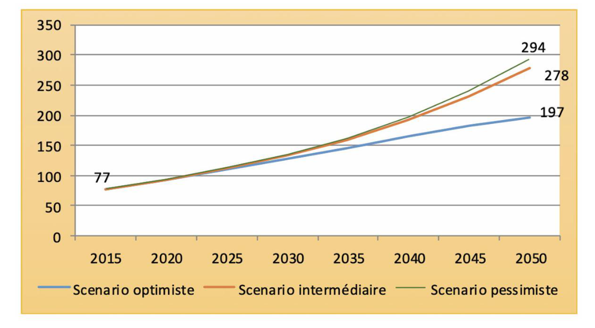
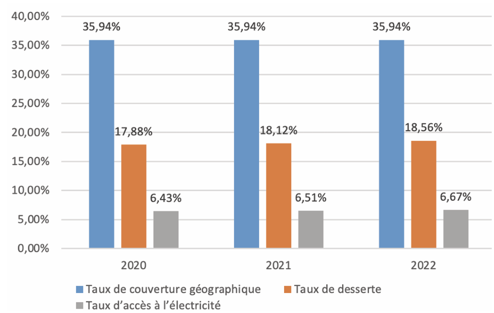
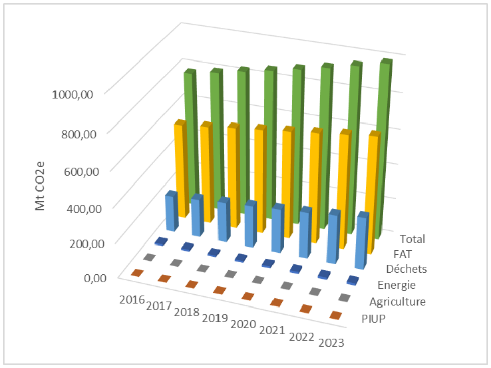
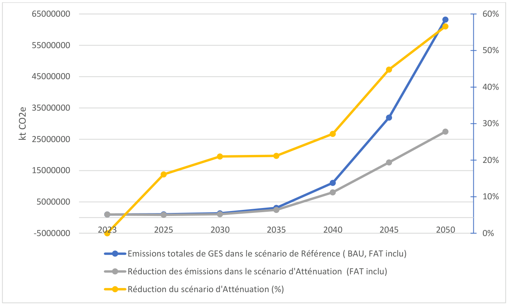
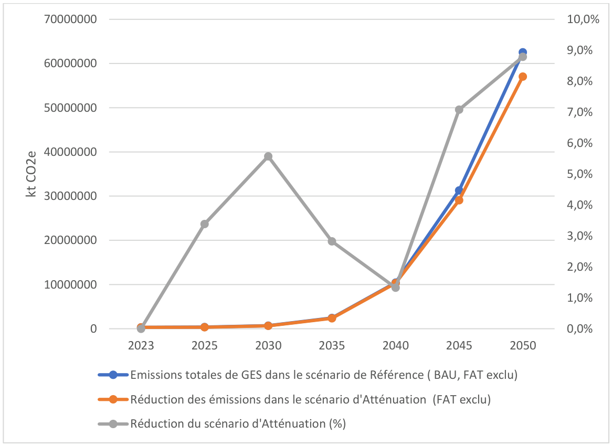
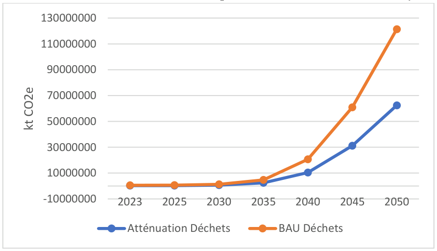
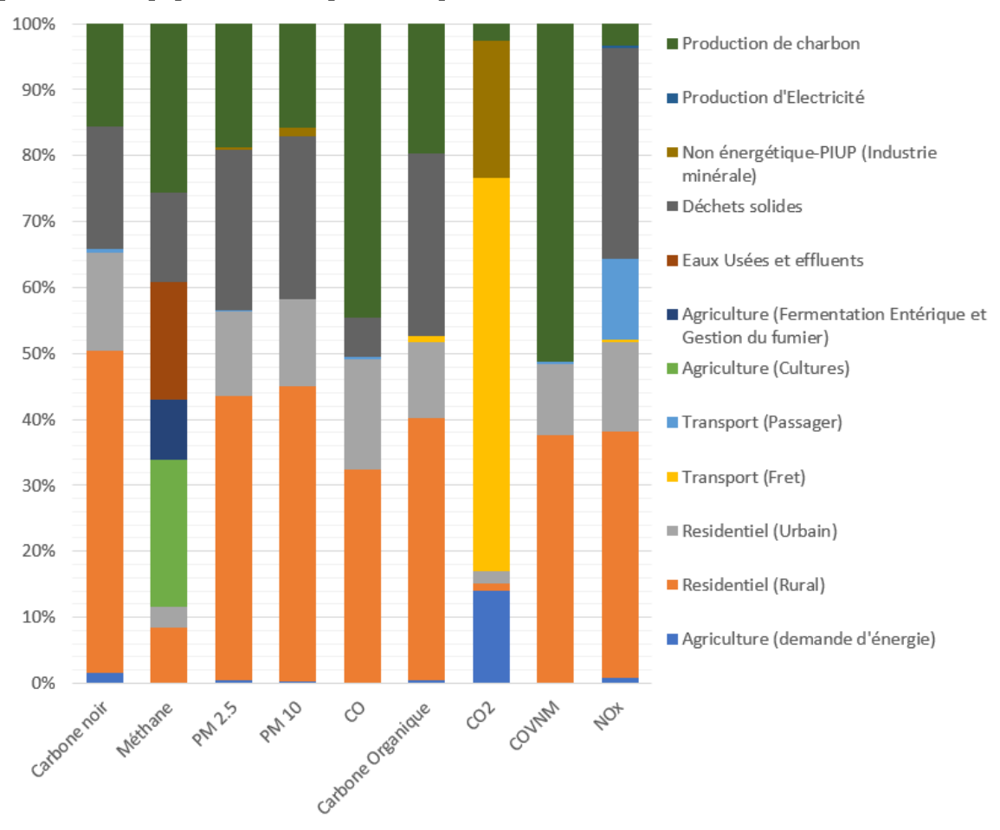
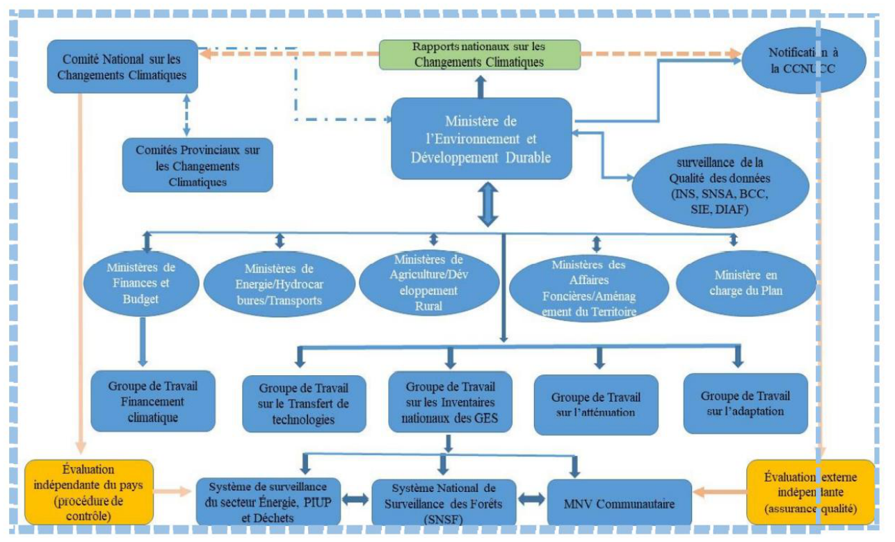

DEMOCRATIC REPUBLIC OF THE CONGO
Ministry of Environment, Sustainable Development and New Climate Economy
Kinshasa, October 2026
Published by
The Ministry of Environment, Sustainable Development and New Climate Economy (MEDD-NEC)
Address: 2895, Boulevard du Palais de la Nation, Gombe, Kinshasa/ Democratic Republic of the Congo
Contributions
Ad hoc Working Group on the Nationally Determined Contribution (NDC)
Place and date of the Intervention
Kinshasa, October 2026
Office and date of publication
Directorate of Development, Sustainable (DDD), Kinshasa, October 2026
Partners
United Nations Development Programme (UNDP), Central African Forest Initiative (CAFI) through the National REDD+ Fund (FONAREDD)
The Democratic Republic of the Congo, a Solution Country in the face of the global climate crisis, reaffirms through this Nationally Determined Contribution (NDC 3.0) its resolute commitment to combating climate change, in accordance with the provisions of the United Nations Framework Convention on Climate Change and the Paris Agreement.
Endowed with the world's second-largest tropical forest massif, exceptional biodiversity and strategic natural resources, the DRC plays an essential role in regulating the global climate. However, it remains highly vulnerable to the adverse effects of climate change, notably through the increase in extreme climate events, food insecurity, the degradation of ecosystems and the weakening of the livelihoods of the population.
This NDC reflects the Government's vision of reconciling socio-economic development, poverty reduction and ambitious climate action. It presents the national priorities for mitigating greenhouse gas emissions and adapting to climate impacts, while highlighting the needs for finance, technology transfer and capacity-building.
NDC 3.0 thus represents a more detailed assessment of mitigation and adaptation measures in the DRC, based on improved data collection, broader sector coverage (Energy, including Transport; Agriculture, Forestry and Other Land Use; and Waste), in-depth technical analysis and extensive stakeholder engagement. Its targeted objective of reducing greenhouse gas emissions by 21% by 2035, relative to the reference scenario, covers carbon dioxide (CO2), methane (CH4) and nitrous oxide (N2O) as well as short-lived air pollutants. This NDC is conditional. The unconditional portion is 2% of the total budget for its implementation.
The priority mitigation measures and actions concern the following sectors and strategic initiatives: forestry and other land use, agriculture and livestock, energy and urban growth, transport, waste management, nature-based solutions and the Kivu-Kinshasa green corridor. This choice reflects the determination to reconcile economic growth, energy transition and environmental preservation.
Furthermore, adaptation is an absolute national priority. NDC 3.0 places at the heart of its ambition the reduction of vulnerability and the strengthening of the resilience of local communities and Indigenous Peoples, the economy and ecosystems. It places particular emphasis on strengthening the resilience of the agricultural sector, food security, biodiversity preservation, water resources management, and water, sanitation and hygiene.
In addition, access to affordable and sustainable energy, education, the development of health infrastructure and child protection, governance and social cohesion (climate–conflict nexus), including climate mobility, the protection of coastal and littoral zones, as well as short-lived air pollutants, have been taken into account.
Achieving these commitments requires considerable investment, estimated at fifty (50) billion US dollars for the period 2026–2035. Its mobilisation will depend on strengthened international cooperation and increased access to innovative climate finance mechanisms.
This NDC, the result of an inclusive and participatory process involving public institutions, territorial authorities, civil society, local communities and Indigenous Peoples, the private sector, academia and technical and financial partners, thus reflects the DRC's determination to strengthen climate governance, ensure the sustainable management of its natural resources and promote a just and resilient transition.
Together, we have the duty and the capacity to transform the climate threat into a historic opportunity to build a sustainable, resilient world that offers hope for present and future generations.
Prof. Marie NYANGE NDAMBO
Minister of Environment, Sustainable Development and New Climate Economy
|
Acronym |
Meaning |
|
AAP |
Other Protected Areas |
|
AFAT |
Agriculture, Forestry and Other Land Use |
|
AFD |
French Development Agency |
|
AQLI |
Air Quality Life Index |
|
AQ/CQ |
Quality Assurance / Quality Control |
|
ARMCA |
Carbon Market Regulatory Authority |
|
BAD |
African Development Bank |
|
BAU |
Business As Usual (trend or reference scenario) |
|
BIT |
International Labour Office |
|
BM |
World Bank |
|
BMC |
Carbon Market Office |
|
BUR1 |
First Biennial Update Report (Biennial Update Report 1) |
|
CAFI |
Central African Forest Initiative |
|
CAPS |
Climate Adaptation and Peacebuilding Solutions |
|
CCAC |
Climate and Clean Air Coalition |
|
CCNUCC |
United Nations Framework Convention on Climate Change |
|
CDB |
Convention on Biological Diversity |
|
CDN |
Nationally Determined Contribution |
|
CDF |
Congolese Franc |
|
CEDEF |
Convention on the Elimination of All Forms of Discrimination against Women |
|
CIFOR |
Center for International Forestry Research |
|
CIFOR-ICRAF |
Center for International Forestry Research - World Agroforestry |
|
CLPE |
Free, Prior and Informed Consent |
|
CMO |
Carbon Market Office |
|
CN |
National Communication |
|
COMIFAC |
Central African Forests Commission |
|
CO₂ |
Carbon dioxide |
|
CO₂e |
Carbon dioxide equivalent |
|
CORSIA |
Carbon Offsetting and Reduction Scheme for International Aviation |
|
DC |
Hunting Domain |
|
DDD |
Directorate of Sustainable Development |
|
DEP |
Directorate of Studies and Planning |
|
DHS |
Demographic and Health Survey |
|
EGI-ODD |
Survey on household expenditure, living standards and the Sustainable Development Goals |
|
EM-DAT |
Emergency Events Database |
|
ENABEL |
Belgian development agency |
|
EPIC |
Energy Policy Institute at the University of Chicago |
|
ETF |
Enhanced Transparency Framework |
|
FAO |
Food and Agriculture Organization of the United Nations |
|
FAO-AQUASTAT |
FAO's global information system on water and agriculture |
|
FAT |
Forestry and other land use |
|
FCPF |
Forest Carbon Partnership Facility |
|
FEM |
Global Environment Facility |
|
FIC |
Climate Investment Funds |
|
FNUAP |
United Nations Population Fund |
|
FONAREDD |
National REDD Fund of the DRC |
|
Forest Trends |
Forest Trends Association |
|
FVC |
Green Climate Fund |
|
GACMO |
Greenhouse Gas Abatement Cost Model |
|
GES |
Greenhouse Gases |
|
GFW |
Global Forest Watch |
|
GIBEC |
Inter-donor Group on Environment and Climate |
|
GIEC |
Intergovernmental Panel on Climate Change |
|
GIZ |
Deutsche Gesellschaft für Internationale Zusammenarbeit |
|
GPL |
Liquefied Petroleum Gas |
|
GRC |
Disaster Risk Management |
|
GT |
Working Group |
|
GT AQ/CQ |
Quality Assurance / Quality Control Working Group |
|
HCR |
Office of the United Nations High Commissioner for Refugees |
|
HEI |
Health Effects Institute |
|
HFC |
Hydrofluorocarbons |
|
ICF |
ICF International |
|
ICH |
Human Capital Index |
|
IDH |
Human Development Index |
|
IGES |
Greenhouse Gas Inventory |
|
INERA |
National Institute for Agronomic Study and Research |
|
INS |
National Institute of Statistics |
|
IPC |
Integrated Food Security Phase Classification |
|
IPCC |
Intergovernmental Panel on Climate Change |
|
IRENA |
International Renewable Energy Agency |
|
ITIE |
Extractive Industries Transparency Initiative |
|
ITMO |
Internationally Transferred Mitigation Outcomes |
|
JICA |
Japan International Cooperation Agency |
|
KOICA |
Korea International Cooperation Agency |
|
LEAP |
Long-range Energy Alternatives Planning System |
|
MEDD |
Ministry of Environment and Sustainable Development |
|
MEDD-NEC |
Ministry of Environment, Sustainable Development and New Climate Economy |
|
MECNT |
Ministry of Environment, Nature Conservation and Tourism |
|
METTELSAT |
National Agency for Meteorology and Satellite Remote Sensing |
|
MINAT |
Ministry of Land-Use Planning |
|
MNV |
Measurement, Reporting and Verification |
|
MRV |
Measurement, Reporting and Verification |
|
MW |
Megawatt |
|
NDC |
Nationally Determined Contribution |
|
ND-GAIN |
Notre Dame Global Adaptation Initiative |
|
NOAA |
National Oceanic and Atmospheric Administration |
|
O₃ |
Tropospheric ozone |
|
OCDE |
Organisation for Economic Co-operation and Development |
|
OCHA |
United Nations Office for the Coordination of Humanitarian Affairs |
|
ODD |
Sustainable Development Goals |
|
OIM |
International Organization for Migration |
|
OMS |
World Health Organization |
|
ONG |
Non-Governmental Organization |
|
PAM |
World Food Programme |
|
PDNA |
Post-Disaster Needs Assessment |
|
PIB |
Gross Domestic Product |
|
PIUP |
Industrial Processes and Product Use |
|
PM2,5 |
Fine particulate matter with a diameter of less than 2.5 micrometres |
|
PM10 |
Fine particulate matter with a diameter of less than 10 micrometres |
|
PME |
Small and Medium-sized Enterprises |
|
PNA |
National Adaptation Plan |
|
PNSD |
National Strategic Development Plan |
|
PNUE |
United Nations Environment Programme |
|
PNUD |
United Nations Development Programme |
|
PPP |
Public-Private Partnership |
|
PSE |
Payment for Environmental Services |
|
PTC |
Technical Consultation Platform on the NDC |
|
RB |
Biosphere Reserve |
|
RBT |
Biennial Transparency Report |
|
RC |
Hunting Reserve |
|
RDC |
Democratic Republic of the Congo |
|
REDD+ |
Reducing Emissions from Deforestation and Forest Degradation, including conservation, sustainable management of forests and enhancement of forest carbon stocks |
|
RFUK |
Rainforest Foundation UK |
|
RN |
Nature Reserve |
|
S&E |
Monitoring and Evaluation |
|
SIPRI |
Stockholm International Peace Research Institute |
|
SLCP |
Short-Lived Climate Pollutants |
|
SN-MNV |
National Measurement, Reporting and Verification System |
|
SSP2-4.5 |
Shared Socioeconomic Pathway 2, intermediate emissions scenario |
|
SSP5-8.5 |
Shared Socioeconomic Pathway 5, high emissions scenario |
|
TEC |
Technology Executive Committee |
|
TFFF |
Tropical Forest Finance Facility |
|
UE |
European Union |
|
UNDP |
United Nations Development Programme |
|
UNEP |
United Nations Environment Programme |
|
UNESCO |
United Nations Educational, Scientific and Cultural Organization |
|
UNFCCC |
United Nations Framework Convention on Climate Change |
|
UNFPA |
United Nations Population Fund |
|
UNICEF |
United Nations Children's Fund |
|
UTCATF |
Land Use, Land-Use Change and Forestry |
|
WASH |
Water, Sanitation and Hygiene |
|
WRI |
World Resources Institute |
|
WWF |
World Wide Fund for Nature |
|
ZCIT |
Intertropical Convergence Zone |
The Democratic Republic of the Congo (DRC) has the honour of submitting its third iteration of the Nationally Determined Contribution (NDC 3.0) for the period 2026-2035 to the Executive Secretariat of the United Nations Framework Convention on Climate Change (UNFCCC), in accordance with the provisions of the Paris Agreement, in particular its Articles 4.2 and 4.11, as well as paragraph 24 of decision 1/CP.21.
Although a low emitter of greenhouse gases (GHGs), the DRC remains particularly vulnerable to the effects of climate change. Climate projections for the period 2031-2060 indicate generalised warming across the entire national territory, with an increase in mean annual temperatures of between +1.2 °C and +1.6 °C. With regard to precipitation, projections remain uncertain. On an annual scale, the majority of climate models do not project significant changes in mean totals in the central basin or in the northern and southern savannahs by the middle of the century. On the other hand, a more robust signal points to an accentuation of seasonality, characterised by longer dry seasons and shorter rainy seasons, but marked by more intense extreme precipitation events.
The DRC is thus highly exposed to an intensification of extreme climate events, notably recurrent floods, landslides, episodes of drought in certain regions and localised coastal erosion. These phenomena weaken populations, infrastructure and ecosystems. Scientific projections also point to a significant decline in agricultural production, worsening food insecurity, a resurgence of water-borne diseases, an increase in population displacement and economic losses that could reach approximately 13% of GDP by 2050.
In view of the severity and high cost of these impacts, adaptation is a major strategic priority for the DRC. In this regard, the country reaffirms its determination to contribute actively to the global response to climate change, from a perspective of sustainable development and poverty reduction.
The fight against Climate Change is part of the National Strategic Development Plan (PNSD 2024-2028), which promotes balanced, inclusive and sustainable development, consistent with the Sustainable Development Goals (SDGs) for 2030. This plan rests on five strategic pillars closely linked to climate issues, notably water, energy and food security, the development of a competitive low-carbon economy, and the enhancement and strengthening of the resilience of natural resources and ecosystems in the face of climate change. The plan also relies on several levers of transformation, notably human capital development, digital technology, innovation, research, regulatory reforms, economic and fiscal instruments and integrated territorial planning.
In order to strengthen the implementation of its climate policy and raise its level of ambition, the DRC has undertaken a process of developing NDC 3.0 based on a participatory and inclusive approach involving all stakeholders, in particular public institutions, the private sector, civil society, women and young people. This process benefited from the support of Technical and Financial Partners, notably the United Nations Development Programme.
NDC 3.0 marks significant progress compared with NDC 2.0 published in 2021, notably thanks to greater transparency of the process, improved data quality and raised climate ambition. It strengthens commitments on GHG emission mitigation and also aims to increase adaptive capacity and resilience, in particular through the inclusion of short-lived air pollutants. Aligned with the recommendations of the first Global Stocktake of 2023 — notably tripling global renewable energy capacity by 2030, doubling the rate of energy efficiency improvement and the phase-down of coal production and use —, NDC 3.0 represents the highest level of ambition currently conceivable for the DRC. Taking national circumstances into account, it sets objectives and implementation measures consistent with the principle of common but differentiated responsibilities and respective capabilities.
Under this NDC 3.0, the DRC aims for an overall reduction in GHG emissions of 21% relative to the reference scenario (BAU) by 2035, or approximately 700 MtCO₂e. This ambition rests mainly on reducing deforestation, preserving forest carbon sinks, a progressive energy transition, the sustainable management of urban waste, improved agricultural practices and the development of nature-based solutions. The projected reduction scenario nevertheless reflects much more ambitious efforts in the long term, with absolute reductions reaching 35 769 098 ktCO₂e by 2050. Reduction rates would thus increase from 16% to 21% in 2035, then to 57% in 2050, reflecting an acceleration of climate efforts and the growing effectiveness of the policies implemented after 2040.
NDC 3.0 has also enabled better structuring of adaptation and resilience-building projects in several priority sectors. In this context, a portfolio of 40 mitigation programmes has been developed, requiring financing estimated at USD 25 billion. The objectives of NDC 3.0 are fully in line with the implementation of the national low-carbon roadmap, which steers public policy towards a sustainable, low-carbon development model by 2050.
Furthermore, given the country's high vulnerability to the effects of climate change, NDC 3.0 strengthens action on early warning, climate risk prevention and adaptation, with a view to reducing the loss and damage already suffered by the population.
To this end, 25 adaptation programmes have been identified. NDC 3.0 also provides for an integrated approach to the prevention and management of risks associated with extreme climate events, in order to ensure the safety and protection of people, property and ecosystems. Adaptation financing needs are estimated at approximately USD 30 billion.
NDC 3.0 also builds on the current momentum in the development of carbon markets in the DRC, recognising the strategic role of the private sector in mobilising climate finance through the valorisation of carbon credits from the forest, energy, agriculture and waste sectors. The DRC thus shows a marked interest in carbon market mechanisms with a view to mobilising additional financing. To this end, several initiatives have already been undertaken to operationalise the cooperative approaches provided for under Article 6 of the Paris Agreement and to develop eligible activities on the national territory.
Methodologically, the DRC emphasises the importance of economic efficiency and of the environmental and social co-benefits of climate actions. In this respect, the use of the sectoral average abatement cost indicator (USD/t CO₂-eq. reduced) is a relevant tool not only for assessing national sectoral performance in reducing GHG emissions, in light of the investments required and the associated reduction volumes, but also for facilitating comparisons between countries, groups of countries and at the global level.
NDC 3.0 is deeply rooted in a social approach and promotes a just, equitable and inclusive transition. It fully integrates the principles of equity, gender equality and the promotion of employability. Its development was based on a participatory process that mobilised all political and societal stakeholders, notably young people, women, civil society, the Directorates of Studies and Planning of sectoral ministries, gender focal points and representatives of the various provinces of the DRC.
By placing social and territorial priorities at the heart of its NDC 3.0, the DRC reaffirms its role as a committed and dynamic actor in global climate action. Its commitment is not limited to mitigating GHG emissions, adaptation and building resilience; it also extends to promoting social justice and equity, so that every citizen and every territory can benefit from the positive spin-offs of this climate transition.
The Democratic Republic of the Congo (DRC) presents its Nationally Determined Contribution (NDC) for the period 2026-2035, hereinafter referred to as NDC 3.0, in accordance with Articles 4.2 and 4.11 of the Paris Agreement, paragraph 24 of decision 1/CP.21, and all other relevant provisions of the Agreement.
The DRC frames its climate action within the 2030 Agenda for Sustainable Development, with the ambition of achieving a sustainable structural transformation of its economy. It intends to contribute responsibly to the global response to the climate emergency, through the implementation of inclusive, economically efficient, environmentally sustainable and socially equitable policies, strategies and plans, consistent with the Sustainable Development Goals (SDGs) adopted by the United Nations.
It is within this overall framework that the DRC's new NDC (NDC 3.0) is situated, constituting an updated and strengthened expression of national climate ambition, while consolidating the requirements of transparency and accountability. It integrates all the relevant SDGs of the 2030 Agenda, in particular SDG 13 on combating climate change and its impacts. NDC 3.0 thus adopts an integrated, coherent and holistic approach to sustainable development.
Although a low emitter on a global scale, the DRC has always maintained that the collective commitment of all countries remains an essential condition for achieving the ultimate objective of the UNFCCC, namely the stabilisation of greenhouse gas concentrations in the atmosphere in order to prevent dangerous anthropogenic interference with the climate system.
In continuity with its commitment, the DRC actively supports the "Action Agenda" launched since the adoption of the Paris Agreement, aimed at accelerating and scaling up the fight against climate change. This commitment is reflected in the enhancement of existing partnerships, the promotion of new initiatives, and the identification and dissemination of good practices and climate action opportunities in support of sustainable transformation.
The first Global Stocktake of the Paris Agreement, adopted at COP28/CMA5 in Dubai, highlights the inadequacy of current efforts to achieve the goals of the Paris Agreement. It underlines the urgency of enhanced action in order to remain on a trajectory limiting warming to 1.5 °C and to reach a global peak in emissions before 2025.
In response, decision 1/CMA.5 encourages Parties to set economy-wide emission reduction targets covering all greenhouse gases, sectors and categories. It also calls for tripling global renewable energy capacity and doubling the global average annual rate of energy efficiency improvement by 2030. It further recommends the phase-down of unabated coal use, reducing dependence on fossil fuels in energy systems, and promoting zero- or low-emission technologies (paragraph 28), and encouraging sustainable lifestyles and patterns of consumption (paragraph 36), among other measures.
In this context, the DRC's new NDC fully takes into account the conclusions of the first Global Stocktake adopted at CMA5. It reflects a significant strengthening of national climate ambition, consistent with a trajectory compatible with the goal of limiting warming to 1.5 °C and achieving carbon neutrality by 2050. It draws on the most recent scientific data, notably that of the Intergovernmental Panel on Climate Change (IPCC).
NDC 3.0 sets an emission reduction target covering the entire economy, all greenhouse gases, and all emission sectors and categories.
The guidance arising from decision 1/CMA.5 is integrated, to the extent possible, into the national implementation framework, notably through the Action Plan (roadmap) for the implementation of NDC 3.0 to 2035.
Further details on the guidance from the Global Stocktake are presented in the table below, which brings together the information necessary for clarity, transparency and proper understanding of the DRC's NDC 3.0.
The Democratic Republic of the Congo presents in Table 1 the information likely to improve the clarity, transparency and understanding of its Nationally Determined Contribution (NDC 3.0), in accordance with the recommendations and guidance of the Ad Hoc Working Group on the Paris Agreement (APA).
|
1. Quantifiable information on the reference point (including, as appropriate, a base year) |
|
|
a. Reference year(s), base year(s), reference period(s) or other starting point(s) |
2016 |
|
b. Quantifiable information on the reference indicators, their values in the reference year(s), base year(s), reference period(s) or other starting point(s), and, as applicable, in the target year |
The reference indicator is quantified on the basis of total national greenhouse gas (GHG) emissions. For the reference year (2016), the emission level was 1 100 MtCO₂e. |
|
c. For strategies, plans and actions referred to in Article 4, paragraph 6, of the Paris Agreement, or polices and measures as components of nationally determined contributions where paragraph 1(b) above is not applicable, Parties to provide other relevant information |
N/A |
|
d. Target relative to the reference indicator, expressed numerically, for example in percentage or amount of reduction |
Commitments whose financing is guaranteed, whatever its origin (national or international), are considered unconditional. They encompass not only actions implemented by the State from its own resources, but also projects and programmes financed by public enterprises and the private sector, as well as those benefiting from international financing already secured. Conversely, conditional commitments depend on the mobilisation of international financing which, to date, is not yet guaranteed. |
|
e. Information on sources of data used in quantifying the reference point(s) |
The quantification of the reference indicators is based on data from the national greenhouse gas (GHG) emissions inventory, as presented in the National Inventory Report and the First Biennial Transparency Report, submitted in December 2024 to the UNFCCC Secretariat. |
|
f. Information on the circumstances under which the Party may update the values of the reference indicators |
The national greenhouse gas (GHG) emissions inventory is regularly reviewed by the Directorate of Sustainable Development, through its Climate Change Division, which is responsible for preparing the inventory. This review is also carried out by the Directorate of Forest Inventory and Management of the Ministry of Environment, Sustainable Development and New Climate Economy. This process relies on the National Forest Monitoring System, which integrates both the National Forest Inventory and the Satellite Land Monitoring System. In addition, information relating to the reference indicators may be updated and recalculated to reflect ongoing methodological improvements and the availability of relevant new data. Updates made are documented in the reports submitted to the UNFCCC, notably in the biennial transparency reports. |
|
2. Time frames and/or periods for implementation |
|
|
a. Time frame and/or period for implementation, including start and end date, consistent with any further relevant decision adopted by the Conference of the Parties serving as the meeting of the Parties to the Paris Agreement (CMA) |
2026 - 2035 |
|
b. Whether it is a single-year or multi-year target, as applicable |
Target in 2035: 21% |
|
3. Scope and coverage |
|
|
a. General description of the target |
Commitment to reduce GHG emissions by 21% (700 Mt CO2-eq.) in 2035, compared with the BAU scenario, with financing secured at domestic and international levels. |
|
b. Sectors, gases, categories and pools covered by the nationally determined contribution, including, as applicable, consistent with Intergovernmental Panel on Climate Change (IPCC) guidelines |
The Nationally Determined Contribution (NDC) covers the entire national economy. It reflects all greenhouse gas emissions and removals, as reported in the first Biennial Transparency Report (BTR1) to be published in December 2026. It encompasses in particular:
In addition, all emission and removal categories defined in the IPCC guidelines (2006) that are present on the territory of the DRC are taken into account in the NDC. |
|
c. How the Party has taken into consideration paragraph 31(c) and (d) of decision 1/CP.21 |
The DRC's NDC covers all categories of anthropogenic emissions and removals estimated in its greenhouse gas (GHG) inventory. No source, sink, sector or activity taken into account in previous versions of the NDC has been excluded from this update. Particular attention has been paid to the inclusion of short-lived air pollutants. Only categories of anthropogenic emissions or removals that do not exist in the country are not covered. Efforts are currently focused on the sectors with the greatest mitigation potential and the best implementation prospects. They are also aligned with the key category analysis of the national GHG emissions inventory. |
|
d. Mitigation co-benefits resulting from Parties' adaptation actions and/or economic diversification plans, including description of specific projects, measures and initiatives of Parties' adaptation actions and/or economic diversification plans |
The adaptation actions implemented in the DRC generate significant climate change mitigation co-benefits through integrated, multisectoral approaches. By combining sustainable agriculture, forest management and access to clean energy, these initiatives simultaneously help to reduce deforestation, promote renewable energy and foster a transition to a low-carbon economy, while improving the living conditions of the population. In addition, strengthening natural carbon sinks, notably through reforestation, combating illegal logging and REDD+ programmes, increases CO₂ absorption, preserves biodiversity and supports mitigation at the global level. Adaptation policies also encourage resilient livelihoods, such as income diversification, climate-smart agricultural practices and alternative energy systems, thereby reducing pressure on forests, dependence on fuelwood and emissions linked to unsustainable practices. In addition, the transition to a green economy, supported by local processing of resources and the creation of value chains, helps to limit emissions linked to transport and intensive exploitation, while promoting cleaner industries. Finally, improving the resilience of communities and institutions through various support programmes reduces dependence on destructive practices and fosters the sustainable management of natural resources, thereby leading to an indirect reduction in greenhouse gas emissions. |
|
4. Planning processes |
|
|
a. Information on the planning processes that the Party undertook to prepare its nationally determined contribution and, if available, on the Party's implementation plans, including, as appropriate: |
The inclusive and structured participation of stakeholders was at the heart of the evaluation of NDC 2.0 and the development of NDC 3.0, ensuring transparency, national ownership and representativeness of actors (institutions, local authorities, civil society, vulnerable groups and partners). The evaluation of NDC 2.0 relied on a technical consultation platform that made it possible to identify progress, challenges and key lessons to guide NDC 3.0. The development of NDC 3.0 included targeted consultations with young people, parliamentarians, public institutions, civil society and Indigenous Peoples, in order to ensure equity, policy alignment and social inclusion. Provincial consultations also made it possible to take territorial realities into account. Technical and financial partners were involved to ensure consistency with international commitments and financing mechanisms. The process concluded with a national validation workshop, whose recommendations were incorporated before official adoption by the Council of Ministers. |
|
i. Domestic institutional arrangements, public participation and engagement with local communities and indigenous peoples, in a gender-responsive manner. ii. Contextual matters, including, inter alia, as appropriate: |
In the DRC, natural resource management relies on a set of public institutions, legal frameworks and international commitments aimed at promoting environmental conservation, citizen participation and the inclusion of local communities. 1. Institutional and legal framework Environmental governance is mainly ensured by the Ministry of Environment, Sustainable Development and New Climate Economy, supported by the Congolese Institute for Nature Conservation (ICCN) and the Congolese Environment Agency (ACE), which is responsible for environmental and social impact assessments. This framework is reinforced by the 2002 Forest Code, which recognises certain community rights through local community forest concessions (CFCL), as well as by international commitments such as the Paris Agreement. However, the effectiveness of this framework remains limited by weak enforcement of legislation, insufficient institutional coordination and technical and financial capacity constraints. 2. Public participation Citizen participation is integrated into procedures, notably through mandatory public consultations in environmental and social impact assessments (ESIAs), the involvement of civil society, and the mechanisms of the REDD+ programme. Nevertheless, this participation often remains a formality. It is hampered by limited access to information, a lack of transparency in certain extractive projects and still insufficient genuine involvement of rural populations. 3. Collaboration with local communities and Indigenous Peoples The DRC is progressively recognising the role of local communities and Indigenous Peoples, notably through the CFCLs, the 2022 law on the protection of Indigenous Peoples, and certain protected area co-management initiatives. Despite this progress, major challenges persist, notably land conflicts, incomplete recognition of customary rights and the socio-economic marginalisation of Indigenous Peoples. 4. Gender considerations Gender mainstreaming is progressing in environmental policies, with growing participation of women in natural resource management projects and climate programmes such as REDD+. National strategies also encourage their inclusion. However, inequalities persist, linked to women's limited access to land and resources, their low representation in decision-making bodies and restrictive socio-cultural norms. |
|
ii (a). National circumstances, such as geography, climate, economy, sustainable development and poverty eradication |
The DRC is one of the largest States in the world and the largest in Africa, with an area of approximately 2.34 million km². Located in Central Africa, it shares its borders with nine countries, giving it a major geostrategic position at the heart of the continent. Its territory is dominated by the Congo River basin, which covers nearly 60% of the country and is home to the world's second-largest tropical rainforest after the Amazon, covering approximately 1.7 million km². The Congo River, more than 4 700 km long, is a vital navigation route and represents a hydroelectric potential estimated at more than 100 GW, notably at the Inga site. The relief is contrasted, with vast forested plains and depressions in the centre, high plateaus in the east and south, and in the east an active volcanic chain including the Albertine Rift region. The country is also home to natural areas of global importance such as Virunga National Park, a UNESCO World Heritage Site, and Kahuzi-Biega National Park, known for the protection of eastern lowland gorillas. The climate is predominantly equatorial, hot and humid, with mean temperatures of between 24 and 27 °C and abundant rainfall often exceeding 1 500 to 2 000 mm per year in the centre of the country, favouring dense forest and exceptional biodiversity. In the south and east, the climate becomes tropical, with a more marked alternation between dry and wet seasons, strongly influencing agricultural activities. Economically, despite exceptional natural wealth, the country remains poorly industrialised and has major strategic resources, notably approximately 70% of world cobalt production, as well as large reserves of copper, gold, diamonds and columbite-tantalite (coltan), not to mention still under-exploited agricultural potential and vast hydroelectric potential. Agriculture, centred on cassava, maize, coffee and cocoa, employs the majority of the population but remains poorly mechanised, while the extractive sectors dominate exports despite structural problems such as insecurity, corruption and weak infrastructure. Sustainable development in the DRC rests on a balance between economic exploitation and environmental protection, but faces major challenges such as deforestation of the Congo Basin, sometimes destructive artisanal mining, pollution of soils and waterways, and demographic pressure with a population exceeding 100 million in 2026. However, the country also has major opportunities, notably its role as a global carbon sink thanks to its forest, the development of renewable energies such as hydropower and solar, and the presence of protected areas such as Virunga and Kahuzi-Biega. Finally, despite its wealth, the DRC has a high poverty rate, with more than 60% of the population living below the poverty line according to several estimates, owing in particular to political instability, lack of infrastructure, limited access to social services and high unemployment. Priority solutions rest on good governance and the fight against corruption, investment in education and health, the modernisation of agriculture, local processing of natural resources and the development of energy and transport infrastructure. |
|
ii (b). Best practices and experience related to the preparation of the NDC |
The DRC, endowed with the world's second-largest tropical forest massif, places the forest/LULUCF sector at the heart of its climate policy. Its revised NDC (2021) aims for a 21% reduction in GHG emissions by 2030, conditional on international support, with particular emphasis on forests, considered a central lever for making the country a "solution country". In this context, REDD+ is the main operational instrument for translating climate ambitions into the forest sector. The REDD+ process makes it possible to give concrete effect to the NDC through several complementary axes. It acts directly on emission reductions by combating deforestation and forest degradation and by promoting sustainable management and the conservation of carbon stocks. It is also deployed at the territorial level through integrated programmes such as the PIREDDs, which combine sustainable agriculture, agroforestry, land governance and alternative energy solutions. Institutionally, it relies on a structured architecture comprising national REDD+ coordination, FONAREDD and forest monitoring systems (MRV/NFMS). Finally, it facilitates the mobilisation of international climate finance and the development of investment plans aligned with the NDC. Implementation experience in the DRC has made it possible to identify several good practices. First, structured multi-stakeholder governance involving the State (notably the MEDD), donors and NGOs fosters coherence between policies and actions. Second, the integrated territorial approach embodied by the PIREDDs is a major innovation, combining several sectors (forests, agriculture, energy and local development). In addition, the measurement, reporting and verification (MRV) system strengthens the country's transparency and international credibility, while facilitating access to results-based finance. This performance-based financing logic marks an important shift towards measurable results. Moreover, the participation of local communities, Indigenous Peoples, women and young people strengthens ownership and the sustainability of actions. Finally, the progressive alignment between REDD+, the NDC and national development policies improves overall strategic coherence. However, several critical lessons emerge. The success of climate policies depends on effective synergy between forest protection and economic development, in order to generate alternatives to income linked to deforestation. Heavy dependence on international financing underlines the need to strengthen domestic resources. Conflicts linked to land governance remain a major driver of deforestation, calling for greater land tenure security. Institutional and technical capacities remain limited, notably in terms of reliable data and monitoring. Finally, multisectoral coordination between energy, agriculture and forests remains complex and requires more robust integrated planning. In summary, the DRC's experience shows that the joint implementation of the NDC and REDD+ relies on structured governance, integrated territorial programmes, a credible monitoring system, results-based finance and strong community participation. However, persistent challenges relating to financing, pressure on forests, land governance and sectoral coordination still limit the full effectiveness of these arrangements |
|
ii (c). Other contextual aspirations and priorities acknowledged when joining the Paris Agreement |
Within the framework of the Paris Agreement, the Democratic Republic of the Congo (DRC) has defined its climate priorities on the basis of its development realities and its high vulnerability. It positions itself as a "solution country", thanks to its Congo Basin forests, its biodiversity and its renewable energy potential, which enable it to contribute to global climate regulation beyond simply reducing emissions. The DRC also emphasises sustainable development, linking climate action to the fight against poverty, access to energy and improved living conditions. In this context, it attaches major importance to adaptation to climate change, notably to strengthen the resilience of the population, protect ecosystems and manage climate risks. Another essential axis is the valorisation of forests, through the fight against deforestation and participation in the REDD+ mechanism, which provides access to carbon finance. In addition, the DRC insists on the need for international financial and technological support, in line with the principle of climate justice and common but differentiated responsibilities. Finally, the country considers the strengthening of climate governance a priority, including transparency, institutional coordination and the involvement of local communities in environmental policies. |
|
b. Specific information applicable to Parties, including regional economic integration organizations and their member States, that have reached an agreement to act jointly under Article 4, paragraph 2, of the Paris Agreement, including the Parties that agreed to act jointly and the terms of the agreement, in accordance with Article 4, paragraphs 16–18, of the Paris Agreement |
N/A |
|
c. How the Party's preparation of its nationally determined contribution has been informed by the outcomes of the global stocktake, in accordance with Article 4, paragraph 9, of the Paris Agreement d. Each Party with a nationally determined contribution under Article 4 of the Paris Agreement that consists of adaptation action and/or economic diversification plans resulting in mitigation co-benefits consistent with Article 4, paragraph 7, of the Paris Agreement to submit information on: |
The Global Stocktake from COP28 highlights an overall climate ambition gap, confirming that current State commitments do not make it possible to limit warming to 1.5°C. In light of this, the DRC has revised its Nationally Determined Contribution (NDC) in order to strengthen its alignment with the goals of the Paris Agreement. First, the DRC is raising its level of climate ambition, incorporating a trajectory more consistent with 1.5°C. This translates into a stronger emphasis on combating deforestation, the energy transition and reducing emissions in key sectors. Second, the NDC gives greater prominence to adaptation, in response to the acceleration of climate impacts. Priorities include agriculture, water management, the resilience of vulnerable communities and nature-based solutions, in particular the forests of the Congo Basin. In addition, the document gives greater consideration to the question of loss and damage, recognising the irreversible impacts of climate change and the need for enhanced international support. The DRC also underlines the conditional nature of certain actions, which depend on climate finance, technology transfer and capacity-building, in line with the lessons of the Global Stocktake. Furthermore, the NDC improves its implementation, monitoring and transparency mechanisms, in order to make the objectives more measurable and verifiable, consistent with the Paris Agreement. Finally, particular attention is paid to carbon sinks, notably the forests of the Congo Basin, whose protection and sustainable management are central to the country's climate strategy. |
|
i. How the economic and social consequences of response measures have been considered in developing the nationally determined contribution |
N/A |
|
ii. Specific projects, measures and activities to be implemented to contribute to mitigation co-benefits, including information on adaptation plans that also yield mitigation co-benefits, which may cover, but are not limited to, key sectors, such as energy, resources, water resources, coastal resources, human settlements and urban planning, agriculture and forestry; and economic diversification actions, which may cover, but are not limited to, sectors such as manufacturing and industry, energy and mining, transport and communication, construction, tourism, real estate, agriculture and fisheries. |
The DRC occupies a strategic place in global climate issues owing to the scale of its natural resources and its strong demographic dynamics. It has the world's second-largest tropical forest massif, covering approximately 200 million hectares, capable of absorbing between 1.2 and 1.5 billion tonnes of CO₂ per year. The country also has exceptional hydroelectric potential estimated at more than 100 GW, of which the Inga site alone represents a major share. However, this wealth exists in a context of strong urban growth, notably in Kinshasa (approximately 17 to 18 million inhabitants), an urbanisation rate of more than 4% per year, and a largely agricultural economy (approximately 70% of the working population), with still limited use of arable land. The DRC thus faces a central challenge: reconciling economic development, environmental pressure and climate vulnerability. To address these issues, several policies and projects are being developed in key sectors. In energy, hydropower (notably Inga III), solar mini-grids and the reduction of urban diesel use aim to reduce emissions while improving access to electricity, particularly in rural areas. In the forest sector, REDD+ programmes, reforestation and the fight against illegal logging seek to limit deforestation, while protecting populations highly dependent on forests and improving sustainable land management. In agriculture, the promotion of agroforestry, the reduction of slash-and-burn and the adoption of resilient agricultural practices make it possible both to reduce emissions and to strengthen adaptation to climate hazards, in a context where irrigation remains very limited. Water management relies on watershed protection, flood warning systems and improved access to drinking water, which is still insufficient for nearly half the population. Finally, cities, in particular Kinshasa, are developing urban resilience strategies through drainage, urban planning and public transport in order to limit the impacts of flooding and rapid urban growth. In addition, the DRC seeks to diversify its economy from a greener perspective. This involves local processing of mineral and agricultural resources in order to reduce exports of raw materials, cleaner electrification of mining sites, and the strengthening of environmental standards. The development of public transport, digitalisation and logistics optimisation also contribute to reducing emissions. Sustainable tourism, notably in biodiversity-rich national parks, also represents an important economic lever, as do agri-food processing and aquaculture aimed at reducing losses and strengthening local value chains. Finally, an essential aspect lies in the co-benefits between adaptation and mitigation. Many actions simultaneously combine emission reductions and resilience-building: agroforestry improves food security while storing carbon, REDD+ programmes generate income while protecting forests, hydropower supports clean and stable energy, while sustainable urban planning and watershed management reduce both emissions and the risks of natural disasters. Thus, the climate transition in the DRC rests on an integrated logic in which development, environmental protection and resilience are closely linked. |
|
5. Assumptions and methodological approaches, including those for estimating and accounting for anthropogenic greenhouse gas emissions and, as appropriate, removals: |
|
|
a. Assumptions and methodological approaches used for accounting for anthropogenic greenhouse gas emissions and removals corresponding to the Party's nationally determined contribution, consistent with paragraph 31 of decision 1/CP.21 and accounting guidance adopted by the CMA |
The DRC applies the 2006 guidelines of the Intergovernmental Panel on Climate Change (IPCC) for accounting for anthropogenic greenhouse gas (GHG) emissions and removals. This approach is consistent with the provisions of paragraph 31 of decision 1/CP.21, as well as with the requirements of Article 4.13 of the Paris Agreement, paragraphs 13 to 17 of decision 4/CMA.1 and its annex II. Accordingly, the DRC uses the IPCC guidelines (2006) for estimating emissions and removals, using the 100-year global warming potentials (GWPs) from the Sixth Assessment Report (AR6), with the exception of the value for fossil methane. Projections are developed using the GACMO model (Greenhouse Gas Abatement Cost Model), an Excel-based simulation tool for projecting GHG emissions, assessing mitigation costs and designing reduction strategies based on robust data. |
|
b. Assumptions and methodological approaches used for accounting for the implementation of policies, measures or strategies in the nationally determined contribution |
In the case of the Democratic Republic of the Congo (DRC), accounting for the implementation of the policies and measures set out in the Nationally Determined Contribution (NDC) is based on a methodological framework consistent with the requirements of the UNFCCC and the IPCC guidelines, while incorporating adapted national assumptions. It is based first on consistency with the national greenhouse gas inventory, which makes it possible to use the same baseline data and the same sectoral categories in order to ensure the harmonisation of estimates. Emission reductions are then assessed against a so-called Business As Usual (BAU) reference scenario, which assumes emissions evolve in the absence of additional climate policies, while the principle of additionality ensures that only actions explicitly included in the NDC (energy, agriculture, forests/AFOLU and waste) are taken into account. Methodologically, the DRC applies the 2006 IPCC guidelines for estimating emissions and removals, using standardised or nationally adapted emission factors, which ensures the comparability, transparency and technical robustness of the results. This approach is complemented by a Measurement, Reporting and Verification (MRV) system, which makes it possible to monitor climate actions through the collection of sectoral data, the production of regular reports and the verification of results obtained. Policy accounting follows a structured approach comprising the identification of actions, the calculation of avoided emissions by sector, their aggregation, and then their comparison with the BAU scenario in order to determine the rate of achievement of the NDC. In addition, these estimates are dynamic and may be revised in line with improvements in national inventories, changes in data or updates to methods. The data used come mainly from national institutions, supplemented by international sources such as FAO and the World Bank, notably for the agricultural and forestry sectors. Finally, certain structuring sectoral assumptions underpin the entire framework, notably the central role of the forest/AFOLU sector as a carbon sink, the progressive development of renewable energies, the gradual improvement of data collection systems and heavy dependence on external financing for the implementation of certain climate measures. |
|
c. If applicable, information on how the Party will take into account existing methods and guidance under the Convention to account for anthropogenic emissions and removals, in accordance with Article 4, paragraph 14, of the Paris Agreement, as appropriate |
N/A |
|
d. IPCC methodologies and metrics used for estimating anthropogenic greenhouse gas emissions and removals e. Sector-, category- or activity-specific assumptions, methodologies and approaches consistent with IPCC guidance, as appropriate, including, as applicable: |
|
|
i. Approach to addressing emissions and subsequent removals from natural disturbances on managed lands |
All emissions and removals reported in the DRC's GHG inventory are included in the NDC, with no specific approach to excluding emissions due to natural disturbances. |
|
ii. Approach used to account for emissions and removals from harvested wood products |
In the case of the DRC (as for any Party to the UNFCCC), accounting for emissions and removals related to harvested wood products (PLR / HWP – Harvested Wood Products) mainly follows the IPCC guidelines (IPCC 2006 and the 2019 Refinement), integrated into the national greenhouse gas inventory. |
|
iii. Approach used to address the effects of age-class structure in forests |
In the tropical forests of the Congo Basin in the DRC, taking account of age-class structure is part of a progressive silvicultural approach adapted to irregular, multi-aged ecosystems. It begins with a diagnosis of stands based on forest inventories, diameter distribution, species identification and analysis of natural regeneration, in order to determine whether the forest is in equilibrium or disequilibrium. Next, analysis of the effects of this structure makes it possible to assess its impact on productivity, regeneration of commercial species, ecological stability, carbon storage and future timber availability, taking into account the imbalances caused by selective logging. This understanding is complemented by modelling of forest dynamics, which simulates growth, mortality and the evolution of diameter classes under different logging scenarios, in order to test their sustainability. On this basis, sustainable management rules are defined, notably the minimum felling diameter, cutting rotations and authorised annual volumes, with the aim of maintaining a balance between age classes. These principles are then applied through forest management plans, controlled selective logging and the protection of young trees and seed trees. Finally, regular monitoring makes it possible to adjust practices through re-inventories and the adaptation of quotas and methods in line with ecological changes and climatic or human pressures. |
|
f. Other assumptions and methodological approaches used for understanding the nationally determined contribution and, if applicable, estimating corresponding emissions and removals, including: |
Within the framework of its Nationally Determined Contribution (NDC), the DRC has defined a set of indicators and reference levels to measure and track, in a transparent, consistent and traceable manner, its efforts to mitigate greenhouse gas (GHG) emissions. Reference year: 2016 was selected as the reference year. It constitutes the historical baseline for assessing mitigation efforts. This choice is motivated by the availability, at that date, of consolidated national data on GHG emissions and sectoral statistics. Reference scenario: the DRC uses a "business as usual" (BAU) type scenario to estimate the future evolution of emissions in the absence of new mitigation measures after 2016. This scenario incorporates the trends observed between 2000 and 2016, notably demographic, economic and sectoral dynamics. Quantitative reference levels: the mitigation objectives of the DRC's NDC 3.0 are defined relative to the emission levels projected for 2035 under the BAU reference scenario. |
|
i. How the reference indicators, baseline(s) and/or reference level(s), including, where applicable, sector-, category- or activity-specific reference levels, are constructed, including, for example, key parameters, assumptions, definitions, methodologies, data sources and models used |
The reference indicators and levels are developed according to a structured logic aimed at ensuring comparability over time and between sectors, data reliability, transparency of methods and alignment with national and international standards. Their construction is based on a set of parameters adapted to the sectors concerned (forest, energy, agriculture, mining, etc.), mainly including activity data (production, areas, emissions), emission factors, historical trends, socio-economic data (population, GDP, employment), geospatial data from remote sensing, and the technical capacities of installations. These references are based on core assumptions such as the continuation of trends in the absence of intervention, the stability or gradual evolution of economic variables, the continuation of current practices in a "business as usual" type scenario, and the constant availability and quality of data, with a degree of homogeneity in sectoral behaviour. The key concepts distinguish between the reference indicator, which measures performance or change, the reference level serving as a basis for comparison, the sectoral level specific to each area, and the adjusted level taking account of national specificities, notably in the DRC. The construction of these levels relies on several complementary methods: historical analysis based on time series, statistical and econometric modelling, a spatial approach using GIS and remote sensing, and the construction of forward-looking scenarios including business-as-usual or alternative trajectories. These approaches draw on various data sources, notably sectoral administrations, the National Institute of Statistics, field surveys, satellite images, international databases, company reports and NGO data. Depending on the sector, different models are used, ranging from emission and economic growth projections to land-use change models and integrated environment-economy systems, complemented by remote sensing tools. Finally, these references are adjusted to the specific context of the DRC, marked by strong territorial heterogeneity, limited access to data, significant pressure on natural resources, the impact of conflict and insecurity, and the weight of the informal economy. |
|
ii. For Parties with nationally determined contributions that contain non-greenhouse-gas components, information on assumptions and methodological approaches used in relation to those components, as applicable |
N/A |
|
iii. For climate forcers included in nationally determined contributions not covered by IPCC guidelines, information on how the climate forcers are estimated |
N/A |
|
iv. Further technical information, as necessary |
N/A |
|
g. The intention to use voluntary cooperation under Article 6 of the Paris Agreement, if applicable |
The DRC is actively preparing to participate in the financial and cooperation mechanisms provided for under Article 6 of the Paris Agreement. Further details are presented in the Mitigation section. |
|
6. How the Party considers that its NDC is fair and ambitious in the light of its national circumstances? |
|
|
a. How the Party considers that its nationally determined contribution is fair and ambitious in the light of its national circumstances |
The Democratic Republic of the Congo presents a Nationally Determined Contribution (NDC) that is intended to be both fair and ambitious, taking into account its very low historical responsibility for global greenhouse gas emissions. Indeed, the country emits less than 0.05% of global CO₂ emissions, making it one of the least polluting States on the planet. This situation is in keeping with the principle of common but differentiated responsibilities, according to which the industrialised countries, responsible for approximately 75% of historical cumulative emissions, must make greater efforts. Moreover, the DRC plays a major environmental role at the global level thanks to the Congo Basin, which constitutes the world's second-largest tropical forest after the Amazon, covering approximately 3.7 million km² across six countries, of which nearly 60% (approximately 1.5 to 1.6 million km²) is located in the DRC. This forest, which represents approximately 155 million hectares on Congolese territory, acts as a gigantic carbon sink capable of storing several billion tonnes of CO₂. It thus contributes to the regulation of the global climate and is home to exceptional biodiversity, with more than 10 000 plant species and thousands of animal species. However, the implementation of its NDC depends heavily on international financing. The financial needs for achieving the climate objectives are estimated at several tens of billions of dollars by 2030, while national budgetary capacities remain limited (the DRC's annual public budget having remained below 20 billion dollars in recent years). The NDC therefore has a significant conditional dimension, which depends on access to climate finance, technology transfer and capacity-building. In addition, the country is particularly vulnerable to the effects of climate change. Every year, millions of people are affected by recurrent flooding in urban and rural areas, while some regions experience more frequent episodes of drought. Agriculture, which employs nearly 60% of the population, is highly exposed, which heightens risks to food security. Biodiversity loss and soil degradation further aggravate this vulnerability. Finally, the DRC's climate strategy is grounded in a sustainable development logic, seeking to reconcile the fight against climate change with poverty reduction, in a country where more than 60% of the population lives on less than 2.15 dollars a day, as well as improving access to energy (electricity access rate still below 20% in some rural areas). This linkage between economic development and ecological transition reinforces the both realistic and ambitious character of its NDC. |
|
b. Fairness considerations, including reflecting on equity |
The notion of equity in the DRC refers to an approach to justice that does not consist of treating everyone identically, but of adapting the distribution of public policies, resources and opportunities to the real needs of individuals, groups and territories in order to reduce existing inequalities. In the DRC, this question is particularly important owing to strong disparities between urban and rural areas, unequal access to essential services such as health, education, water and infrastructure, and the presence of vulnerable groups such as women, children and displaced populations. These inequalities are further accentuated in some regions by conflict and instability. In this context, an equitable policy consists of strengthening support for the most disadvantaged areas, for example by investing more in lagging provinces, adapting educational services to local realities (such as in rural areas) and improving access to healthcare in isolated areas. It also involves putting in place specific measures for the most fragile populations in order to reduce gaps in living conditions. However, the implementation of equity raises several challenges, notably the difficulty of objectively assessing the needs of populations, the risk of perceived injustice between regions, the need to ensure transparency in resource management and the search for a balance between correcting inequalities and maintaining national cohesion. |
|
c. How the Party has addressed Article 4, paragraph 3, of the Paris Agreement |
The Government of the DRC presents its NDC 3.0 under the Paris Agreement for the period 2026–2035, in accordance with Articles 4.2 and 4.11 of the Paris Agreement, as well as paragraph 24 of Decision 1/CP.21 and other relevant provisions of the Agreement. This NDC 3.0 strengthens the clarity, transparency and readability of commitments. |
|
d. How the Party has addressed Article 4, paragraph 4, of the Paris Agreement |
The DRC's NDC 3.0 is formulated as quantified economy-wide targets, in line with the encouragement provided for in Article 4.4 of the Paris Agreement. |
|
e. How the Party has addressed Article 4, paragraph 6, of the Paris Agreement |
N/A |
|
7. How the NDC contributes towards achieving the objective of the Convention as set out in its Article 2? |
|
|
a. How the nationally determined contribution contributes towards achieving the objective of the Convention as set out in its Article 2 |
The DRC considers that its NDC 3.0 is consistent with the objective of the UNFCCC and with the long-term goal of the Paris Agreement, as indicated in points 6a and 6b. Section 6 of this table details the DRC's mitigation ambition, which will contribute to achieving the objectives of Article 2 of the Convention. |
|
b. How the nationally determined contribution contributes towards Article 2, paragraph 1(a), and Article 4, paragraph 1, of the Paris Agreement |
Section 6 of this table presents in detail the DRC's mitigation ambition, which will contribute to the implementation of Article 2, paragraph 1(a), and Article 4, paragraph 1, of the Paris Agreement. |
The DRC has an estimated population of more than 105 million inhabitants, spread over a vast territory of 2.34 million km². The country is distinguished by particularly strong demographic dynamics, with an annual growth rate of close to 3%, and by a very young demographic structure: approximately 70% of the population is under 25 years of age. This demographic configuration exerts increasing pressure on natural resources and ecosystems, in a context where the DRC nevertheless plays a strategic role in the fight against climate change owing to the importance of its Congo Basin tropical forests, considered an important global carbon sink. Despite this considerable human and environmental potential, poverty remains widespread, with nearly 73% of Congolese living below the poverty line and approximately 75% living on less than 2.15 US dollars a day, which limits the capacity of households to adopt practices resilient to climate shocks.
In recent years, the DRC has recorded relatively robust economic performance, with a growth rate fluctuating between 6% and 8% per year. However, this growth remains heavily dependent on the extractive sector, in particular mining. This extractive model raises major issues in the context of the fight against climate change, notably due to deforestation, soil degradation and emissions linked to mining activities. In this regard, the economic growth rate fell from 8.8% in 2022 to 7.5% in 2023, linked notably to the slowdown in the extractive industries, whose growth declined from 22.3% to 15.4% over the same period (Central Bank of the Congo [BCC], Annual Reports 2022 and 2023).
At the same time, the non-extractive sectors saw a moderate improvement, with their growth rising from 3.1% in 2022 to 3.6% in 2023. This progress was supported by the performance of agriculture (+0.45%), the construction and public works sector (+0.57%), and transport and telecommunications (+0.61%) (BCC, Economic outlook notes and bulletins, 2025). From a climate perspective, these sectors are important levers for strengthening adaptation and resilience, notably through the development of sustainable agriculture, the promotion of infrastructure resilient to extreme climate events (floods, erosion) and the improvement of low-carbon transport systems.
Economic growth was also stimulated by rising exports (+17.3%) and investment (+9.2%). Nevertheless, this context was accompanied by significant inflationary pressures: the inflation rate rose from 9.3% in 2022 to 19.9% in 2023. This acceleration is mainly explained by the depreciation of the Congolese franc against the US dollar (–21.8%), as well as by supply constraints for food and energy products (BCC, 2023). These economic tensions indirectly aggravate the climate vulnerability of households, by limiting their access to essential resources such as clean energy and sustainable agricultural inputs.
Despite this macroeconomic performance, the Congolese economy remains structurally vulnerable owing to its heavy dependence on raw materials. Mining products, notably cobalt and copper, account for more than 90% of national exports. Although these resources are essential to the global energy transition (batteries, green technologies), their local exploitation can generate significant environmental impacts if it is not governed by strict climate policies. In addition, although agriculture employs a large share of the population, it remains largely dominated by subsistence practices and is under-exploited in view of the country's land potential.
This situation limits the capacity to adapt to climate change, notably in the face of rainfall variations and episodes of drought. As a result, gross domestic product (GDP) per capita remains low, estimated at approximately 650 US dollars (BCC, Annual Reports 2022, 2023, 2024).
With regard to the implementation of the Sustainable Development Goals (SDGs), the 2023 Voluntary National Review highlights progress in certain areas. However, this progress remains limited overall and insufficient in view of the scale of the development challenges facing the DRC (DRC, Voluntary National Review, 2023). In the context of the fight against climate change, this underlines the need to accelerate the integration of climate policies into development strategies, notably through forest protection, the transition to a low-carbon economy and strengthening the resilience of communities to climate risks.
The primary sector, encompassing agricultural and extractive activities, remains the main lever of growth in the Democratic Republic of the Congo (DRC). It contributes approximately 40% of gross domestic product (GDP) and accounts for nearly 70% of jobs (World Bank, 2023). However, this sector is largely dominated by small informal producers, characterised by low productivity and chronic under-investment. In a context marked by the intensification of the effects of climate change (rainfall variability, floods, localised droughts), this structural fragility increases the vulnerability of rural households and limits the sector's capacity to ensure food security and economic resilience. Despite its strategic importance, the sector has undergone only limited structural transformation, owing in particular to weak value chains and the still modest impact of reforms implemented under agricultural and mining policies (FAO, 2022), including those aimed at climate adaptation and the transition to more sustainable practices.
The DRC nevertheless has exceptional agricultural potential, estimated at nearly 80 million hectares of arable land, of which approximately 4 million are irrigable, as well as a vast river network, large livestock areas and considerable fisheries potential (FAO, 2021). This potential also represents a major lever for climate change mitigation and adaptation, notably through sustainable agriculture, agroforestry and integrated water resources management. However, it remains largely under-exploited. The industrial processing base remains embryonic, resulting in heavy dependence of the country on agri-food imports, which indirectly increases the carbon footprint linked to transport and the supply chain. Moreover, approximately 30% of the population lives in conditions of food crisis or emergency (IPC phases 3 and 4), reflecting severe acute food insecurity and persistent malnutrition, aggravated by climate shocks that disrupt agricultural cycles, despite the fact that the majority of the working population is engaged in agricultural activities (WFP, 2023).
As for the extractive sector, in particular mining, it has expanded significantly over the past two decades, driven notably by the development of artisanal mining. However, this expansion is accompanied by major environmental issues, notably deforestation, soil degradation and water pollution, which contribute to the acceleration of climate impacts at the local level. Challenges relating to governance, transparency and the redistribution of mining revenues persist and limit the sector's impact on sustainable development and the ecological transition. In this context, strengthening governance and transparency mechanisms appears to be a priority to enable the mining sector to contribute both to inclusive growth and to more sustainable natural resource management in a context of climate change (EITI, 2022).
With regard to demographic data, the only general population census of the DRC dates from 1984. Since then, all officially published population data have been derived from projections based on these data. As a result, the available information varies between data sources, depending on the projection applied.

Based on the assumptions adopted in the PNSD 2024-2028, the figure above illustrates the evolution of the Congolese population between 2015 and 2050 according to three scenarios: optimistic, intermediate and pessimistic. In all cases, the trend is clearly upward. The population would rise from approximately 77 million in 2015 to 197 million in the optimistic scenario, 278 million in the intermediate scenario and 294 million in the pessimistic scenario. This sustained population growth is a major structuring factor in the fight against climate change, insofar as it exerts increasing pressure on natural resources and environmental systems.
The gaps between the scenarios widen progressively. The optimistic scenario is distinguished by more moderate growth, reflecting more effective public policies on family planning, education and sustainable resource management, which could indirectly help limit greenhouse gas emissions. The intermediate scenario follows an average trajectory and appears to be the most plausible, while the pessimistic scenario records the sharpest increase, likely to heighten environmental pressures, notably deforestation, uncontrolled urbanisation and rising energy needs.
Over time, the differences between these trajectories become more pronounced, notably from 2035 onwards. This evolution has direct implications for climate policies, since a larger population implies increased demand for agricultural land, energy and infrastructure, which may increase greenhouse gas emissions if patterns of production and consumption are not transformed towards more sustainable trajectories.
Moreover, up to 2030, the evolution remains relatively similar from one scenario to another, with steady growth. After 2035, by contrast, a sharper acceleration emerges, particularly in the intermediate and pessimistic scenarios, reflecting an intensification of anthropogenic pressures on ecosystems, which increases the country's vulnerability to the effects of climate change.
Overall, these projections underline that future developments will depend heavily on the policies implemented, notably in terms of climate governance, land-use planning and the transition to a green economy. Effective management that integrates the fight against climate change could help contain not only population growth, indirectly through human development, but also its environmental impacts, whereas persistent constraints or a lack of intervention could accentuate its negative effects.
In addition, the study conducted by the MEDD-NEC, MINAT and UNDP as part of the development of the National Land-Use Planning Scheme in 2024 underlines the continued growth of the Congolese population. This dynamic leads to strong demand for energy, the expansion of shifting slash-and-burn agriculture—the main driver of deforestation in the country—and major waste management challenges. These factors are significant sources of greenhouse gas emissions and contribute to the degradation of carbon sinks, thereby reinforcing the need to integrate demographic planning into national climate change mitigation and adaptation strategies.
The proportion of the population living in urban areas in the DRC has increased significantly, from approximately 35% in 2000 to nearly 47–48% in 2023. This urbanisation is proceeding at a sustained pace, estimated at approximately 4% per year, corresponding to more than one million new urban dwellers each year (UNFPA/DRC, 2023). According to joint projections by the OECD and the African Development Bank, the DRC could have more than 111 million urban dwellers by 2050, or approximately 64% of its total population (OECD & AfDB, 2022).
In the context of the fight against climate change, this rapid urbanisation dynamic is a major issue. Indeed, the accelerated expansion of Congolese cities, when not accompanied by sustainable urban planning, helps to increase climate vulnerability. Uncontrolled urban growth leads to an increase in greenhouse gas emissions linked to transport, energy consumption and domestic activities, which are often dominated by inefficient and highly polluting energy sources. It also increases pressure on urban and peri-urban ecosystems, reducing natural carbon absorption capacities.
In addition, over the past fifteen years, Congolese cities have grown particularly rapidly, with an average urban expansion rate estimated at 4.1%. However, this growth generally takes place in the absence of adequate urban development plans and in a context of poor compliance with urban planning standards. This uncontrolled urbanisation aggravates the effects of climate change by increasing the frequency and intensity of urban flooding, fostered by soil sealing and the occupation of high-risk areas. It also contributes to the deterioration of environmental conditions, notably through the proliferation of solid and liquid waste, air and water pollution, and the reduction of green spaces, which are essential for the thermal regulation of cities.
Thus, the transition to sustainable cities in the DRC appears to be an essential component of climate change adaptation and mitigation strategies, requiring better urban planning, the strengthening of resilient infrastructure and the promotion of low-carbon urban lifestyles (UNFPA/DRC, 2023; OECD & AfDB, 2022).
The DRC is still among the low-income least developed countries, with a gross domestic product (GDP) per capita of less than USD 750, despite the exceptional abundance of its natural resources, from which the majority of the population does not fully benefit (World Bank, 2023). The country continues to face high levels of poverty: nearly 70% of the population lives below the poverty line, with a higher incidence in rural areas (84.9%) than in urban areas (62.6%), and disparities between men (75.6%) and women (71.6%) (EGI-ODD, 2020).
According to UNDP's Human Development Report 2021/2022, the DRC's human development index (HDI) is estimated at 0.480, ranking the country 179th out of 191. The human capital index (HCI), for its part, is 0.37, meaning that a child born in the DRC in 2020 will reach only about 37% of his or her productive potential if he or she grows up without significant improvement in health and education conditions (UNDP, 2022).
The high levels of multidimensional poverty (64.5%) and extreme multidimensional poverty (36.8%), as well as deep economic and social inequalities, result from several structural factors: decades of armed conflict, weak governance, inequitable redistribution of wealth, an inadequate social protection system and low economic diversification (UNDP, 2022; World Bank, 2023). This fragile economic structure severely limits the creation of decent jobs, particularly for young people and women. The food situation remains particularly worrying. The prevalence of hunger is estimated at 55.8%, while moderate to severe food insecurity affects more than 40.8 million people. Undernutrition contributes to approximately 31.5% of deaths of children under five (FAO, WFP, UNICEF, 2023). This situation is aggravated by conflict, mass population displacement, the resurgence of disease and the deterioration of basic infrastructure.
In this context, climate change acts as a major aggravating factor. Although a low greenhouse gas emitting country, the DRC is highly vulnerable to climate impacts: recurrent flooding, soil erosion, rainfall variations and disruption of agricultural seasons directly affect food security and the livelihoods of rural populations (IPCC, 2022). In addition, deforestation of the Congo Basin, the world's second-largest tropical forest massif, contributes to biodiversity loss and reduces the country's capacity to play its role as a global carbon sink.
Youth unemployment and underemployment are also major challenges. The unemployment rate reaches approximately 15.5% of the working population, in a country where more than 60% of inhabitants are under 25. Current economic growth remains insufficient to absorb the hundreds of thousands of young people entering the labour market each year, thereby jeopardising the capture of the demographic dividend (ILO, 2023). The development of green and climate-resilient jobs therefore appears to be a strategic opportunity.
Social and economic protection schemes remain limited, particularly for vulnerable populations, including people living with HIV. Women, in particular, continue to face strong structural constraints in terms of access to economic opportunities and empowerment.
In the energy sector, despite one of the largest hydroelectric potentials in the world, the DRC has a very low rate of access to electricity, below 10% nationally, with strong disparities between urban areas (approximately 35%, including 50% in Kinshasa) and rural areas (less than 1%) (IRENA, 2022). This energy poverty limits economic transformation and reinforces dependence on traditional biomass, thereby accentuating deforestation and local carbon emissions.
The development of renewable energies, notably hydropower, solar and mini-grids, is therefore an essential lever for reconciling economic development and the fight against climate change. However, their deployment is still hampered by an inadequate regulatory framework, high investment costs and institutional constraints. The adoption in 2022 of a national energy policy represents an important step forward in structuring a more sustainable, inclusive and resilient energy sector.
Thus, the DRC's development challenges are closely linked to climate issues: fighting poverty, improving food security, creating jobs and expanding access to sustainable energy are all actions that simultaneously help to strengthen climate resilience and reduce the country's structural vulnerabilities.

The figure above shows the evolution of three indicators related to electrification in the DRC between 2020 and 2022: the geographic coverage rate (blue), the service rate (orange) and the rate of access to electricity (grey).
First, it can be seen that geographic coverage remains stable at around 35.94% throughout the period. This means that the electricity infrastructure (or the area theoretically served) has hardly progressed.
In contrast, the actual rate of access to electricity is extremely low, rising only from 6.43% in 2020 to 6.67% in 2022. This increase is very slight and shows that despite the partial presence of the grid, very few households are actually connected or supplied.
The service rate increases slightly (17.88% → 18.56%), which suggests a marginal improvement in the capacity to supply electricity in the areas covered, but without any significant impact on overall access.
The territory of the DRC is unevenly divided between three major river basins: the Congo basin, the Nile basin and the Shiloango basin. Of these, the Congo basin is the largest and the most strategic in climate terms. It drains more than 80% of the country's waters through some thirty major tributaries feeding the Congo River, which is approximately 4 700 km long, with an average flow estimated at 41 000 m³/s at its mouth on the Atlantic Ocean. This exceptional river system constitutes not only a major water resource, but also a powerful regulator of the regional climate and an essential carbon sink at the global level. There are also approximately 15 lakes across the country, covering a total area of approximately 180 000 km². The entire network benefits from a relatively well-distributed rainfall regime, which helps to maintain hydrological balance, even though this is becoming increasingly vulnerable to climate disruption.
The relief of the DRC is dominated in the east by two mountain ranges (Virunga and Mitumba), as well as by the Great Lakes region located in the East African Rift system. These high-altitude areas play an important role in regulating local temperatures and capturing precipitation. The centre of the country is occupied by a vast depression, the "Cuvette centrale" (Central Basin), covered by dense tropical forest, interspersed with wetlands and inland lakes such as Tumba and Mai-Ndombe. These wetland ecosystems constitute natural carbon reservoirs and actively contribute to climate change mitigation, while being particularly sensitive to deforestation and hydrological variations.
In terms of forests, the DRC has nearly 170 million hectares of wooded area, comprising approximately 110.2 million hectares of dense humid forest on dry land, 10.8 million hectares of dense humid forest on hydromorphic soils and 27.7 million hectares of dry forest or open woodland (Miombo). This forest massif, the world's second-largest tropical massif after the Amazon, plays a crucial role in the fight against climate change by absorbing large quantities of carbon dioxide and contributing to the stability of rainfall regimes in Central Africa. Its preservation is therefore a major mitigation and adaptation issue in the face of climate disruption (MEDD-NEC, MINAT & ¨PNUD, 2024).
Deforestation is one of the main environmental challenges facing the DRC. The country is home to approximately 60% of the forests of the Congo Basin, which play a major role globally in climate regulation, carbon storage and biodiversity conservation (DRC, 2022; FAO, 2022). However, recent data show a worrying acceleration in forest losses. According to available analyses, the deforestation rate almost doubled during the 2010–2020 decade compared with the 2000–2010 period (DRC, 2022; Forest Trends, 2022). In 2024 the country recorded a record level of primary forest loss, estimated at 590 000 hectares, up steadily from 530 000 hectares in 2023, placing the DRC third in the world for absolute primary forest loss behind Brazil and Indonesia (GFW, 2025; WRI, 2025). Forest cover losses are concentrated mainly in the provinces of the central basin and the north of the country, notably Équateur, Tshuapa, Tshopo, Mai-Ndombe and Mongala, but also in certain central provinces such as Kasaï and Kasaï Central (FAO, 2022; DRC, 2022).
The direct causes of deforestation are widely documented in government and sectoral reports. Subsistence and shifting agriculture remains the main driver of forest cover loss, followed by fuelwood production (firewood and charcoal), artisanal logging, bush fires and, in some areas, artisanal and industrial mining (MEDD, 2022; FCPF, 2024). Households' massive dependence on wood fuels is particularly marked: firewood and charcoal cover approximately 90 to 95% of cooking energy needs nationally (DRC, 2022). In Kinshasa, where the population is estimated at more than 13 million inhabitants, more than 95% of households use firewood or charcoal daily, with annual consumption of several million tonnes of biomass, mostly from unsustainable supply chains (CAFI, 2021; DRC, 2022).
The impacts of deforestation and environmental degradation are multiple and well documented. They include accelerated biodiversity loss, soil degradation and erosion, disruption of local and regional hydrological regimes, and an indirect contribution to the worsening of climate change (DRC, 2022; FAO, 2022). Studies underline that the conversion of tropical forests into agricultural mosaics or savannahs can lead to local climatic changes, notably an increase in the intensity of extreme rainfall and a lengthening of dry periods, thereby reinforcing existing climate risks (IPCC, 2022).
Beyond deforestation, environmental degradation in the DRC manifests itself acutely through land and soil degradation. This is particularly marked in the provinces of Kasaï, Kwilu, Kwango, Lomami and South Kivu, where water erosion, loss of soil fertility and combined deforestation reduce agricultural productivity and weaken rural livelihoods (FAO, 2022; DRC, 2022). In the mountainous areas of the east of the country (North Kivu, South Kivu, Ituri, Tanganyika), land degradation also increases the risk of landslides and local flooding. It is also documented around the mining areas of Haut-Katanga and Lualaba, where extractive activities contribute to the pollution of soils and surface waters, as well as in major urban centres, such as Kinshasa, owing to the discharge of untreated wastewater and poor access to sanitation (UNEP, 2023; UNICEF, 2023). These dynamics of environmental degradation interact with climate hazards and reinforce the vulnerability of ecosystems and populations.
In addition, protected areas play a central role in the fight against climate change, as they make it possible both to conserve biodiversity and to maintain essential carbon sinks. Analysis of the protected area system shows that it is based on several types of areas with different statuses: national parks (PN), nature reserves (RN), biosphere reserves (RB), hunting domains (DC), hunting reserves (RC), other protected areas (AAP), as well as internationally recognised sites such as World Heritage sites or designated Ramsar sites. These different categories extend across various natural environments, notably montane and transitional forests, dense humid forests, Miombo-type dense dry forests, forests on hydromorphic soils (flooded areas), mangroves and savannahs, each playing a specific ecological role in climate regulation.
At the national level, these protected areas cover approximately 32.55 million hectares. Their distribution is, however, uneven and dominated by a few major categories. Hunting domains represent the largest share at 31.4%, followed by national parks (28%) and nature reserves (27%). Together, these three therefore account for most of the protected area. The other categories occupy smaller shares, such as hunting reserves (7.9%), other protected areas (4.7%) and biosphere reserves (1%) (MEDD-NEC, MINAT & UNDP, 2024).
This structure shows that the protected area system relies heavily on a limited number of main categories, which play a decisive role in ecosystem conservation. In the context of climate change, these areas are essential because they contribute to carbon sequestration, regulation of the water cycle and the protection of natural habitats from human pressures. Their effectiveness depends, however, on their sustainable management and their capacity to preserve the diversity of the natural environments they cover.
The DRC has one of the largest water potentials in the world, making it a strategic actor in the fight against climate change, notably through adaptation and the transition to low-carbon energy. Thanks to the Congo River and its vast river network, internal renewable water resources (surface water and groundwater) are estimated at approximately 900 km³ per year, representing a major share of the freshwater resources of the African continent (FAO-AQUASTAT, 2021; UNESCO, 2020). This abundance contributes not only to national water security, but also to the resilience of agricultural systems and ecosystems in the face of the growing effects of climate change (rainfall variability, localised droughts and floods) (IPCC, 2022).
The Congo River, more than 4 600 km long and with the largest flow in Africa (approximately 30 000 m³/s), drains a catchment area of approximately 3.75 million km² (World Bank, 2019; WWF, 2020). This river system, fed by numerous major tributaries (Lualaba, Kasaï, Sangha, Aruwimi, among others), ensures a relatively regular flow of water, which is an important asset in a context of climate instability (UNEP, 2021). In addition, the large transboundary lakes (Tanganyika, Kivu, Edward, Albert, Mai-Ndombe and Tumba) play a crucial role in regional hydrological regulation and the maintenance of biodiversity (UNESCO, 2020).
Groundwater also represents a strategic component of the national water potential. It is an essential source of drinking water supply and for agriculture, particularly in rural areas, where it strengthens the adaptation of populations to episodes of water stress linked to climate change (FAO, 2021; UNICEF, 2022).
In energy terms, this water potential gives the DRC the largest hydroelectric potential in Africa, estimated at more than 100 000 MW, still largely under-exploited (World Bank, 2019). The Inga site project alone could reach approximately 40 000 MW (African Development Bank, 2020). Sustainable and responsible development of this resource, incorporating environmental and social requirements, could contribute significantly to reducing greenhouse gas emissions in Africa by substituting large-scale renewable energy for fossil fuels (IPCC, 2022). However, this exploitation must be conceived in a logic of climate justice, protection of aquatic ecosystems and inclusive resource governance (UNEP, 2021).
Thus, the DRC's water wealth represents not only a natural advantage, but also a strategic lever for the energy transition, climate resilience and the sustainable development of the African continent (UNDP, 2023).
The energy profile of the Democratic Republic of the Congo (DRC) reveals a country endowed with exceptionally rich and diversified energy potential, still largely under-exploited and only partially inventoried. This potential is a major strategic lever for the energy transition and the fight against climate change.
The available energy resources include solar radiation, wind energy, biomass, crude oil, uranium, peat, natural gas, coal and geothermal energy. However, hydropower remains the most important resource, with a technically exploitable capacity estimated at more than 100 000 MW, of which approximately 44 000 MW is at the Inga site alone. Despite this considerable potential, installed electrical capacity nationally represents only about 2.5% of this hydro resource, or approximately 2 520 MW. A significant share of this installed capacity is moreover under-utilised or lost owing to a lack of maintenance, ageing infrastructure and shortcomings in grid management.
Final energy consumption remains largely dominated by traditional biomass (firewood and charcoal), which accounts for approximately 95% of total energy consumption, or approximately 20 565 ktoe out of a total of 22 047 ktoe. This heavy dependence on biomass has major environmental consequences. In addition, access to electricity remains very limited, with a national rate estimated at 15.2%, well below the African average of approximately 30%. From an environmental and climate perspective, this energy structure has significant impacts. Dependence on fuelwood is one of the main direct drivers of deforestation and forest degradation, alongside slash-and-burn agriculture and unsustainable logging. This dynamic contributes not only to biodiversity loss, but also to rising greenhouse gas emissions, thereby aggravating climate change (PNSD 2024–2028).
Within the framework of the DRC's international commitments under the Paris Agreement, the development of renewable energies — in particular hydropower, solar and sustainable biomass — appears to be a strategic priority. The development of a clean energy mix would make it possible simultaneously to reduce pressure on forests, improve access to electricity and strengthen the country's resilience to the effects of climate change.
Thus, the energy transition in the DRC represents at once an environmental imperative, a socio-economic development issue and an essential lever for achieving the Sustainable Development Goals (SDGs), notably SDG 7 (affordable and clean energy) and SDG 13 (climate action).
The DRC is distinguished by great climatic diversity, resulting from its latitudinal extent, the complexity of its relief and the decisive influence of the Intertropical Convergence Zone (ITCZ). In general, the country is characterised by a hot and humid climate, with abundant rainfall and an annual average of between 140 and 160 days of rain (FAO, 2021; IPCC, 2021). However, there are significant spatial variations depending on latitude, altitude and oceanic influence.
At the heart of the country, the central basin, largely covered by the forests of the Congo Basin, is dominated by a humid equatorial climate. Temperatures there are relatively stable, ranging between 24 and 27 °C, while annual rainfall generally varies between 1 800 and 2 200 mm, with values often exceeding 1 800 mm. This zone is characterised by high humidity and the virtual absence of a marked dry season. It includes notably the provinces of Équateur, Tshuapa, Mongala and Tshopo (DRC, 2022; World Bank, 2020).
Beyond latitudes 3° North and 3° South, the climate gradually changes to a humid tropical savannah-type regime. This transition is accompanied by the appearance of a dry season, which lengthens with distance from the equator. It can reach approximately four months in some western regions and exceed five months in the south-east, where annual rainfall can fall below 1 000 mm (FAO, 2021).
The savannah zones, located in the south, centre-south and north of the country, show more marked seasonality. Maximum temperatures there frequently exceed 30 °C, and annual rainfall is generally around or above 1 000 mm, with significant inter-annual variability. These regions notably cover the provinces of Kwango, Kwilu, Kasaï, Kasaï Central, Kasaï Oriental, Lomami, Haut-Lomami, Haut-Katanga, Lualaba, as well as Nord-Ubangi and Sud-Ubangi (World Bank, 2023; IPCC, 2022).
The eastern highlands constitute a third climatic zone, strongly influenced by altitude. Temperatures there are cooler, often below 20 °C, while rainfall can reach or even exceed 2 000 to 2 500 mm per year owing to orographic effects. These conditions mainly concern the provinces of Ituri, North Kivu, South Kivu and Tanganyika (DRC, 2022).
Because the country straddles the equator, rainfall seasonality is reversed between the north and the south, reflecting the annual migration of the ITCZ. North of the equator, the rainy season generally runs from April to October, while in the south it is concentrated between October and April. In the central equatorial zone, two rainy seasons are observed, around March–May and September–November (DRC, 2022; IPCC, 2022).
Since the 1980s, observed climate trends have revealed contrasting changes depending on the region. In the central basin (notably in the provinces of Tshuapa, Équateur and Mongala), several studies highlight relative drying, characterised by an increase in the water deficit, more marked seasonality and more intense but less frequent rainfall. In the northern and southern savannahs, analyses generally indicate a slight to moderate decrease in rainfall and a lengthening of dry seasons, particularly in the southern provinces (Kwilu, Kwango, Kasaï, Kasaï Central, Mai-Ndombe). The north (Nord-Ubangi, Sud-Ubangi, Bas-Uélé, Haut-Uélé), for its part, remains marked by strong inter-annual variability (DRC, 2022).
Climate projections for 2031–2060 suggest generalised warming across the entire territory. The increase in mean annual temperatures would be between +1.2 °C and +1.6 °C under an intermediate scenario (SSP2-4.5), and between +1.5 °C and +2.0 °C under a high-emissions scenario (SSP5-8.5) (IPCC, 2022; MEDD, 2022). The largest increases are expected in the south-eastern savannahs (Tanganyika, Haut-Katanga, Lualaba, Haut-Lomami) and in the peripheral areas of the central basin (Kasaï, Kasaï Oriental, Kwango, Kwilu, Mai-Ndombe, Lomami, Sankuru).
With regard to precipitation, projections remain uncertain. On an annual scale, the majority of models do not project significant changes in mean totals in the central basin or in the northern and southern savannahs by the middle of the century. On the other hand, a more robust signal concerns the accentuation of seasonality, with longer dry seasons and shorter rainy seasons, but punctuated by more intense rainfall events. In the eastern highlands (Ituri, North Kivu, South Kivu), some models suggest a slight increase in annual totals, although uncertainties remain high (SIPRI, 2025; UNICEF, 2026).
In the mountainous regions of the east, climatic conditions vary greatly with altitude, generating a wide diversity of microclimates. Rainfall there can reach up to 3 000 mm per year, while temperatures decrease significantly, approaching 1 °C in the highest areas (IPCC, 2021).
Finally, the Atlantic coastline, notably in the Banana region, has the driest climate in the country, with average rainfall of approximately 810 mm per year. This relative aridity is explained by the influence of the cold Benguela current, which limits the formation of precipitation (NOAA, 2019).
The DRC is among the most vulnerable countries to climate change globally. According to the University of Notre Dame's ND-GAIN index, it ranks 21st among the most vulnerable countries and 188th out of 192 in terms of readiness, which places it in a situation of high exposure to climate hazards combined with very low adaptive capacity (ND-GAIN, 2024). This structural vulnerability is explained first by the national economy's heavy dependence on natural resources, notably rain-fed agriculture, the forests of the Congo Basin and water resources, sectors that are particularly sensitive to climatic variations such as droughts, irregular rainfall or floods (World Bank, 2023). In addition, the DRC is highly exposed to an intensification of extreme climate events, including recurrent floods, landslides, episodes of drought in certain regions and local coastal erosion, phenomena that weaken populations and infrastructure (GIEC/IPCC, 2022).
This exposure is aggravated by weak institutional and technical preparedness. Infrastructure remains inadequate, early warning systems are still poorly developed and access to basic services remains limited in many areas, which considerably reduces the country's resilience to climate shocks (UNDP, 2022–2026, National Adaptation Plan of the DRC). Added to these fragilities are significant environmental and social pressures, notably accelerated deforestation in the Congo Basin, rapid population growth, structural poverty and persistent armed conflict in the east of the country, which further accentuate climate and humanitarian risks (United Nations Environment Programme, 2023).
Scientific projections indicate that these combined factors could have major impacts on the country's development, notably a significant decline in agricultural production, an increase in food insecurity, a resurgence of water-borne diseases, an intensification of population displacement and economic losses that could reach up to approximately 13% of GDP by 2050 under certain scenarios (World Bank, 2023; GIEC/IPCC, 2022). In response to these challenges, the DRC has initiated several adaptation initiatives, notably through its National Adaptation Plan (NAP 2022–2026), the progressive integration of climate issues into public policies, and the implementation of resilience projects supported by international partners such as UNDP and the Global Environment Facility (UNDP, 2022–2026). These efforts are mainly aimed at strengthening the resilience of vulnerable communities, improving climate governance and sustainably integrating climate risks into national development strategies.
The DRC is exposed to a wide variety of natural and human-induced disaster risks, closely linked to climate hazards, environmental degradation and socio-political dynamics. Floods are the most frequent and widespread risk. They regularly affect the provinces bordering the Congo River and its tributaries, as well as densely populated urban areas such as Kinshasa, Équateur, Mai-Ndombe, Tshuapa and Tshopo. These events cause loss of life, population displacement and considerable damage to infrastructure and social services (OCHA, 2023; EM-DAT, 2026).
Landslides also represent a major risk, particularly in the mountainous provinces of the east - notably North Kivu, South Kivu, Ituri and Tanganyika - where they are favoured by the combination of steep slopes, intense rainfall, deforestation and unplanned land occupation (DRC, 2022; IPCC, 2022).
In addition, droughts recurrently affect certain provinces in the south and south-east, notably Haut-Lomami, Lualaba and Haut-Katanga. They disrupt agricultural production and weaken livelihoods. At the same time, bush fires are a growing concern, with a notable intensification observed in 2024 and 2025 in several regions of the country.
Finally, the climate–conflict nexus is particularly relevant in the DRC. Prolonged armed conflicts, notably in the east of the country, exacerbate pressure on natural resources. Recent analyses highlight a correlation between increased population displacement and peaks in deforestation, particularly in the charcoal production areas around Virunga National Park and Goma, where forest cover loss has increased with the influx of internally displaced persons (DRC, 2022).
The main causes of mortality among children under five in the DRC are malaria, diarrhoeal diseases, acute lower respiratory infections (notably pneumonia) and neonatal complications. Maternal mortality, for its part, is dominated by haemorrhage, infections, hypertensive disorders of pregnancy and complications related to childbirth (WHO, 2023; UNICEF, 2024; DHS/ICF, 2024; UNFPA, 2023). These largely preventable causes are closely linked to climate-sensitive and environmental determinants such as water quality, exposure to vectors, air pollution and the continuity of health services.
Climate hazards are thus a major determinant of health risks. Floods, landslides and increased rainfall variability favour the spread of water-borne diseases and hinder access to health facilities. In the eastern provinces (North Kivu, South Kivu, Ituri and Tanganyika), these shocks regularly damage or isolate health centres, disrupting antenatal consultations, assisted deliveries and vaccination campaigns (OCHA, 2023).
In the DRC, approximately 40% of cholera cases are reported in flooded or flood-prone areas, illustrating the direct link between hydrometeorological hazards, water contamination and the burden of disease (UNICEF, 2024). Between 2023 and 2024, the country recorded more than 52 400 cholera cases and 462 deaths, with a strong concentration in Kinshasa and in several provinces affected by flooding and population displacement (UNICEF, 2024; WHO, 2026).
Climate hazards are a determining factor in food insecurity in the DRC. Seasonal droughts and lengthening dry seasons reduce agricultural yields and compromise harvests in Haut-Lomami, Haut-Katanga, Lualaba and Tanganyika, as well as in parts of Kwango, Kwilu and Kasaï (FAO, 2024).
Conversely, intense rainfall and flooding cause crop losses, the destruction of food stocks and disruptions to local markets, notably in the provinces bordering the Congo River and its tributaries, such as Équateur, Mai-Ndombe, Tshuapa and Tshopo (OCHA, 2026; EM-DAT, 2026).
Hydrometeorological hazards have direct and recurrent impacts on school attendance. Floods regularly affect schools located in floodplains, notably in Kinshasa, Équateur, Mai-Ndombe, Tshuapa and Tshopo, leading to temporary closures, partial destruction and significant losses of teaching hours (OCHA, 2023; UNICEF, 2024).
The flooding episodes of December 2023 and January 2024 in Kinshasa thus rendered several hundred schools partially or totally inaccessible for several weeks (OCHA, 2024; UNICEF DRC, 2025). In the eastern provinces (North Kivu, South Kivu, Ituri), intense rainfall and landslides regularly isolate communities, interrupting access to school for long periods (DRC, 2022; IPCC, 2022).
In addition, heatwaves and air pollution are emerging environmental factors affecting learning conditions. Rising temperatures and the increased frequency of extreme heat episodes degrade teaching conditions in poorly ventilated and non-electrified schools, leading to fatigue, reduced concentration and absenteeism, notably in dense urban areas such as Kinshasa and Lubumbashi, as well as in the drier provinces of the south and south-east (IPCC, 2022; World Bank, 2024). In addition, chronic exposure to high levels of fine particulate matter (PM2.5), linked to traffic, waste burning and the use of wood and charcoal, is associated with an increase in respiratory infections among children and repeated school absences. The DRC has one of the highest levels of particulate pollution in the world, with concentrations far above WHO recommendations, particularly in Kinshasa, Lubumbashi and Goma (WHO, 2021; EPIC/AQLI, 2025; HEI & UNICEF, 2024).
The DRC is characterised by very limited coverage of social protection programmes. Less than 10% of the population benefits from a formal mechanism, with the National Social Security Fund covering only workers in the formal sector, in a context where more than 80% of the workforce operates in the informal sector (ILO, 2023).
Social assistance programmes, mainly financed by international donors, reach only a marginal fraction of poor households, through cash transfers that are often one-off rather than sustainable safety nets (World Bank, 2023). This low coverage is particularly marked in rural areas and in isolated areas, where assistance relies largely on humanitarian interventions.
In this context, climate shocks put additional pressure on already fragile systems. Floods, droughts and other recurrent hazards lead to losses of livelihoods for millions of households dependent on rain-fed agriculture, fishing and natural resources.
At the beginning of 2025, approximately 28 million people were in a situation of acute food insecurity (IPC phase 3 or above), of whom 3.9 million were in the emergency phase, with a particularly high concentration in the eastern provinces (FAO & WFP, 2025). In the absence of adaptive safety nets, households increasingly resort to negative coping strategies, such as reducing food expenditure, withdrawing children from school or child labour.
Population displacement linked to disasters and conflicts further reinforces these vulnerabilities. In April 2025, the DRC had 7.3 million internally displaced persons (OCHA, 2025). While the majority of these displacements are linked to conflict, a growing share results from combined shocks involving violence and climate hazards.
In the DRC, the interactions between climate, natural resources and conflict are a central factor of vulnerability. Deforestation, fuelled by slash-and-burn agriculture, artisanal mining and charcoal production — the main source of energy for a large part of the population — profoundly alters ecosystems and the interactions between human populations and the environment (CIFOR-ICRAF, 2023).
Climate shocks, such as droughts, floods and rainfall variability, do not act as direct causes of conflict, but as risk multipliers. They exacerbate existing tensions linked to access to and control of natural resources, in a context marked by poverty, weak land governance and chronic insecurity (SIPRI, 2025).
Several regions illustrate this nexus. In North Kivu and South Kivu, pressure on land, forests and mineral resources, combined with climate shocks, is intensifying local conflicts and population displacement. In Tanganyika, variations in lake levels and declining fish production are leading to increased tensions around resources. In the Kasaï provinces, land degradation and structural poverty also contribute to localised conflicts (IOM, 2025; Red Cross, 2024; CAPS, 2024).
In the absence of effective mechanisms for the sustainable management of resources and adaptive social protection systems, these dynamics sustain a vicious circle of vulnerability, particularly for rural populations, forest communities and displaced persons.
Pollution of the air and water resources is a major dimension of environmental degradation in the DRC, with direct effects on public health and ecosystems. Analyses show that the DRC has the highest levels of particulate pollution (PM2.5) in Africa and is among the most affected countries globally (University of Chicago, 2025). In Kinshasa, the first multi-site measurements estimate an average annual concentration of approximately 43.5 µg/m³ in 2019, far above the WHO emergency level (McFarlane et al., 2021).
In urban centres, air pollution results mainly from road transport and congestion (notably in Kinshasa and Lubumbashi), informal waste incineration, industrial emissions and, locally, mining activities. Seasonal agricultural burning and the production and use of charcoal also contribute to emissions of aerosols and soot (WHO, 2021). At the same time, indoor air pollution remains very high owing to the widespread use of solid fuels for cooking. More than 90% of the population depends on biomass (wood and charcoal), and combined exposure to ambient and household air pollution is reportedly associated with approximately 32 000 deaths per year in the DRC (UNEP/GRID, 2025).
Pollution of surface water and groundwater is a growing concern. It is particularly documented in the mining regions of the south-east (Haut-Katanga, Lualaba) and in some areas of the east (Ituri, South Kivu, Maniema), where discharges from mining can contaminate rivers and streams (UNEP, 2017; UNEP, 2023). In urban areas, notably in Kinshasa but also in Lubumbashi, Goma and Kisangani, the deterioration of water quality is closely linked to the sanitation deficit and the discharge of untreated wastewater and solid waste (UNICEF, 2023).
Recent episodes of transboundary water pollution have also been reported in the south-west of the DRC, along watercourses shared with Angola, linked to upstream industrial and mining discharges (OCHA, 2024). Although data remain limited, these events underline the transboundary dimension of pollution risks and the need for regional cooperation in the management of shared basins (UNEP, 2023)
The DRC has progressively structured its climate governance framework around the Ministry of Environment, Sustainable Development and New Climate Economy (MEDD-NEC), which coordinates environmental policies, implements the Paris Agreement and steers REDD+ initiatives (DRC, MEDD, 2021). As a Congo Basin country, the DRC occupies a strategic place in the fight against deforestation and the conservation of carbon sinks, which gives it an important role in international mechanisms for reducing forest-related emissions (FAO, 2020; World Bank, 2021). However, climate governance remains fragmented across several sectors (forests, energy, agriculture and mining), which limits the effectiveness of inter-institutional coordination.
In terms of technical capacities, the National Agency for Meteorology and Satellite Remote Sensing (METTELSAT) is responsible for producing and disseminating climate data. Nevertheless, the national observation system remains inadequate, marked by a small number of weather stations, uneven coverage of the territory and often obsolete equipment, which reduces the reliability of climate forecasts (World Bank, 2021). In addition, satellite remote sensing tools, used notably within REDD+ programmes, make it possible to monitor changes in forest cover, but their use remains largely dependent on technical and financial support from international partners such as FAO and the Green Climate Fund (UNEP, 2023).
In terms of scientific research, certain universities such as the University of Kinshasa and the University of Kisangani contribute to the production of knowledge on environmental issues, notably in forestry and natural resource management. However, the DRC does not yet have an integrated national climate modelling centre capable of producing advanced climate scenarios adapted to national planning needs, which is a major limitation for anticipating long-term climate impacts (UNEP, 2023).
In addition, training and capacity-building efforts are being carried out in collaboration with international partners to promote resilient agricultural practices, sustainable forest management and community-based adaptation. However, these initiatives often remain ad hoc and insufficiently institutionalised, which limits the sustainability of skills transfer and local ownership of technologies (World Bank, 2021).
Thus, despite institutional and technical progress, the DRC faces several major structural constraints, notably a lack of domestic financing, dependence on international donors, inadequate data collection infrastructure, weak specialised human capacity and limited integration of climate data into sectoral policies (DRC, updated NDC, 2021; UNEP, 2023). Sustainably strengthening national capacities, developing an integrated climate observation system and training experts in modelling therefore appear to be essential priorities for improving the country's climate resilience.
The DRC's vision for combating climate change is to promote a green, low-carbon economy that is resilient to climate impacts. It also aims at the rational and sustainable management of its substantial natural resources, in order to preserve ecological balance and ensure the social, economic, cultural and environmental well-being of its population.
The DRC is committed to implementing the 2030 Agenda for Sustainable Development and has developed its National Strategic Development Plan (PNSD) for the period 2024–2028, aligned with the Sustainable Development Goals (SDGs).
This plan constitutes the reference framework for the structural transformation of the Congolese economy. It progressively integrates the imperatives of combating climate change, notably through the promotion of low-carbon development, the protection and sustainable management of ecosystems, and strengthening the resilience of communities to climate risks.
Through the PNSD, the DRC's vision of emergence by 2050 is structured in three stages:
The PNSD is structured around five strategic axes, which also contribute to the fight against climate change:
1. Human capital development, aimed notably at strengthening national skills in environmental and climate management;
2. Improved governance, including climate governance and the sustainable management of natural resources;
3. Diversification and structural transformation of the economy, by promoting low-carbon, high value-added sectors;
4. Infrastructure development and land-use planning, integrating the principles of resilience and adaptation to climate change;
5. Environmental protection and the fight against climate change, in support of sustainable, inclusive and balanced development.
Within the framework of its international commitments to combat climate change, the DRC developed its National REDD+ Strategy in 2012, which defines a vision in which Congolese forests are managed sustainably, better preserved and actively contribute to mitigating greenhouse gas emissions (MEDD, 2012).
This strategy recognises the central role of forests in regulating the global climate and in providing multiple ecosystem services essential for the adaptation of populations to the effects of climate change (FAO, 2020; IPCC, 2019). These services include:
The national REDD+ strategy is structured around seven strategic pillars: sustainable forest management, sustainable agriculture, energy, governance, land tenure security, land-use planning and management of demographic dynamics (DRC, 2012; World Bank, 2015). These pillars reflect an integrated approach aimed at reducing deforestation and forest degradation while improving the living conditions of rural populations.
In addition, in 2022 the DRC developed its First National Adaptation Plan (NAP), which aims to strengthen the resilience of socio-economic systems and ecosystems to the impacts of climate change (MECNT, 2022; UNEP, 2021). This plan focuses on identifying climate vulnerabilities, prioritising sensitive sectors and implementing structured adaptation measures.
The implementation of the NAP requires enhanced coordination between the different levels of governance, economic sectors and civil society. Indeed, although the impacts of climate change manifest themselves mainly at the local level, effective responses require concerted actions integrated into sectoral policies and national development strategies (IPCC, 2022).
Finally, with the Congo Basin, the world's second-largest tropical forest massif, the Democratic Republic of the Congo plays a strategic role in regulating the global climate and sequestering carbon. The preservation and sustainable management of these forest ecosystems thus constitute a major contribution to global efforts to combat climate change (FAO, 2020; CIFOR, 2019).
Finally, in 2022, the country developed its first National Adaptation Plan. Managing the risks associated with climate change will require close coordination and cooperation between the different levels of government, economic sectors and civil society. Indeed, while the impacts of climate change manifest themselves mainly at the local level, the responses to them will depend on coherent, concerted actions implemented through a variety of sectoral and thematic strategies.
The formulation of NDC 3.0 is part of a participatory, inclusive and structured methodological process, integrated into the framework for evaluating the implementation of NDC 2.0. The approach adopted is based on the principles of transparency, national ownership and inclusiveness, and aims to ensure balanced representation of all relevant stakeholders.
The evaluation of the implementation of NDC 2.0 was carried out during the sessions of the Technical Consultation Platform on the NDC (PTC), bringing together sectoral administrations, technical institutions, development partners and civil society organisations. This stage made it possible to analyse progress made, identify constraints and bottlenecks and capitalise on lessons learned from the implementation of measures and actions on the ground. The results of this evaluation (February – May 2025) formed the analytical basis for the formulation of NDC 3.0.
A set of targeted consultations was conducted between February 2025 and March 2026 to ensure the integration of multisectoral contributions. These consultations included:
I. Specific groups (children and young people): consultation supported by UNICEF, aimed at integrating priorities and concerns related to climate change according to an approach based on rights and intergenerational equity.
II. Sectoral administrations (ministries' DEPs): mobilisation of the Directorates of Studies and Planning to ensure the consistency of NDC 3.0 with public policies, sectoral strategies and national planning frameworks.
III. Parliamentary bodies: involvement of the environmental committees of the National Assembly and the Senate in order to strengthen institutional ownership and parliamentary oversight.
IV. Civil society and Indigenous Peoples: taking into account indigenous knowledge, climate justice issues and community priorities.
Decentralised consultations were held in several provinces (January – April 2026), involving provincial authorities, deconcentrated State services, local civil society organisations, local communities and Indigenous Peoples.
These consultations made it possible to integrate territorial specificities, identify local vulnerabilities, especially those of the Muanda coastal zone, and define differentiated priorities for adaptation and mitigation. They contributed to the effective territorialisation of NDC 3.0 (notably in Kongo-Central, Haut-Katanga, Tshuapa, Tshopo, etc.).
The technical and financial partners grouped within the Inter-donor Group on Environment and Climate (GIBEC) were involved in this exercise during the meeting of 16 March 2026. Their contributions made it possible to align NDC 3.0 with international commitments, ensure its consistency with climate finance mechanisms and create synergies with existing support programmes and those in preparation.
The process was concluded by a national validation workshop (11 March 2026), bringing together the Secretaries-General of the sectoral ministries and all national stakeholders. The recommendations from this workshop were incorporated into the final version of the document, which was then submitted for approval by the Council of Ministers, recording its official adoption, and transmitted to the UNFCCC, in accordance with the State's international obligations.
The DRC, a Party to the United Nations Framework Convention on Climate Change (UNFCCC), has undertaken several initiatives aimed at reducing greenhouse gas (GHG) emissions in line with its national circumstances, its development priorities and its institutional and financial capacities.
This section recalls the trends in national GHG emissions in the main emitting sectors, presents the reference scenario (Business As Usual – BAU), and describes the national mitigation objectives for 2035 as well as the main sectoral levers for action adopted under the Nationally Determined Contribution (NDC 3.0). It also highlights national initiatives relating to nature-based solutions, the national REDD+ strategy and low-carbon development policies.
The DRC's mitigation efforts focus mainly on the forestry and other land use sector, notably through the implementation of the National REDD+ Framework Strategy, which is the main instrument for reducing emissions from deforestation and forest degradation. In addition, the DRC's NDC also provides for mitigation measures in the energy, transport, agriculture, industrial processes and waste management sectors.
However, several initiatives are still insufficiently documented or monitored systematically. In order to improve climate transparency and the quality of monitoring of the actions undertaken, the DRC is continuing to strengthen its national system for the collection, processing, analysis and communication of climate data. The country is also committed to consolidating the institutional arrangements necessary for monitoring mitigation measures and assessing their socio-economic and environmental co-benefits.
The DRC's previous National Communications were prepared in accordance with the Revised 1996 Guidelines of the Intergovernmental Panel on Climate Change (IPCC). By contrast, the First Biennial Update Report (BUR1) was prepared in accordance with the 2006 IPCC Guidelines and the 2019 Refinement, mainly using the Tier 1 approach. The reference scenario (BAU) adopted for this NDC is based on a so-called "no additional climate policies" approach. It is built on:
The BAU (Business As Usual) scenario assumes the absence of major new climate policies, the continuation of extensive agricultural practices, continued deforestation and forest degradation, rapid urban growth, limited access to modern electricity and the persistence of heavy dependence on fuelwood.
To build its various scenarios, the DRC used the GACMO tool developed by the "UNEP Copenhagen Climate Centre". The methodological approach used to develop these scenarios was underpinned by certain assumptions and parameters presented below:
|
Parameter |
Assumption |
|
Population growth |
3%/year |
|
Real GDP |
5–7%/year |
|
Inventory period |
2016–2023 (non-annual), with 2016 as the base year |
|
Electricity access |
Slow progress (20% → 35% in 2035) |
|
Fuelwood |
Main source of household energy |
|
Deforestation |
3%/year |
|
Agriculture |
extensification (low intensification) |
|
Urban waste |
growth proportional to urbanisation |
|
Population distribution |
53% rural; 47% urban |
|
Waste generation rate |
180 kg/person/year |
|
Pressure on the forest |
Low |
|
Energy mix |
Dominated by hydropower with rapid penetration of renewable energies (especially solar) |
|
Strategic reference |
PNSD (National Strategic Development Plan) |
|
Currency |
1 USD = 2 300 CDF |
The analysis of historical trends in GHG emissions carried out as part of the First Biennial Update Report shows that national emissions are largely dominated by the "Forestry and other land use (FOLU/LULUCF)" sector, accounting for approximately 70% of total emissions over the period 2016–2023, followed by the waste sector (28%), energy (1.4%) and agriculture (0.4%). The IPPU sector, for its part, contributes less than 0.2% of total emissions.
|
Energy |
PIUP |
Agriculture |
FAT |
Waste |
Total |
|
|
2016 |
10,74 |
0,45 |
1,70 |
550,12 |
211,09 |
774,10 |
|
2017 |
11,10 |
0,78 |
1,80 |
565,65 |
221,83 |
801,16 |
|
2018 |
9,67 |
0,86 |
1,91 |
585,26 |
233,44 |
831,13 |
|
2019 |
9,95 |
1,04 |
2,02 |
601,67 |
244,13 |
858,80 |
|
2020 |
11,45 |
1,00 |
2,02 |
619,17 |
255,42 |
889,05 |
|
2021 |
12,66 |
1,10 |
2,24 |
636,67 |
267,40 |
920,06 |
|
2022 |
13,51 |
1,36 |
2,09 |
654,17 |
282,20 |
953,33 |
|
2023 |
13,43 |
1,45 |
2,12 |
671,67 |
299,24 |
987,91 |

According to the figure above, in general, between 2016 and 2023, total emissions increased progressively over the entire period studied. The total rose from approximately 1 100 MtCO₂e in 2016 to nearly 1 200 MtCO₂e in 2023, reflecting a continuous increase without any significant decrease.
The sectoral analysis shows that the forestry and land use (FOLU) sector is the main source of emissions. Its values are the highest in the graph and show steady growth over the years. This suggests that deforestation and land-use changes are the main drivers of emissions.
The waste sector ranks second among the largest contributors. Emissions there remain relatively high, at around 800 to 850 MtCO₂e, with a slight upward trend. This evolution may be linked to an increase in energy consumption and increased dependence on fossil fuels.
The energy sector makes a medium contribution. Emissions remain broadly stable, with slight stagnation or decrease towards the end of the period. This may indicate limited progress in waste management.
Agriculture contributes little to total emissions. The levels observed remain relatively constant from year to year, which shows little variation in this sector over time. Industrial processes and product use (IPPU) represent the smallest contribution. Emissions from this sector are almost negligible and remain stable throughout the period, reflecting a low level of industrialisation or low-emitting industrial activity.
Overall, the increase in total emissions is mainly attributable to the increase in emissions from the FOLU sector and, to a lesser extent, from the waste sector. The other sectors have a limited influence on the overall trend.
This situation shows that the country depends heavily on natural resources, notably forests and land. The main climate challenge therefore concerns deforestation and land-use management. Climate policies should therefore prioritise sustainable forest management, reducing deforestation and developing a more sustainable energy transition.
|
Sector |
Categories |
Explanatory factors |
|
Energy |
Transport |
Ageing vehicle fleet, imports of second-hand vehicles and rising motorisation rate |
|
Manufacturing industry |
Increased use of thermal generating sets and diesel generators owing to shortcomings in the electricity grid |
|
|
Agriculture |
Enteric fermentation |
Expansion of livestock farming and cattle feeding based mainly on natural forage. |
|
Agricultural soil management |
Continued expansion of cultivated areas linked to population growth |
|
|
Burning of agricultural residues |
Traditional land-clearing and residue management practices |
|
|
Rice cultivation |
Increase in irrigated areas and food demand |
|
|
Waste |
Solid waste disposal sites |
Rapid urbanisation and inadequate collection and treatment systems |
|
PIUP |
Cement production |
Growing needs for infrastructure and housing |
|
Lime production |
Progressive development of industrial activities |
The increase in methane (CH₄) and nitrous oxide (N₂O) emissions is strongly linked to population growth and households' persistent dependence on fuelwood for domestic cooking.
Under NDC 3.0, the DRC aims for an overall reduction in GHG emissions of 21% relative to the BAU scenario by 2035, or approximately 700Mt CO2e. This ambition rests mainly on reducing deforestation; preserving forest carbon sinks; a progressive energy transition; sustainable management of urban waste, improved agricultural practices; and the development of nature-based solutions.
These scenarios provide an overview of projected emissions at the different time horizons, notably 2030, 2035, 2040, 2045 and 2050. They also present the targets set by the DRC for each of these milestones.
The DRC has chosen to maintain a 21% reduction target for 2030 and 2035, corresponding respectively to approximately 300 MtCO₂e and 700 MtCO₂e, taking into account the means at its disposal and the prospects for resource mobilisation.
In addition, these scenarios highlight the potential gaps between projected emission levels and the reductions expected from the efforts to be deployed under national strategies. They also detail the costs associated with each measure and each time horizon.
|
BAU, Mitigation and Reduction GHG scenarios (FOLU included) |
|||||||
|
2023 |
2025 |
2030 |
2035 |
2040 |
2045 |
2050 |
|
|
BAU scenario (ktCO2e) |
986664 |
1040209 |
1368328 |
3113153 |
11091711 |
31924866 |
63210738 |
|
Reduction scenario (ktCO2e) |
0 |
167674 |
288033 |
658519 |
3011954 |
14308128 |
35769098 |
|
Mitigation scenario (ktCO2e) |
986664 |
872535 |
1080295 |
2454635 |
8079757 |
17616738 |
27441639 |
|
Reduction scenario (%) |
0% |
16% |
21% |
21% |
27% |
45% |
57% |
Table 4 presents the evolution of greenhouse gas (GHG) emissions between 2023 and 2050 according to three distinct trajectories: the BAU (Business As Usual) scenario, which represents an evolution without intervention; the mitigation scenario, based on moderate actions aimed at limiting emissions growth; and the reduction scenario, which is based on ambitious measures intended to sharply reduce emissions. An additional row also shows the reductions expressed as a percentage relative to the BAU scenario.
In the BAU scenario, emissions grow extremely rapidly. They rise from 986 664 ktCO₂e in 2023 to 63 210 738 ktCO₂e in 2050. This evolution reflects an unsustainable trajectory, marked by a particularly strong increase after 2035. This dynamic suggests an intensification of deforestation in the FOLU sector as well as increasing pressure on natural resources and land.
The mitigation scenario shows a more moderate evolution. Emissions reach 27 441 639 ktCO₂e in 2050, compared with more than 63 million in the BAU scenario. Despite this relative reduction, emissions nevertheless continue to increase over time. This means that the policies implemented slow the growth of emissions without succeeding in reversing the trend. This scenario therefore corresponds to partial or progressive efforts, characterised by a still incomplete transition.
The reduction scenario, for its part, reflects much more ambitious efforts. Absolute reductions reach 35 769 098 ktCO₂e in 2050. Reduction percentages increase progressively over time, from 16% in 2025 to 57% in 2050. This evolution shows an acceleration of efforts and the growing effectiveness of climate policies after 2040. The system then enters a phase of profound transformation, characterised by better land management, a drastic reduction in deforestation and improved energy performance.
|
Year |
BAU (ktCO₂e) |
Mitigation |
Reduction (%) |
|
2025 |
1 040 209 |
872 535 |
16 % |
|
2030 |
1 368 328 |
1 080 295 |
21 % |
|
2040 |
11 091 711 |
8 079 757 |
27 % |
|
2050 |
63 210 738 |
27 441 639 |
57 % |
The comparison of scenarios highlights an increasingly large gap from 2040 onwards. The longer the time horizon, the more significant the impact of climate policies becomes. This confirms the importance of taking early and sustained action in order to limit future emissions.
Overall, the following information emerges from this analysis:
Thus, the country faces a very rapid increase in GHG emissions, mainly linked to the FOLU sector. Mitigation policies make it possible to slow this increase, but they remain insufficient to reverse the trend durably. Only an ambitious reduction scenario makes it possible to achieve substantial emission reductions, with up to a 57% reduction in 2050. The central issue therefore lies in the need to act quickly and intensify efforts, as the gap between the scenarios becomes considerable after 2040.

The graph shows the evolution of greenhouse gas (GHG) emissions between 2023 and 2050 under a reference scenario (BAU), a mitigation scenario and the associated reduction rate. Emissions, expressed in ktCO₂e, increase sharply in the BAU scenario, from approximately 1 million ktCO₂e in 2023 to nearly 63 million ktCO₂e in 2050. This growth remains moderate until 2035, before becoming very rapid after 2040, reflecting an unsustainable dynamic linked notably to deforestation, population growth and economic pressures.
At the same time, emission reductions from mitigation measures remain small at the beginning of the period, at around 1 million ktCO₂e between 2023 and 2025, then increase progressively to reach approximately 27 million ktCO₂e in 2050. Mitigation efforts become truly significant after 2035 and especially after 2040, showing a progressive strengthening of climate policies.
The reduction rate follows the same upward trend: zero in 2023, it reaches approximately 15 to 20% between 2025 and 2035, nearly 30% in 2040, 45% in 2045 and approximately 57 to 60% in 2050. This evolution reflects a progressive improvement in the effectiveness and ambition of climate measures, with a particularly marked cumulative effect after 2040.
Reading the three curves together shows that the gap between BAU scenario emissions and the reductions achieved becomes very large after 2040. This underlines that decisions taken today will have major long-term impacts and that any delay in action will require much more intensive mitigation efforts.
|
Emissions by sector in the reference scenario (BAU) |
|||||||
|
ktCO2e/year |
2023 |
2025 |
2030 |
2035 |
2040 |
2045 |
2050 |
|
Total (FOLU included) |
1 677 836 212 |
1 677 888 225 |
1 678 049 442 |
1 678 456 111 |
1 680 691 448 |
1 686 883 527 |
1 696 610 903 |
|
Total ( FOLU excluded) |
104 730 |
123 015 |
232 609 |
789 299 |
3 314 234 |
9 891 317 |
19 754 538 |
|
Energy |
12 496 |
13 740 |
18 269 |
23 220 |
28 175 |
32 606 |
35 963 |
|
Fuel combustion |
12 496 |
13 740 |
18 269 |
23 220 |
28 175 |
32 606 |
35 963 |
|
Energy industries |
0 |
10 242 |
13 618 |
17 308 |
21 001 |
24 304 |
26 807 |
|
Manufacturing Industries and Construction |
0 |
0 |
0 |
0 |
0 |
0 |
0 |
|
Transport |
3 092 |
3 409 |
4 562 |
5 823 |
7 084 |
8 213 |
9 068 |
|
Residential |
89 |
89 |
89 |
89 |
89 |
89 |
89 |
|
Commercial/institutional |
0 |
0 |
0 |
0 |
0 |
0 |
0 |
|
Agriculture/forestry/fFishing |
0 |
0 |
0 |
0 |
0 |
0 |
0 |
|
Fugitive emissions |
0 |
0 |
0 |
0 |
0 |
0 |
0 |
|
PIUP |
1 450 |
1 765 |
3 111 |
8 520 |
19 902 |
31 862 |
40 579 |
|
Agriculture |
2 118 |
2 427 |
5 314 |
10 256 |
18 075 |
29 055 |
40 640 |
|
FAT |
1 677 731 482 |
1 677 765 210 |
1 677 816 833 |
1 677 666 812 |
1 677 377 214 |
1 676 992 210 |
1 676 856 365 |
|
Waste |
88 666 |
105 083 |
205 914 |
747 303 |
3 248 083 |
9 797 794 |
19 637 356 |
Table 6 of greenhouse gas (GHG) emissions, expressed in ktCO₂e/year over the period 2023–2050, highlights contrasting trends depending on the sector of activity. Two levels of analysis are distinguished: the total including forestry and land use (FOLU) and the total excluding this sector. While the total with FOLU remains extremely high, close to 1.67 billion ktCO₂e over the entire period, it remains relatively stable. By contrast, the total excluding FOLU grows spectacularly, from 104 730 ktCO₂e in 2023 to 19 754 538 ktCO₂e in 2050.
The forestry and land use sector occupies a predominant place in the overall emissions profile. With an average level of approximately 1 677 000 000 ktCO₂e, it accounts for more than 99% of total emissions. Its evolution remains relatively stable, with only a slight decrease observed after 2035. This dominance overshadows the apparent importance of the other sectors and masks their strong growth. This situation reflects a major dependence on emissions linked to deforestation and land exploitation, making the FOLU sector the country's main structural climate issue.
However, when the FOLU sector is excluded, the emissions dynamic appears much more worrying. Emissions from the other sectors increase almost 190-fold between 2023 and 2050. This growth reflects the country's economic and demographic transformations, notably rapid urbanisation, progressive industrialisation and the continuous increase in energy demand.
The energy sector shows a steady increase in emissions, from 12 496 to 35 963 ktCO₂e. This evolution is mainly linked to increased fuel combustion, the development of transport and the expansion of industrial energy activities. The energy sector thus becomes an important driver of future emissions.
Transport also follows an upward trajectory, with emissions rising from 3 092 to 9 068 ktCO₂e. This growth reflects the increase in the vehicle fleet and the intensification of economic and commercial activities.
The energy industries show particularly marked growth. Non-existent at the beginning of the period, their emissions reach 26 807 ktCO₂e in 2050. This evolution indicates the development of the industrial energy sector and a probable increased dependence on fossil fuels.
The agricultural sector also shows a rapid increase, from 2 118 to 40 640 ktCO₂e. This trend reflects the expansion of agricultural activities and the intensification of production practices in order to meet the growing needs of the population.
Industrial processes and product use (IPPU) also record strong growth, with emissions rising from 1 450 to 40 579 ktCO₂e. This increase reflects the progressive industrialisation of the country, whose climate impact is becoming increasingly significant. The waste sector, however, shows the most spectacular evolution. Emissions rise from 88 666 to 19 637 356 ktCO₂e, with a particularly marked explosion after 2035. This situation can be attributed to rapid urbanisation, increased waste production and insufficiently developed management systems. By 2050, waste thus becomes the main contributor to emissions excluding FOLU.
In 2050, the structure of emissions excluding FOLU clearly shows the dominance of the waste sector, with nearly 19.6 million ktCO₂e, far ahead of energy, agriculture and IPPU, whose emissions are around 35 000 to 40 000 ktCO₂e. This configuration reveals a transition towards a more heavily emitting economy, in which urban and industrial issues are becoming increasingly important.
Overall, the extreme dominance of the FOLU sector makes deforestation the main lever for climate action in the short term. The rapid growth of emissions excluding FOLU, particularly after 2035, reflects an economic transformation likely to greatly increase environmental pressures. Finally, certain sectors are emerging as critical sources of future emissions, notably waste, energy, agriculture and industry. The emissions profile thus appears dual. On the one hand, forestry and land use are today the main structural problem owing to their overwhelming weight in national emissions. On the other hand, the other sectors are growing rapidly, which represents a major challenge for the future. In this perspective, priorities for action must be differentiated over time: in the short term, efforts must focus on reducing deforestation and sustainable land management; in the long term, it becomes essential to anticipate the rise in emissions linked to waste, energy, agriculture and urbanisation in order to limit the transition towards a high-carbon economy.
The tables and figures below present the DRC's reference (BAU) scenarios and Mitigation scenarios, FOLU excluded. They also provide the reduction scenarios at each time horizon.
|
BAU, Mitigation and Reduction GHG scenarios (FOLU excluded) |
|||||||
|
2023 |
2025 |
2030 |
2035 |
2040 |
2045 |
2050 |
|
|
BAU scenario (ktCO2e) |
314 997 |
367 740 |
694 632 |
2 443 024 |
10 428 467 |
31 270 775 |
62 559 876 |
|
Mitigation scenario (ktCO2e) |
314 997 |
355 289 |
655 923 |
2 374 010 |
10 290 218 |
29 056 297 |
57 062 100 |
|
Reduction scenario (ktCO2e) |
0 |
12 451 |
38 709 |
69 014 |
138 249 |
2 214 478 |
5 497 776 |
|
Reduction scenario (%) |
3,4% |
5,6% |
2,8% |
1,3% |
7,1% |
8,8% |
The analysis of emissions excluding FOLU between 2023 and 2050 highlights a very marked increase in emissions in all three trajectories studied, with the BAU scenario dominating. Emissions rise from 314 997 ktCO₂e in 2023 to 62 559 876 ktCO₂e in 2050, an approximately 200-fold increase. This evolution reflects the rapid growth of sectors other than land and forests, notably energy, waste and industry.
In the BAU scenario, growth remains relatively moderate until 2030, at approximately 694 632 ktCO₂e, before accelerating very sharply after 2035. Emissions thus reach 2.4 million ktCO₂e in 2035, 10.4 million in 2040 and more than 62.5 million in 2050. This trajectory reflects an intensification of urbanisation, industrialisation and energy demand, leading to a heavily emitting economy.
The mitigation scenario shows a slight reduction in emissions compared with BAU, but the gap remains limited. In 2050, emissions still amount to 57 062 100 ktCO₂e compared with 62 559 876 ktCO₂e in the BAU scenario, a reduction of approximately 5.5 million ktCO₂e. Mitigation measures therefore slow the growth of emissions without significantly changing their overall trajectory, which shows that they are insufficient to reverse the trend.
The reduction scenario shows still modest efforts at the beginning of the period, with reductions of 12 451 ktCO₂e in 2025 and 38 709 ktCO₂e in 2030. However, the effects become more visible after 2040, with reductions reaching 2.2 million ktCO₂e in 2045 and 5.5 million in 2050. This indicates that the policies implemented produce results mainly in the long term.
Reduction rates remain generally low throughout the period. They rise from 3.4% in 2025 to 5.6% in 2030, fall to 1.3% in 2040 and then rise again to 8.8% in 2050. Even by 2050, reductions remain below 10%, which suggests measures that are still not very ambitious or insufficiently targeted.
The comparison of scenarios confirms that the gap between BAU and mitigation remains relatively small. In 2030, the gap is limited, between 694 632 ktCO₂e and 655 923 ktCO₂e; in 2040, it becomes very small despite high emission volumes; and in 2050, although a larger gap appears, emissions remain extremely high. Unlike the scenario including FOLU, the policies applied to sectors other than forestry therefore have a limited impact.
Ultimately, the results show that, without major intervention, emissions excluding FOLU follow an explosive trajectory. Current mitigation measures only slightly slow this growth without managing to stabilise emissions. This situation underlines the need to strengthen policies in the energy, waste management and industry sectors, and to steer economic development towards cleaner, low-carbon technologies.

Between 2023 and 2050, the graph shows a sharp increase in greenhouse gas (GHG) emissions in the BAU scenario, i.e. without FOLU measures. Emissions rise from approximately 315 000 ktCO₂e in 2023 to nearly 694 000 ktCO₂e in 2030, before reaching more than 10.4 million ktCO₂e in 2040 and approximately 62 million ktCO₂e in 2050. This evolution reflects rapid and exponential growth in emissions, particularly after 2035, driven by the development of high-emitting sectors such as energy, waste and industry.
At the same time, emission reductions linked to mitigation measures remain very limited until 2030, then increase progressively to reach approximately 138 000 ktCO₂e in 2040 and 5.5 million ktCO₂e in 2050. This shows that mitigation policies take time to produce significant results and that their effects only become truly visible in the long term.
The emission reduction rate evolves irregularly. It rises from 0% in 2023 to approximately 3% in 2025, then reaches a first peak of 5 to 6% around 2030. It then decreases to around 1 to 2% between 2035 and 2040, before rising again progressively to reach nearly 8 to 9% in 2050. This evolution indicates that climate policies are moderately effective at first, less effective during the phase of strong emissions growth, and then more effective in the long term.
Reading the curves together shows that the gap between BAU emissions and reductions remains small until 2040 and only becomes truly visible after 2045. This means that current policies have a limited impact in the short and medium term and do not succeed in significantly slowing the rise in emissions before the long term.
Overall, the graph highlights an explosion in emissions excluding the FOLU sector, accompanied by insufficient mitigation before 2035. Even if efforts become more effective after 2045, the reduction remains below 10% in 2050. Unlike the scenario including FOLU, the climate policies applied here appear less ambitious or less suited to decarbonising the energy, waste and industry sectors.
Ultimately, emissions excluding forestry follow a sharply increasing trajectory in the BAU scenario, while mitigation measures remain insufficient to contain this dynamic. This situation underlines the need to implement more ambitious, earlier and better-targeted climate policies in the main emitting sectors.
The tables and figures below provide information on the reference (BAU) scenarios and Mitigation scenarios for each sector and certain major categories (transport, residential, etc.)
|
BAU scenario emissions by sectors (ktCO2e) |
|||||||
|
2023 |
2025 |
2030 |
2035 |
2040 |
2045 |
2050 |
|
|
Total (FOLU included) |
986 664 |
1 040 209 |
1 368 328 |
3 113 153 |
11 091 711 |
31 924 866 |
63 210 738 |
|
Total (FOLU excluded) |
314 997 |
367 740 |
694 632 |
2 443 024 |
10 428 467 |
31 270 775 |
62 559 876 |
|
Energy |
12 496 |
13 740 |
18 269 |
23 220 |
28 175 |
32 606 |
35 963 |
|
Fuel combustion |
12 496 |
13 740 |
18 269 |
23 220 |
28 175 |
32 606 |
35 963 |
|
Energy Industries |
0 |
10 242 |
13 618 |
17 308 |
21 001 |
24 304 |
26 807 |
|
Transport |
3 092 |
3 409 |
4 562 |
5 823 |
7 084 |
8 213 |
9 068 |
|
Residential |
89 |
89 |
89 |
89 |
89 |
89 |
89 |
|
PIUP |
1 140 |
1 456 |
2 802 |
8 211 |
19 592 |
31 552 |
40 269 |
|
Agriculture |
2 118 |
2 426 |
5 314 |
10 255 |
18 073 |
29 052 |
40 636 |
|
FAT |
671 667 |
672 469 |
673 696 |
670 129 |
663 244 |
654 091 |
650 861 |
|
Waste |
299 243 |
350 118 |
668 247 |
2 401 338 |
10 362 628 |
31 177 564 |
62 443 008 |
From the analysis of table 8, the BAU (Business As Usual) scenario illustrates the evolution of GHG emissions without additional reduction measures. Total emissions increase extremely sharply, from 986 664 ktCO₂e in 2023 to 63 210 738 ktCO₂e in 2050, an approximately 64-fold increase in twenty-seven years. This trajectory reflects quasi-exponential growth in emissions and reveals a heavily emitting system in the long term.
The FOLU (Forests and Land Use) sector plays a major role at the beginning of the period. In 2023, it accounts for nearly 68% of total emissions with 671 667 ktCO₂e. However, its emissions decrease slightly over time to reach 650 861 ktCO₂e in 2050. Thus, despite its significant initial weight, the influence of the FOLU sector progressively declines in the overall emissions structure.
Conversely, the other sectors show a very marked increase. The energy sector shows steady but moderate growth, from 12 496 to 35 963 ktCO₂e. This evolution is mainly driven by the energy industries, while transport emissions increase more modestly and the residential sector remains virtually stable. The energy sector therefore contributes to the general increase without being its main driver.
Emissions from industrial processes and product use (IPPU) increase strongly, from 1 140 to 40 269 ktCO₂e, an approximately 35-fold increase. This trend reflects progressive industrialisation accompanied by a significant increase in industrial emissions. The agricultural sector also shows strong growth, with emissions rising from 2 118 to 40 636 ktCO₂e, nearly nineteen times more than in 2023. This evolution may be associated with population growth and increased food production needs.
The waste sector, however, is the central element of the scenario. Emissions rise from 299 243 ktCO₂e in 2023 to 62 443 008 ktCO₂e in 2050, an approximately 208-fold increase. From 2035–2040 onwards, this sector becomes largely dominant in total emissions. This explosion reflects a massive accumulation of waste, rapid urbanisation and the absence of effective systems for the collection, recycling, treatment or capture of methane.
Overall, the BAU scenario highlights a trajectory in which emissions become massive and difficult to control. The dynamic is mainly driven by waste, agriculture and industrialisation, while the relative contribution of the forest sector decreases over time.
The absence of ambitious climate policies thus leads to a trajectory incompatible with international climate objectives and the principles of sustainable development.
In this perspective, strategic priorities should focus on improving waste management, developing sustainable agriculture, accelerating the energy transition and protecting forests and land.
|
Mitigation scenario emissions by sectors |
|||||||
|
ktCO2e/year |
2023 |
2025 |
2030 |
2035 |
2040 |
2045 |
2050 |
|
Total (FOLU iclu) |
986 664 |
872 532 |
1 080 285 |
2 454 625 |
8 079 757 |
17 616 738 |
27 441 639 |
|
Total (FOLU excluded) |
314 997 |
355 289 |
655 923 |
2 374 010 |
10 290 218 |
29 056 297 |
57 062 100 |
|
Energy |
12 496 |
9 459 |
4 939 |
-18 230 |
-54 731 |
-680 425 |
-1 868 398 |
|
Fuel combustion |
12 496 |
9 459 |
4 939 |
-18 230 |
-54 731 |
-680 425 |
-1 868 398 |
|
Energy industries |
0 |
8 409 |
7 909 |
11 820 |
10 045 |
-87 515 |
-240 811 |
|
Manufacturing Industries and construction |
0 |
-1 |
-3 |
-5 |
-11 |
-69 |
-164 |
|
Transport |
3 092 |
3 409 |
4 562 |
5 691 |
6 797 |
7 573 |
5 024 |
|
Residential |
89 |
-1 671 |
-5 393 |
-33 731 |
-67 551 |
-562 137 |
-1 539 223 |
|
Commerce/institution |
0 |
-114 |
-355 |
-358 |
-715 |
-3 394 |
-9 736 |
|
Agriculture/forestry/fishing |
0 |
-572 |
-1 782 |
-1 648 |
-3 295 |
-34 884 |
-83 487 |
|
PIUP |
1 140 |
1 456 |
2 802 |
8 211 |
19 592 |
31 552 |
40 269 |
|
Agriculture |
2 118 |
988 |
894 |
6 112 |
9 571 |
4 336 |
-18 517 |
|
FAT |
671 667 |
517 243 |
424 363 |
80 615 |
-2 210 461 |
-11 439 559 |
-29 620 461 |
|
Waste |
299 243 |
343 386 |
647 288 |
2 377 917 |
10 315 786 |
29 700 834 |
58 908 747 |
The scenario shows a very contrasting evolution of emissions between 2023 and 2050, depending on the assumptions adopted and the sectors considered.
In the case of the FOLU scenario, emissions rise from 986 664 in 2023 to 27 441 639 in 2050. This increase remains significant, but it is markedly lower than in the BAU scenario, which reaches approximately 63 million in 2050. This reflects a significant gain thanks to mitigation measures, even though emissions continue to grow overall.
Conversely, without FOLU, emissions rise from 314 997 in 2023 to 57 062 100 in 2050, a level very close to BAU. This shows that without the contribution of the FOLU sector, mitigation efforts become severely limited and much less effective. Overall, mitigation strategies therefore rely decisively on the FOLU sector (Forests and land use) and, to a lesser extent, on the energy sector. Several other sectors, by contrast, remain difficult to transform sustainably.
The FOLU sector undergoes a major change in trajectory: it moves from a level of +671 667 in 2023 to –2 210 461 in 2040, then to –29 620 461 in 2050. It thus becomes a powerful carbon sink. This evolution is mainly explained by reforestation and afforestation, reduced deforestation and improved land management. FOLU thus becomes the main lever for reducing emissions, capable of massively offsetting emissions from the other sectors. The energy sector also undergoes a profound transformation. It moves from +12 496 in 2023 to –18 230 in 2035, then to –1 868 398 in 2050, also becoming a net-negative sector. This evolution is driven by the massive development of renewable energies, improved energy efficiency, the electrification of end uses and the use of carbon capture and storage (CCS). However, differences remain between sub-sectors: the residential sector and the energy industries decrease sharply, while transport still remains an emitter.
The transport sector, indeed, is more resistant to transformation. Its emissions increase slightly, from 3 092 in 2023 to 5 024 in 2050. This is explained by structural constraints such as the persistence of internal combustion vehicles, the rigidity of infrastructure and dependence on fossil fuels. This sector therefore remains little transformed compared with the others.
The IPPU (industry) sector follows a less favourable trajectory, from 1 140 in 2023 to 40 269 in 2050, close to the BAU scenario. This reflects very weak mitigation and confirms that industry remains a critical point in the overall scenario.
Finally, the agriculture sector evolves more positively, from 2 118 to –18 517 in 2050, becoming slightly negative. This improvement is linked to the adoption of better agricultural practices, the reduction of methane emissions and the development of agroforestry.

The graph illustrates the evolution of emissions from the FOLU (Forests and Land Use) sector under two scenarios: the BAU scenario (Business As Usual, without additional action) shown in blue, and the mitigation scenario shown in orange. The horizontal axis corresponds to the years 2023 to 2050, while the vertical axis shows emissions in kt CO₂e.
In the BAU scenario, the curve remains broadly stable over the entire period, with a slight progressive decrease. Emissions remain positive until 2050. This means that the FOLU sector continues to produce CO₂ despite current efforts, which suggests that the policies in place are insufficient to reverse the trend. Deforestation or land degradation therefore continues at a relatively constant level.
By contrast, the mitigation scenario shows a different dynamic. Between 2023 and 2035, emissions remain relatively stable, but a progressive decline begins to appear from 2035. After 2040, the reduction becomes much more marked, reaching strongly negative values in 2050, around -30 million ktCO₂e. This indicates that the FOLU sector no longer merely reduces its emissions but becomes a major carbon sink, absorbing more CO₂ than it emits.
The comparison between the two scenarios shows that the differences are small at the beginning of the period, between 2023 and 2030, then begin to widen from 2035. The gap becomes very large between 2040 and 2050. In the long term, the BAU scenario maintains the sector as a source of emissions, while the mitigation scenario transforms it into a major carbon capture tool.
Thus, the main message of the graph is that the FOLU sector plays a decisive role in the climate strategy. Without enhanced action, its impact remains limited and negative for the climate. By contrast, with ambitious measures, it can be transformed into a massive carbon sink through reforestation, reduced deforestation and better land management.
Finally, this graph underlines a major strategic issue: the FOLU sector could offset a large share of national emissions, but this transformation depends heavily on ambitious policies, substantial financing and the stability of ecosystems.

The graph shows the evolution of greenhouse gas (GHG) emissions from the waste sector between 2023 and 2050 under two scenarios: a BAU (Business As Usual) scenario and a mitigation scenario. The horizontal axis represents the years, while the vertical axis shows emissions in kilotonnes of CO₂ equivalent (kt CO₂e).
In the BAU scenario (in orange), emissions increase very sharply and continuously throughout the period. They rise from approximately 300 000 kt CO₂e in 2023 to nearly 6 million in 2040, then reach approximately 12 million in 2050. This trajectory reflects a significant accumulation of waste, linked to the absence of effective management measures, as well as population growth, urbanisation and increased consumption. The trend is therefore explosive, with emissions increasing approximately 40-fold between 2023 and 2050.
In the mitigation scenario (in blue), emissions growth is also present, but it is more moderate. Emissions rise from approximately 300 000 kt CO₂e in 2023 to approximately 3 million in 2045, then reach nearly 6 million in 2050. Mitigation measures therefore make it possible to slow the growth of emissions, without, however, reversing the overall upward trend.
The comparison between the two scenarios shows that the gap is small until 2035, then becomes much more marked from 2040. In 2050, the BAU scenario reaches approximately 12 million kt CO₂e, compared with approximately 6 million for the mitigation scenario, a reduction of approximately 50%.
Ultimately, the graph shows that mitigation policies are effective in limiting the scale of emissions, but insufficient to make them decrease. Emissions from the waste sector continue to increase in both scenarios, which underlines that this sector remains a significant source of GHGs and does not become a carbon sink.

This graph compares the evolution of emissions from the energy sector under two scenarios: a BAU (Business As Usual) scenario without measures and a mitigation scenario. The horizontal axis represents the years 2023 to 2050, while the vertical axis shows emissions in kilotonnes of CO₂ equivalent (kt CO₂e).
In the BAU scenario, emissions remain broadly stable with a slight upward trend, fluctuating between approximately 35 000 and 40 000 kt CO₂e over the entire period. This stability reflects a continuation of the current model, marked by heavy dependence on fossil fuels and limited structural transformation of the energy system. Energy demand increases slightly, but without any major technological breakthrough. This trajectory can therefore be described as stable, but unsustainable.
Conversely, the mitigation scenario shows a much more dynamic evolution. Between 2023 and 2035, there is an initial phase of progressive decline in emissions, from approximately 40 000 to 30 000 kt CO₂e, corresponding to the first effects of energy transition policies. Between 2035 and 2040, the decline accelerates sharply until negative values are reached. From 2040 until 2050, emissions fall spectacularly, reaching approximately –400 000 kt CO₂e and then as low as nearly –1 900 000 kt CO₂e. The sector then becomes a net carbon sink.
The comparison between the two scenarios highlights a progressive divergence. Between 2023 and 2030, the gap remains small, but it becomes significant around 2035, then extremely large between 2040 and 2050. In 2050, the gap reaches approximately 2 million kt CO₂e, with +40 000 kt CO₂e for BAU compared with –1 900 000 kt CO₂e for mitigation.
Technically, the mitigation scenario assumes a profound transformation of the energy sector, including the massive deployment of renewable energies, the electrification of end uses, improved energy efficiency and the progressive phase-out of fossil fuels. It also relies on carbon capture and storage (CCS) and bioenergy with carbon capture (BECCS) technologies, which explain the shift to negative emissions.
From a strategic point of view, this scenario has a strong capacity to reduce emissions and contributes directly to carbon neutrality. However, it rests on ambitious assumptions requiring major investment, advanced technologies and effective governance.

This figure compares greenhouse gas (GHG) emissions from the agricultural sector under two scenarios: a BAU (Business As Usual) scenario without intervention and a mitigation scenario with reduction measures put in place. The horizontal axis represents the years 2023 to 2050, while the vertical axis shows emissions in kt CO₂e.
In the BAU scenario, emissions increase continuously and at an accelerating pace. They rise from approximately 2 000 kt CO₂e in 2023 to 5 000 kt in 2030, then approximately 10 000 kt in 2035, reaching nearly 40 000 kt in 2050. This trajectory corresponds to an approximately 20-fold increase on initial emissions. It is explained by the expansion of agricultural land, the increase in livestock numbers (and therefore methane emissions), and the intensification of agricultural practices without significant reduction measures. In the long term, agriculture thus becomes a heavily emitting sector.
In the mitigation scenario, the evolution is more contrasted. Between 2023 and 2030, there is a slight decrease in emissions, from approximately 2 000 kt to 1 000 kt, reflecting initial efficiency gains. Then, between 2030 and 2040, emissions rise again progressively to approximately 10 000 kt, owing to the growth of the agricultural sector, which partially offsets reduction efforts. Finally, between 2040 and 2050, there is a very marked fall in emissions, which become negative and reach approximately –18 000 kt CO₂e. This indicates that the sector no longer merely reduces its emissions but becomes a carbon sink.
The comparison between the two scenarios highlights a very large gap by 2050: approximately 40 000 kt CO₂e for BAU compared with –18 000 kt for mitigation, a difference of approximately 60 000 kt CO₂e.
Technically, this result is explained by two complementary dynamics. On the one hand, the reduction of emissions through better livestock management, optimisation of fertilisers and improved agricultural practices. On the other hand, the increase in carbon storage capacity through agroforestry, soil conservation and soil carbon sequestration. It is this second dimension that makes it possible to achieve negative emissions.
Strategically, the mitigation scenario has major advantages, notably a significant reduction in emissions and a contribution to carbon neutrality. However, it also involves challenges, particularly during the period 2030–2040, when emissions temporarily increase. This phase requires investment, training for farmers and the deployment of appropriate technologies.
The DRC considers climate change mitigation a national priority, with several strategic sectors and nature-based solutions. The forestry and other land use sector is the main mitigation lever up to 2035. Planned actions include combating illegal logging, sustainable forest management, reforestation, afforestation, forest landscape restoration, peatland protection and stabilisation of national forest cover. In the agriculture and livestock sector, the DRC plans to promote climate-smart agriculture, sustainable agricultural intensification, agroforestry, the reduction of slash-and-burn agriculture and improved livestock practices in order to limit emissions and increase productivity.
The energy and urban growth sector focuses on the development of hydropower, solar mini-grids, improved cookstoves, clean cooking solutions and energy efficiency in order to reduce dependence on fuelwood. In the field of transport, priorities concern the development of public transport, multimodal transport and sustainable urban mobility through appropriate master plans.
For waste management, measures focus on strengthening the institutional framework, methane capture and recovery, composting, waste-to-energy and the improvement of controlled landfill systems.
The DRC also gives a central place to nature-based solutions thanks to its immense forest potential. The country already protects nearly 13.8% of its territory in the form of protected areas and has committed to restoring 8 million hectares of degraded land. Through the REDD+ strategy, it aims to stabilise and increase forest cover, to extend protected areas to 30% of the territory by 2030, and to use MEOR tools that integrate traditional knowledge into conservation around protected areas. The Kivu–Kinshasa Green Corridor project is a major initiative combining forest conservation, the fight against deforestation and sustainable development. It encourages agroforestry, community plantations, improved cookstoves and sustainable economic activities such as cocoa, coffee and ecotourism, while protecting exceptional biodiversity.
The peatlands of the Congo Basin occupy a strategic place in the country's climate policy owing to their carbon storage capacity. The DRC plans to protect and restore them and to integrate them into national policies and REDD+ mechanisms, while strengthening institutional capacities and international cooperation.
Overall, the DRC positions itself as a major actor in the fight against climate change in Africa thanks to a combination of sectoral actions, ecosystem protection and sustainable development. Overall, the table below presents the sectors and priority actions adopted to reduce emissions.
|
Sector / Initiative |
Priority measures and actions |
Objectives / Expected impacts |
Total reduction potential in 2035 (kt CO2e) |
|
Forestry and other land use (FOLU/LULUCF) |
|
Forest preservation, increased carbon sinks, reduced deforestation |
589 514 |
|
Agriculture and livestock |
|
Food security, reduced agricultural emissions, climate resilience |
105 |
|
Energy and urban growth |
|
Energy transition, improved access to energy, reduced urban emissions |
45 348 |
|
Transport |
|
Reduced transport emissions, sustainable mobility |
132 |
|
Waste management |
|
Reduced methane emissions, better environmental management |
23 420 |
|
Nature-based solutions |
|
Strengthened carbon sinks, biodiversity conservation, climate adaptation |
Global strategic potential |
|
Kivu–Kinshasa Green Corridor |
|
Reduced deforestation, biodiversity preservation, community adaptation |
Major contribution to carbon sinks |
|
Sector / Initiative |
Indicative estimated cost (2025–2035) |
Priority financing needs |
Potential sources of financing |
|
Forestry and other land use (FOLU/LULUCF) |
Very high (USD 7 billion) |
Forest monitoring Reforestation and landscape restoration Forest governance, REDD+ mechanisms Community forestry, Peatland mapping and wetland restoration Rehabilitation of mining and oil areas Valorisation of indigenous knowledge Fight against bush fires. |
Climate funds (GCF, GEF), REDD+, World Bank, CAFI, carbon markets, bilateral cooperation |
|
Agriculture and livestock |
High (USD 1 billion) |
Sustainable inputs Irrigation Producer training Sustainable mechanisation (agro-ecology) Agroforestry systems, Promotion of agro-ecology participatory zoning (land-use planning) Promotion of cash crops |
AfDB, IFAD, World Bank, agricultural private sector, adaptation fund |
|
Energy and urban growth |
Very high (USD 4.5 billion) |
Energy infrastructure Rural electrification Clean cooking subsidies, Urban energy efficiency |
Private investment, PPPs, World Bank, AfDB, Green funds, development banks |
|
Transport |
High (USD 4 billion) |
Road and rail infrastructure Clean buses Urban planning |
PPPs, State, AfDB, World Bank, Urban climate fund |
|
Waste management |
Medium to high (USD 1 billion) |
Treatment centres Collection systems Waste-to-energy units |
Local authorities, private sector, carbon markets, international cooperation |
|
Nature-based solutions |
Very high (USD 3.5 billion) |
Conservation, ecological restoration, community financing and environmental monitoring |
Biodiversity funds, GCF, GEF, international NGOs, carbon credits |
|
Kivu– Kinshasa Green Corridor |
Very high USD 4 billion |
Green infrastructure Local development Community programmes Forest monitoring |
International partnerships, climate investment, carbon funds, sustainable private sector |
|
Total |
USD 25 Billion |
The DRC, as a country with high forest cover and low historical greenhouse gas emissions, occupies a strategic place in the global fight against climate change. Within the framework of its Nationally Determined Contribution (NDC 3.0), the country is progressively strengthening its mitigation implementation instruments, with particular emphasis on public policies and regulatory measures.
The instruments for implementing mitigation in the DRC are based mainly on a constantly evolving national policy framework. This is structured around the National REDD+ Strategy, sectoral policies (energy, forest, agriculture, land-use planning, sanitation, gender, etc.), and the country's international commitments. NDC 3.0 aims for increased emission reduction ambition, notably through limiting deforestation, improving energy efficiency and promoting renewable energies.
On the regulatory front, the DRC is progressively putting in place a set of legal texts aimed at regulating activities that emit greenhouse gases. This dynamic has notably been reflected in the integration of the NDC and the carbon tax into Law No. 11/009 of 9 July 2011 on the fundamental principles of environmental protection. The Forest Code, currently being amended to take account of the provisions of the Paris Agreement, the regulations on environmental and social impact assessments, and reforms of the energy sector are essential levers. These instruments make it possible to strengthen the control of industrial, mining and agricultural activities in order to reduce their carbon footprint.
In addition, incentive policies and measures are progressively being implemented to support the transition to a low-carbon economy. These include the promotion of sustainable forest management, the fight against illegal logging, the encouragement of agroforestry, and broader access to clean technologies such as improved cookstoves and solar photovoltaic systems.
The effective implementation of NDC 3.0 also depends on strengthening institutional capacities and improving coordination between sectoral ministries, the provinces, the private sector and civil society. The emissions measurement, reporting and verification (MRV) system is a central pillar for ensuring transparency and measuring progress made.
Finally, climate finance and the support of technical and financial partners remain indispensable to ensure the effectiveness of policies and regulatory measures. The DRC thus aims to reconcile economic development and the preservation of its natural resources, while actively contributing to global efforts to reduce greenhouse gas emissions.
The implementation of the mitigation commitments of the Nationally Determined Contribution (NDC 3.0) of the Democratic Republic of the Congo relies on a set of economic and financial instruments designed to mobilise, direct and optimise the resources needed for the transition to a low-carbon and resilient economy.
In this perspective, economic instruments are a major lever for internalising environmental costs and encouraging the adoption of more sustainable behaviours and practices. They include carbon pricing, environmental taxation mechanisms and tax incentives for green investment. These arrangements help to redirect economic flows towards activities with low greenhouse gas emissions, while strengthening the competitiveness of sustainable sectors.
Financial instruments also play a central role in the implementation of NDC 3.0. They include the mobilisation of international climate finance, the development of national green funds and the promotion of public-private partnerships to support mitigation projects. The use of green bonds, blended finance mechanisms and public guarantees makes it possible to reduce the risk perceived by investors and to stimulate investment in sustainable infrastructure.
In addition, strengthening institutional capacities and putting in place transparent mechanisms for monitoring climate finance flows are indispensable to ensure the effectiveness, coherence and accountability of these instruments. The progressive integration of climate issues into public budgets and sectoral development plans also helps to ensure alignment between economic policies and climate objectives.
Thus, the linkage between economic and financial instruments is an essential strategic pillar for accelerating the transition to a low-carbon economy in the DRC and ensuring the success of NDC 3.0.
Finally, the DRC attaches particular importance to integrating climate ambitions into its budgetary and financial planning. To this end, the country has made substantial efforts to align its climate ambition with available public resources, in order to guarantee the implementation of its unconditional commitment to reduce greenhouse gas (GHG) emissions, as well as strengthening resilience and adaptation to the impacts of climate change.
The DRC, as a country with high forest cover and significant carbon sink potential, considers the carbon market mechanisms provided for under Article 6 of the Paris Agreement to be a strategic lever for mobilising climate finance, supporting sustainable development and strengthening the conservation of its ecosystems.
The country has certain specificities that must be taken into account in defining the regulatory strategy. The recent reform of environmental legislation introduced an important legal basis for the organisation of carbon markets, notably through Ordinance-Law No. 23/007 of 3 March 2023, which amends the law on environmental protection and establishes the Carbon Market Regulatory Authority (ARMCA), responsible for organising carbon markets on the national territory. This provision constitutes a structuring step forward in the legal recognition of the carbon market at the national level. It is complemented by Decree No. 23/22 of 17 June 2023, which specifies the organisation and functioning of the ARMCA, as well as by several sectoral regulatory instruments, notably the order on the approval of REDD+ investments.
Institutionally, the DRC has already taken a structuring step with the creation of the Carbon Market Regulatory Authority (ARMCA). However, certain institutional clarifications are still needed to consolidate this framework. The current texts define the administrative organisation of the ARMCA, but remain unclear on the mechanisms for the scientific and methodological evaluation of projects.
In addition, the country already has significant experience with MRV systems, notably within REDD+ initiatives. The arrangements developed in this area constitute an important basis on which the future national carbon market framework can build. However, these systems are currently mainly geared towards monitoring emissions linked to deforestation and do not yet cover all categories of carbon projects that could be developed in the country.
Strengthening these arrangements will be an essential condition for ensuring the confidence of international buyers of carbon credits and for positioning the DRC as a credible and reliable actor in the development of carbon markets.
The DRC is highly vulnerable to climate change and its effects, but poorly prepared to cope with them. Ranked 182nd out of 185, the DRC is the 4th most vulnerable country in the ND-GAIN 2021 index1 and 178th out of 182 in the University of Notre Dame (United States) global adaptation index for 2020. It is one of the countries least prepared to cope with the effects of climate change and ranks 56th out of 192 countries in terms of overall vulnerability to natural disaster risks, according to the World Risk Report 2022. This situation results from a complex interaction between climatic, socio-economic and institutional factors, which reinforce each other and produce high structural vulnerability.
In climate terms, the DRC faces a variety of hydro-climatic hazards. Recurrent river flooding in the Congo Basin, episodes of drought in the southern regions, heatwaves in the central and eastern areas, and landslides in the mountainous areas of the east are major threats (IPCC, 2022; UNICEF, 2026). Climate projections indicate an intensification of these phenomena, with temperature increases of up to +4.5 °C by the end of the 21st century, accompanied by increased variability in rainfall regimes (World Bank, 2023). These changes accentuate climate uncertainty and complicate development planning.
Added to these environmental constraints are deep structural vulnerabilities. The Congolese economy relies largely on low-productivity rain-fed agriculture that is highly dependent on climatic conditions. In addition, high levels of poverty and social inequality limit the adaptive capacity of households. Inadequate basic infrastructure (transport, energy, water), combined with rapid and poorly planned urbanisation, increases the exposure of populations to risks. Finally, institutional fragility and persistent armed conflict, notably in the east of the country, reduce the effectiveness of public policies and hinder the implementation of adaptation strategies.
The impacts of climate change in the DRC are both systemic and multidimensional. They directly affect several key sectors of human development. In terms of health, there is an increase in climate-sensitive diseases such as malaria, cholera and diarrhoeal diseases (WHO, 2024; UNICEF, 2024). Food security is also severely compromised owing to declining agricultural yields and crop losses (IPC, 2024). The education sector suffers disruptions linked to the destruction of school infrastructure and interruptions in learning cycles (UNICEF, 2026). In addition, access to essential services, notably water, sanitation and hygiene (WASH), remains limited and vulnerable to climate hazards. These dynamics also increase child protection risks, notably economic exploitation, child labour and forced displacement.
The link between climate change and conflict is a major aggravating factor. Climate shocks exacerbate tensions around access to natural resources such as water, agricultural land and fishery resources. These tensions can turn into local or inter-community conflicts, generating population displacement. In turn, these dynamics further weaken the adaptive capacities of the affected communities, creating a vicious circle of vulnerability (World Bank, 2023; UNHCR, 2024).
Finally, the interactions between the different sectors (health, nutrition, education, protection) reveal cascading effects, whereby a shock in one area has repercussions on the entire socio-economic system. Thus, climate risks in the DRC must be understood as systemic shocks requiring integrated, multisectoral and coordinated responses (UNICEF, 2026).
Given the cross-cutting and systemic nature of climate impacts in the DRC, identifying priority adaptation sectors is an essential step in guiding public policies and investments.
The agricultural sector is the subsistence pillar for the majority of the Congolese population, but remains particularly vulnerable to climate hazards owing to its dependence on rainfall. Climatic variations disrupt agricultural calendars, reduce yields and favour the proliferation of pests and crop diseases (FAO, 2020; IPCC, 2022). The consequences include increased food insecurity, declining soil fertility, disruption of agricultural value chains and increased vulnerability of smallholders.
Adaptation priorities in this sector rest on the promotion of climate-smart agriculture, crop diversification, improved seeds, the development of irrigation and the strengthening of storage and transport infrastructure.
Despite considerable water potential, the DRC faces major challenges linked to hydrological variability. Floods lead to the contamination of water sources, while periods of drought limit access to drinking water (World Bank, 2023; UNICEF, 2024).
The main issues concern the deterioration of water quality, inequalities in access and conflicts over use. Adaptation strategies include implementing integrated water resources management, protecting watersheds and developing resilient water infrastructure.
The DRC is home to the world's second-largest tropical forest massif, which plays a crucial role in regulating the global climate thanks to its large carbon reserves. However, these ecosystems are threatened by deforestation, bush fires and the effects of climate change.
The impacts translate into biodiversity loss, ecosystem degradation and a decrease in ecosystem services. Adaptation priorities include forest conservation and restoration, the promotion of agroforestry, the strengthening of REDD+ mechanisms and sustainable landscape management (UNEP, 2019; FAO, 2022).
The coastal zones, notably that of Muanda, although limited in area, are highly vulnerable to coastal erosion, sea-level rise and the degradation of marine ecosystems. The impacts include shoreline retreat, the destruction of infrastructure, the disruption of fishing activities and the loss of mangroves. Adaptation priorities rest on coastal protection, mangrove restoration, the sustainable management of marine resources and the strengthening of environmental governance (IPCC, 2021).
Climate change directly and indirectly influences the determinants of health. It contributes to the increase in water-borne diseases, the spread of vector-borne diseases, and the intensification of the effects of heatwaves. It also has repercussions on the mental health of populations exposed to disasters (WHO, 2024).
Adaptation priorities include strengthening health systems, improving epidemiological surveillance, integrating climate risks into health policies and broadening access to healthcare.
The WASH sector is strongly affected by climate hazards, in particular floods, which compromise water quality and favour the spread of disease.
The impacts include the contamination of water sources, the deterioration of infrastructure and limited access to sanitation services. Adaptation priorities concern the development of resilient infrastructure, flood risk management, the promotion of hygiene practices and the establishment of early warning systems (UNICEF, 2021; OCHA, 2024).
Rapid urbanisation, particularly in large urban areas such as Kinshasa, significantly increases exposure to climate risks. The impacts manifest themselves in frequent urban flooding, the deterioration of infrastructure and the disruption of essential services. Adaptation priorities include resilient urban planning, investment in sustainable infrastructure, the improvement of drainage systems and strengthening access to basic services (World Bank, 2023).
By 2035, the DRC aims to build a climate-resilient, inclusive and sustainable development trajectory, based on protecting human capital, enhancing natural capital and strengthening institutions. This vision is part of a systemic approach to climate risk, recognising that hazards (floods, droughts, heatwaves, landslides) act as multipliers of vulnerability, disproportionately affecting the most fragile populations, notably children, women and rural communities.
The national vision rests on four interdependent pillars:
The sectoral adaptation objectives translate the national vision into operational priorities, taking into account the strong heterogeneity of climate risk profiles at the provincial level.
|
Sector |
Objective |
Priorities / key measures |
|
Agriculture and food security |
Strengthen the resilience of agricultural systems to guarantee food security in the face of climate shocks |
|
|
Health |
Strengthen the resilience of the health system to climate impacts |
|
|
Education |
Ensure the continuity and quality of education despite climate shocks |
|
|
Water, sanitation and hygiene (WASH) |
Guarantee sustainable access to safe drinking water and sanitation |
|
|
Infrastructure and urbanisation |
Develop resilient cities and infrastructure |
|
|
Forests and biodiversity |
Preserve and restore ecosystems to strengthen their climate protection role |
|
|
Social cohesion and climate-conflict nexus |
Prevent and reduce social tensions linked to natural resources |
|
|
Protection of coastal zones |
Strengthen the resilience of coastal zones to erosion and rising waters |
|
Measuring climate resilience requires a set of multidimensional indicators, making it possible to track progress made and guide public policies.
|
N⁰ |
Indicator category |
Indicators |
|
1 |
Outcome indicators (impact) |
|
|
2 |
Service access indicators |
|
|
3 |
System resilience indicators |
|
|
4 |
Vulnerability and exposure indicators |
|
|
5 |
Governance indicators |
|
The preceding analyses highlight the systemic and multidimensional nature of climate risks in the Democratic Republic of the Congo (DRC). These risks simultaneously affect key development sectors — health, agriculture, education, infrastructure, environment — while exacerbating existing structural fragilities, notably poverty, conflict and social inequalities. In this context, the development of an adaptation action plan is a strategic priority for strengthening national resilience, in particular that of the most vulnerable populations, notably children. The proposed approach rests on three fundamental principles: (i) an integrated and multisectoral approach, (ii) territorialisation of interventions according to provincial multi-hazard profiles, and (iii) temporal prioritisation of actions according to their urgency and feasibility.
|
Sector |
Main measures and priorities |
|
Agricultural sector and food security |
|
|
Health sector |
|
|
Education and child protection |
|
|
Infrastructure, Urbanisation and transport |
|
|
Forests and biodiversity |
|
|
Governance and social cohesion (climate–conflict nexus) |
|
|
Protection of coastal zones |
|
To estimate the costs of the various adaptation options, we used the NAP Costing tool developed by UNDP. This tool does not provide fixed "universal" costs, but rather unit orders of magnitude (per hectare, per infrastructure, per beneficiary, etc.), which must then be contextualised and adjusted to national realities.
In the case of the DRC, we developed a realistic estimate based on cost references used in Central Africa. This approach better reflects local conditions, notably logistics costs, the accessibility of intervention areas and levels of infrastructure development.
Below is a structured approximation of costs (in USD) for the various adaptation options, based on realistic assumptions adapted to the Congolese context:
|
Sector |
Main interventions |
Estimated unit cost |
Estimated total (10 years) |
|
1. Agriculture and food security |
Climate-smart agriculture |
$150–500/ha/year |
$2 billion |
|
Agroforestry (establishment) |
$300–1 200/ha |
||
|
Small-scale irrigation systems |
$1 500–5 000/ha |
||
|
Climate services and agricultural advisory services |
$5–15/producer/year |
||
|
Storage infrastructure |
$50 000–200 000/unit |
||
|
2. Health |
Climate-sensitive epidemiological surveillance |
$1–5 M / system |
$1.5 billion |
|
Adaptation of health centres |
$20 000–150 000 / facility |
||
|
Water, sanitation, hygiene (WASH) |
$20–50/person |
||
|
Health-climate integration |
2–10 M$ |
||
|
3. Education and child protection |
Climate-resilient school |
$150 000–500 000/school |
$2 billion |
|
Educational continuity (digital/radio) |
$2–10/pupil/year |
||
|
Climate education programmes |
1–5 M$ |
||
|
Targeted social protection |
$50–150/child/year |
||
|
4. Infrastructure, urbanisation and transport |
Resilient roads |
$300 000–1 M/km |
$15 billion |
|
Urban drainage |
$1–5 M / km |
||
|
Watershed management |
$500–2 000 / ha |
||
|
Rural electrification |
$1 000–3 000 / household |
||
|
5. Forests and biodiversity |
REDD+ |
$5–10 / ha/year |
$6 billion |
|
Combating deforestation |
$50–200 / ha |
||
|
Reforestation |
$500–2 500 / ha |
||
|
Integrated landscape management |
$100–500 / ha |
||
|
6. Governance and social cohesion |
Land reform |
10–50 M$ |
$2 billion |
|
Conflict prevention |
$5–20 M / programme |
||
|
Integration of climate into stabilisation |
20–100 M$ |
||
|
Alternative jobs for young people |
$300–1 000 / beneficiary |
||
|
7. Coastal zones (Muanda and coastline) |
Coastal protection |
$2–10 M / km |
$1.5 billion |
|
Mangrove restoration |
$500–2 000 / ha |
||
|
Pollution management |
50–200 M$ |
||
|
Warning systems |
5–20 M$ |
The estimated overall total cost is USD 30 billion over 10 years.
|
Period |
Orientation |
Priority actions |
|
Short term (1–3 years) |
Urgent interventions with strong immediate impact |
|
|
Medium term (3–10 years) |
Consolidation of systems and progressive transformation |
|
|
Long term (10–30 years) |
Structural transformation of the development model |
|
Implementation of the adaptation plan requires enhanced coordination between:
A national climate-development coordination platform should be consolidated.
Investment needs are considerable, estimated at several billion dollars by 2050. Sources of financing include:
Given the diversity of multi-hazard profiles:
Adaptation to climate change in the DRC cannot be envisaged as an isolated sectoral intervention, but must be integrated into an overall sustainable development strategy. In the face of intensifying climate risks, the challenge is twofold: to reduce the immediate vulnerability of populations while structurally transforming economic and social systems in order to strengthen their long-term resilience. ;
In the context of the DRC, characterised by high exposure to climate hazards, high structural vulnerability and limited institutional capacities, strengthening synergies between climate change adaptation and disaster risk management (DRM) is a strategic imperative. Recent analyses by the Intergovernmental Panel on Climate Change (IPCC) and the World Bank converge in underlining that fragmented approaches can no longer respond effectively to the systemic and multidimensional nature of climate risks (IPCC, 2022; World Bank, 2023).
The impacts described above - floods, droughts, heatwaves and landslides - are part of complex dynamics in which climate shocks interact with socio-economic fragilities, conflict and infrastructure deficits. In this context, an integrated adaptation–disaster risk reduction (DRR) approach makes it possible not only to reduce human and economic losses, but also to strengthen the resilience of social systems, in particular for children.
The integration of climate adaptation and DRR rests on the recognition of a continuum between slow-onset climate risks (rising temperatures, rainfall variability) and extreme events (floods, landslides). In the DRC, this integration is particularly relevant owing to the overlap of climate risks, humanitarian crises and armed conflict.
Empirical data from the provinces of Équateur, South Kivu and Kasaï show that climate hazards produce cascading effects simultaneously affecting several sectors — health, nutrition, education and child protection (UNICEF, 2024; OCHA, 2024). This reality confirms the need for integrated multisectoral planning.
In concrete terms, adaptation–DRR integration in the DRC involves:
This approach is consistent with the guidance of the Sendai Framework for Disaster Risk Reduction (2015–2030), which stresses the need to integrate risk management into development and adaptation policies.
Early warning systems are a fundamental pillar of disaster risk reduction, making it possible to anticipate extreme events and limit their impacts on populations.
In the DRC, despite some progress, these systems remain insufficiently developed, fragmented and unequally accessible, notably in rural and isolated areas. Recent events - such as the floods in the Congo River basin or the landslides in Kalehe - have shown that the absence of effective warning mechanisms contributes significantly to the scale of loss of life.
An effective early warning system rests on four main components:
1. Monitoring and data collection: strengthening national meteorological and hydrological capacities;
2. Risk analysis and forecasting: modelling of climate hazards and identification of high-risk areas;
3. Dissemination of information: rapid and accessible transmission of warnings to communities, including via mobile technologies;
4. Response capacity: preparing communities and institutions to act quickly in the event of a warning.
Strengthening these systems requires investment in observation infrastructure, institutional coordination and the integration of local knowledge. Agencies such as the World Meteorological Organization, UNDP and UNICEF also underline the importance of tailoring warning messages to vulnerable groups, in order to ensure an inclusive and effective response.
Community resilience is a central element of integrated climate risk management in the DRC, in a context where institutional capacities are often limited and local communities represent the first line of response to disasters.
Experience observed in several provinces shows that communities develop autonomous adaptation strategies, such as:
However, these strategies often remain insufficient in the face of intensifying climate risks. Strengthening community resilience therefore requires structured support, including:
In areas affected by the climate-conflict nexus, such as Ituri, North Kivu and South Kivu, community resilience must also integrate conflict prevention and natural resource management mechanisms, in order to reduce tensions linked to resource scarcity.
Finally, a child rights-based approach, promoted by UNICEF, is essential to ensure that resilience strategies take into account the specific needs of children, who are disproportionately affected by climate shocks.
In the DRC, climate change is not only an environmental phenomenon, but is also part of a social dynamic deeply marked by gender inequalities. Indeed, the effects of climate vary depending on whether one is a woman, man, girl or boy, owing to differentiated social roles, the gendered division of labour and persistent structural inequalities in Congolese society (IPCC, 2022; FAO, 2017). Women, in particular, appear to be the most vulnerable, insofar as they depend heavily on natural resources such as water, wood and agricultural land, while performing most unpaid domestic work (UN Women, 2020).
This climate vulnerability is thus multidimensional: environmental, social and gendered. It is reinforced by structural inequalities that limit women's access to essential productive resources. In the DRC, women have restricted access to land, finance and agricultural inputs, which reduces their production capacity and resilience to climate shocks (World Bank, 2021). In addition, their low participation in decision-making processes is a major obstacle to taking their needs into account in climate policies. Added to this is an excessive domestic workload, notably linked to collecting water and wood, as well as family care, which accentuates their exposure to the effects of climate change.
In addition, gender inequalities are reinforced by limited access to education and climate information, as well as by restrictive social norms such as early marriage and exclusion from public and political spaces (UNDP, 2019). These combined factors considerably reduce women's capacity to adapt to climate shocks and limit their participation in response strategies.
The impacts of climate change in the DRC thus aggravate existing inequalities. Episodes of heavy rainfall lead to floods, increased health risks and an increase in gender-based violence, while adding to women's domestic burdens. Similarly, rising temperatures contribute to food insecurity and the increasing scarcity of arable land, which particularly affects women, who make up approximately 60% of the agricultural workforce (FAO, 2017). Periods of drought, for their part, lead to a decline in agricultural production and an increase in the time spent collecting natural resources, further reducing the incomes and livelihoods of rural households.
The capacity to adapt to climate change remains strongly influenced by social and gender inequalities. In the DRC, men, particularly older men, still dominate decision-making spaces, while women remain largely excluded from economic and political power. Illiteracy, combined with limited access to media and communication technologies, also reduces their access to climate warnings and information essential for adaptation (UN Women, 2020). Social and cultural norms also influence women's aspirations and capacity for innovation, thereby limiting their active participation in resilience strategies.
In this context, the gender mainstreaming approach (integration of gender) appears to be an essential strategy for inclusive and effective climate adaptation. It aims to systematically integrate the gender dimension into all climate policies, to guarantee the participation of women and vulnerable groups in decision-making processes, and to tailor interventions to the specific needs of different social groups (UNDP, 2019). Such an approach makes it possible not only to strengthen social justice, but also to improve community resilience and reduce structural inequalities.
Institutionally, the DRC has several legal and policy frameworks favourable to gender equality, notably the 2015 parity law, the national gender policy and the national strategy to combat gender-based violence. The country is also committed to various international instruments such as the Convention on the Elimination of All Forms of Discrimination against Women (CEDAW), the Sustainable Development Goals (SDGs 5 and 13) and the Maputo Protocol (Republic of DRC, 2015; United Nations, 2015). However, despite these commitments, the effective implementation of these frameworks remains limited.
Several challenges hinder the effective integration of gender into climate adaptation policies in the DRC. These include a poor understanding of the concept of gender, persistent cultural resistance, a lack of sex-disaggregated data, insufficient gender-sensitive financing, and weak monitoring, evaluation and communication mechanisms (IPCC, 2022; World Bank, 2021). These structural constraints limit the effectiveness of public policies and reduce their impact on the most vulnerable populations.
In addition, climate change has particularly serious impacts on the Indigenous Peoples of the Democratic Republic of the Congo, notably those living in the forests of the Congo Basin. These communities, which depend heavily on hunting, fishing, gathering and forest resources, are seeing their livelihoods weakened by changing seasons, the decline of certain animal and plant species and the degradation of ecosystems. Rainfall is becoming more unpredictable, which disrupts traditional agricultural cycles and accentuates food insecurity. Added to this is the pressure of deforestation and mining, which further reduces living space and limits the natural adaptive capacity of these populations.
An effective adaptation solution could rest on a community-based and participatory approach centred on the sustainable management of natural resources. This includes recognising the land rights of Indigenous Peoples so as to enable them to protect their forest territories, as well as supporting agro-ecological practices adapted to new climatic conditions (such as agroforestry and crop diversification). Strengthening local climate warning systems, combined with access to environmental education and reliable meteorological data, would also improve the resilience of these communities. Finally, involving traditional knowledge in adaptation policies is an essential lever, as this local knowledge offers proven strategies for living in balance with changing ecosystems.
Air quality and climate are closely linked, as many sources of air pollution also emit greenhouse gases. Air pollution and climate change must therefore be tackled together, since they often have the same causes. Many emission sources release both greenhouse gases that warm the planet and pollutants that directly harm human health. Certain substances are called short-lived climate pollutants because their presence in the atmosphere is relatively short (from a few days to a few decades), but their impact on warming is very substantial, especially when compared with carbon dioxide (CO2), which remains in the atmosphere much longer (approximately 100 years). These substances include black carbon (soot), methane (CH4), tropospheric ozone (O3) and certain hydrofluorocarbons (HFCs). These pollutants are sometimes described as "super pollutants" because of their very powerful effects over a short period. A massive reduction in these short-lived climate pollutants would make it possible to avoid approximately 2.4 million premature deaths each year linked to outdoor air pollution and to preserve more than 50 million tonnes of crops each year worldwide. In the DRC, air pollution is reportedly responsible for approximately 16 000 premature deaths per year, 41% of deaths from stroke and ischaemic heart disease are attributable to it, and more than 75 000 annual deaths are linked to indoor air pollution, according to data from the World Health Organization2 (WHO).
Acting on short-lived air pollutants, whether through climate policies or actions targeting air quality, generates significant co-benefits for health and the climate.
|
Pollutant |
Lifetime in the atmosphere |
Anthropogenic sources |
|
Black carbon |
A few days |
Incomplete combustion of fossil fuels and of raw fuels such as wood, charcoal and kerosene |
|
Methane (CH4), |
12 years |
Fossil fuel production, agriculture and waste |
|
Tropospheric ozone (O3) |
A few weeks |
Formed by the interaction of sunlight with methane and other emissions from vehicles and industry |
|
Hydrofluorocarbons (HFCs) |
15 years |
Air conditioning, refrigeration, solvents, fire suppression systems and aerosols |
|
Source: Climate and Clean Air Coalition (CCAC) |
The emitting sectors in 2022 are shown in figure 2 below (Sectoral emissions in the DRC 2022) for black carbon, methane, particulate matter (PM 2.5 and PM 10), carbon monoxide, organic carbon, carbon dioxide, nitrogen oxides and finally non-methane volatile organic compounds. These results show that certain pollutants come from the same sectors, whether they are short-lived climate pollutants, greenhouse gases or air pollutants. The waste, charcoal production and household energy consumption sectors are the main contributors to these different pollutants, with more or less significant variations by pollutant depending on the sector. The charcoal production process makes a higher contribution to emissions across all these gases and pollutants. The leading source of black carbon emissions in the DRC is biomass combustion through the charcoal production process as well as its use in households for cooking needs, notably by the rural population, which mainly uses firewood for cooking.
Indeed, charcoal is the main means of cooking in urban areas in the country, with more than 50% of the population cooking with charcoal. In rural areas, this use is around 11%, with almost the entire population using firewood. These two cooking technologies indeed account for more than 50% of black carbon emissions in 2022, out of a total of 25 thousand metric tonnes. The integration of clean cooking into energy policy as a national priority and the active involvement of the private sector in the national LPG market is therefore a very effective means for the DRC to reduce these emissions and combat the population's exposure to pollutants that harm health.

The graph above (Figure 2) presents the results of modelling of greenhouse gas and short-lived air pollutant emissions in the DRC for the year 2022, carried out with the LEAP tool3, which makes it possible both to quantify past (historical) emissions and to project future emissions within the framework of the NDC (BAU scenario and mitigation scenario). This analysis shows that the same sectors are largely responsible for both categories, GHGs and SLCPs, with varying levels depending on activities and sectors. The results indicate that black carbon, particulate matter, organic carbon, nitrogen oxides and non-methane volatile organic compounds come mainly from the residential sector, where almost 90% of the rural population uses firewood for cooking and where approximately 53% of the urban population mainly uses charcoal. Charcoal production in the DRC is thus a major source of short-lived climate pollutants, greenhouse gases and conventional air pollutants such as particulate matter. For methane, the main sources are also charcoal production, but also non-energy sectors such as agriculture (with rice cultivation, or enteric fermentation in ruminants), as well as the presence of organic solid waste in landfills and untreated wastewater. In densely populated urban areas with heavy traffic, road transport becomes a major source of carbon dioxide and nitrogen oxides. This situation leads to increased exposure of populations living or working near roads, with significant risks to respiratory and cardiovascular health.
All the sectors modelled therefore contribute simultaneously to emissions of greenhouse gases and short-lived climate pollutants, which confirms the importance of integrated emission reduction strategies.
The measures detailed in the table below were modelled for the period 2030 to 2050. A series of sectoral measures from national plans and strategies were modelled, taking into account the quantified targets indicated in those documents. Thus, the reductions presented in table 3 below show the emission reduction potential with a projection to 2030, 2035 and 2050.
|
Sector |
No./Title of measure |
Sub-sector |
Mitigation measure |
Variable manipulated to model the measure |
Variable unit |
2022 |
Objective |
||
|
2030 |
2035 |
2050 |
|||||||
|
Energy |
1. Cooking 1_improved cookstoves |
Residential |
Promotion of improved cookstoves |
Quantity of wood used |
Cookstove efficiency |
12-15% |
15% |
30% |
45% |
|
2. Cooking 2_clean cooking |
Residential |
Transition to energy-efficient cooking |
Use of clean technologies (LPG) |
Percentage of the urban population using LPG |
2% |
10% |
|||
|
3. Distribution and Transmission |
Distribution and Transmission |
Strengthening of electricity transmission and distribution infrastructure |
Electricity transmission and distribution losses |
Percentage of electricity from the grid |
36% |
9% |
3% |
||
|
4. RE_1 Solar |
National Grid |
Grid extension with solar energy |
Installed capacity |
MW |
290 MW |
||||
|
5. RE_2 Hydro |
National Grid |
Grid extension with hydroelectric energy |
Installed capacity |
MW |
263 MW |
||||
|
Waste |
6. Waste Collected. |
Solid waste |
Improve access to waste management services |
Quantity of waste collected |
Urban waste collection rate |
30% |
60% |
||
|
7. Waste Compost |
Solid waste |
Divert 40 to 60% of organic components/streams of municipal solid waste from landfill sites to various composting plants. |
Quantity of organic waste composted |
Composting rate |
12% |
20% |
40% |
60% |
By applying the measures to reduce CO2 and other greenhouse gas emissions provided for in this NDC, the country at the same time reduces emissions of other short-lived climate pollutants as well as conventional air pollutants. The quantities of emissions avoided between 2030 and 2050, presented in table 4 below, result from the implementation of the mitigation measures described in table 3 above, which were modelled using the LEAP tool, the software used to analyse greenhouse gases, short-lived climate pollutants and air pollutants simultaneously. This tool makes it possible to estimate, on the basis of scenarios, the reduction in emissions of methane, black carbon, fine particulate matter and nitrogen oxides over the period considered, covering both the short term (2030 horizon) and a projection to 2050. These results illustrate the co-benefits of climate policies, which contribute both to climate change mitigation and to improved air quality.
|
Methane emissions in thousands of metric tonnes |
|||||
|
Scenario |
2020 |
2030 |
2035 |
2040 |
2050 |
|
Reference |
999 |
1338 |
1504 |
1693 |
2123 |
|
Mitigation |
1486 |
1626 |
1776 |
2185 |
|
|
Black carbon emissions in the DRC in thousands of metric tonnes |
|||||
|
Scenario |
2020 |
2030 |
2035 |
2040 |
2050 |
|
Reference |
23.50 |
32.60 |
37.53 |
43.06 |
55.36 |
|
Mitigation |
27.59 |
30 |
32.54 |
39.29 |
|
|
PM 2.5 particulate emissions in the DRC in thousands of metric tonnes |
|||||
|
Scenario |
2020 |
2030 |
2035 |
2040 |
2050 |
|
Reference |
267 |
375 |
435 |
500 |
650 |
|
Mitigation |
308 |
375 |
363 |
442 |
|
|
Nitrogen oxide emissions in the DRC in thousands of metric tonnes |
|||||
|
Scenario |
2020 |
2030 |
2035 |
2040 |
2050 |
|
Reference |
99 |
141 |
162 |
186 |
241 |
|
Mitigation |
114 |
126 |
155 |
172 |
The implementation of greenhouse gas reduction measures simultaneously leads to a decrease in short-lived climate pollutants, which generates a double benefit for human health and for the climate, by reducing morbidity linked to air pollution and contributing to climate change mitigation, without requiring additional effort. In conclusion, reducing these pollutants not only improves air quality and the health of the population, but also helps the Democratic Republic of the Congo to honour its international commitments to combat climate change.
The DRC is particularly exposed to a variety of climatic and geophysical hazards, notably floods, landslides and water erosion. These events cause significant loss of life, destruction of infrastructure, crops and housing, as well as significant degradation of livelihoods. The impacts are particularly marked in precarious urban areas, such as Kinshasa, and in the mountainous regions of the east of the country, notably in Kivu.
In this context, the assessment of loss and damage relies mainly on the Post-Disaster Needs Assessment (PDNA) methodology, developed by the World Bank, the European Union and the United Nations system. This tool enables a rigorous intersectoral analysis of the impacts of disasters and constitutes an essential basis for recovery and reconstruction planning.
The PDNA also integrates the principles of disaster risk reduction and the "Build Back Better" approach, aimed at sustainably strengthening the resilience of infrastructure and communities. In the DRC, this approach has been used during major disasters, notably the landslides in Kalehe territory/South Kivu and the recurrent floods in Kinshasa.
Several structural constraints limit the effectiveness of the loss and damage mechanism in the DRC:
Technically, the lack of reliable and up-to-date data is a major obstacle. Rapid data collection and analysis capacities remain limited, and integrated digital tools for risk management are still underdeveloped.
Financially, the DRC remains heavily dependent on external financing. National resources allocated to disaster management are low, and the rapid mobilisation of financing after a crisis remains difficult. In addition, access to international mechanisms, including the loss and damage fund, remains competitive and requires high technical capacities.
Institutionally, coordination between actors could be improved. Overlapping mandates and weak integration of risk management policies into local development strategies limit the effectiveness of interventions.
Finally, environmental and territorial constraints accentuate the country's vulnerability. Rapid and unplanned urbanisation, particularly in Kinshasa, combined with ecosystem degradation, increases the exposure of populations to natural hazards.
Looking ahead, in order to strengthen the effectiveness of the loss and damage mechanism, several areas for improvement can be envisaged, namely:
Strengthening the national assessment system is a priority. This involves institutionalising the PDNA as a national standard, developing centralised databases and further integrating geospatial technologies into risk analysis.
The DRC is home to a major part of the Congo Basin — a forest reservoir essential for regulating the global climate. Protecting these forests requires massive financial resources and expertise that many countries like the DRC cannot mobilise alone. However, the DRC remains one of the poor relations of climate finance, having received less than 10% of the financing needed to implement the measures identified in NDC 2.0. Climate finance in the DRC, which comes from various international sources, remains insufficient in relation to needs and to the country's status as a "solution country" in the face of climate change. The country is actively seeking to mobilise more funds for mitigation and adaptation projects.
Between 2016 and 2025, for example, FONAREDD mobilised nearly 294 million to combat deforestation and forest degradation in the DRC. It should be noted that the DRC currently accesses climate finance through various climate windows, namely:
The CAFI / DRC partnership - via the REDD+ mechanism - is a central "lever" for financing the implementation of the country's Nationally Determined Contribution (NDC) under the Paris Agreement: this financing supports forest preservation, anti-deforestation and sustainable forest management activities.
In addition, through international partnerships — public, private, NGO, philanthropic — financing is being mobilised for a "New Climate Economy model": forest conservation, sustainable exploitation, sustainable agriculture, renewable energies, forest product processing, clean cooking, ecotourism…
Despite the increase in flows, the DRC remains "marginal" in international climate finance flows. The internal challenges are significant: limited institutional capacities, weak coordination, rigid donor procedures, administrative slowness, projects sometimes not matching national priorities, and lack of preparation of certain proposals. The Congolese private sector is still little mobilised or structured to invest in "green growth" — although opportunities exist.
The effective implementation of the DRC's NDC 3.0 relies on coherent and sustained mobilisation of financial, technical and institutional resources. In this context, domestic resources are an essential pillar for guaranteeing national ownership, the sustainability of climate actions and strengthening the country's resilience to the effects of climate change.
Domestic resources will come, notably, from:
The mobilisation of domestic resources, although limited in volume, plays a strategic and structuring role in the implementation of NDC 3.0. The national contribution, estimated at 10% of the total budget for implementing NDC 3.0, constitutes:
The DRC considers carbon markets to be a complementary mechanism intended to support the implementation of its Nationally Determined Contribution (NDC 3.0), mobilise additional climate finance and accelerate the investments needed for the transition to resilient, inclusive and low-carbon development. As a country home to the world's second-largest tropical forest massif, large carbon stocks and ecosystems of global importance for climate stability, the DRC intends to valorise the mitigation outcomes generated on its territory while preserving its capacity to achieve its national development and emission reduction objectives.
The DRC's participation in carbon markets rests on the fundamental principle that credits, mitigation outcomes and international transfers do not constitute an acquired right, but are a matter for the sovereign decision of the State exercised in accordance with its national priorities, its NDC and its international commitments.
The DRC considers carbon markets to be a climate finance tool serving the achievement of the NDC objectives, poverty reduction, the protection of forests, peatlands, mangroves and biodiversity, the energy transition, local development, strengthening climate resilience and the creation of green jobs and sustainable economic opportunities.
The DRC's participation in carbon markets is guided by the following principles:
The DRC exercises permanent sovereignty over its natural resources, its environmental heritage and the mitigation outcomes generated on its territory.
No mitigation activity, international transfer of carbon outcomes or international cooperation may be interpreted as limiting the sovereign power of the State to define authorised activities, establish lists of eligible or ineligible activities, suspend or refuse an activity, determine the terms of use of mitigation outcomes and set the conditions for authorising international transfers.
The DRC applies the principle of national priority, according to which the mitigation outcomes needed to achieve the NDC are retained as a priority to meet national objectives. Authorisation of an international transfer may only be granted where it is demonstrated that it does not compromise the achievement of the NDC in force or national resilient and low-emission development pathways.
Any carbon market activity must demonstrate its additionality, the credibility of the emission reductions or removals, compliance with the principle of prudence and conservativeness in the quantification of emission reductions and removals, the prevention of leakage and non-permanence risks, compliance with environmental and social safeguards and the contribution to sustainable development.
The valorisation of mitigation outcomes must allow fair and transparent redistribution of the revenues generated, notably for the benefit of local communities, Indigenous Peoples, the provinces and territorial entities concerned and the national institutions responsible for environmental protection.
All carbon market activities must be subject to requirements of transparency, traceability, independent verification and reporting in accordance with applicable national and international rules.
The DRC's participation in carbon markets covers the cooperation mechanisms provided for under Article 6 of the Paris Agreement as well as the voluntary carbon market. Accordingly, the DRC may participate in cooperative approaches under Article 6.2 involving internationally transferred mitigation outcomes (ITMOs), in the carbon crediting mechanism established under Article 6.4 under the authority of the United Nations, as well as in voluntary carbon market initiatives aimed at generating credits intended for voluntary commitments or other uses compatible with the national regulatory framework.
The national framework applies to any mitigation activity carried out on the national territory as well as to activities located outside the territory where they generate outcomes registered or authorised by the DRC.
The DRC is putting in place structured national governance to ensure consistency between the NDC, international cooperation, mitigation activities and carbon transactions.
The Ministry of Environment, Sustainable Development and New Climate Economy (MEDD-NEC), within its remit, provides policy direction, international representation, approval of strategic decisions and general oversight of national carbon market policy.
The Carbon Market Regulatory Authority (ARMCA) is the competent national authority responsible for authorisations, regulation, oversight, sanctions and the management of international obligations under Article 6.
The Carbon Market Office (BMC/CMO) is responsible for the technical review of applications, the issuance of mitigation outcomes, the registration of activities, the operational management of the National Carbon Registry and the monitoring of corresponding adjustments.
Governance is complemented by the Inter-ministerial Carbon Market Committee, the Carbon Market Council and the Technical Advisory Committee. This architecture aims to guarantee the transparency, intersectoral coordination and credibility of decisions relating to the carbon market.
The DRC participates voluntarily in the cooperation mechanisms provided for under Article 6 of the Paris Agreement.
The DRC may conclude bilateral or multilateral agreements leading to the international transfer of mitigation outcomes (ITMOs). Each transfer is subject to a Letter of Authorisation, a prior assessment of its impact on the NDC, the application of corresponding adjustments and international transparency and reporting rules.
The DRC facilitates the development of activities registered under the Article 6.4 mechanism in the priority sectors of the NDC.
The DRC also encourages forms of non-market cooperation enabling technology transfer, capacity-building, scientific cooperation and innovative climate finance mechanisms.
The DRC recognises the corresponding adjustment as an essential instrument for environmental integrity, accounting transparency and the credibility of international cooperation implemented under Article 6 of the Paris Agreement.
Any mitigation outcome authorised by the DRC for international transfer for use by another Party towards achieving its NDC, under the CORSIA mechanism (Carbon Offsetting and Reduction Scheme for International Aviation) or under any other recognised international mechanism requiring a climate claim, is subject to a corresponding adjustment in accordance with the decisions adopted under the Paris Agreement. The purpose of this provision is to prevent any risk of double counting, double claiming or double use of emission reductions.
When a mitigation outcome is transferred internationally and authorised by the State, the DRC applies a corresponding adjustment in its national accounting of greenhouse gas emissions and removals.
This adjustment makes it possible to ensure consistency between the transfers made and national data, to prevent the same emission reduction from being counted simultaneously by two Parties, to guarantee the environmental integrity of the national framework and to ensure compatibility with the enhanced transparency requirements of the Paris Agreement.
Authorisation of a corresponding adjustment is granted only where the activity is registered in the National Carbon Registry; the emission reductions or removals are validated in accordance with national requirements; an analysis demonstrates that the transfer does not compromise the achievement of the NDC objectives; monitoring, reporting and verification obligations are met; and the requirements relating to environmental and social safeguards are complied with.
The DRC retains the sovereign right to refuse or suspend any corresponding adjustment when national circumstances or the imperatives of NDC implementation so require.
In order to preserve its climate ambition and its future development space, the DRC adopts a gradual and prudent approach to authorising international transfers.
To this end, it may set national transfer ceilings, establish sectoral quotas, reserve certain categories of mitigation outcomes for achieving the NDC, build up strategic reserves of mitigation outcomes and temporarily suspend transfers where they present a risk to national objectives.
The "Lumière" National Carbon Registry is the official tool for tracking corresponding adjustments. It enables notably the identification of authorised activities, the recording of transferred volumes, the tracking of corresponding adjustments, reconciliation with national greenhouse gas inventories and the preparation of reports submitted under the Enhanced Transparency Framework of the Paris Agreement.
The DRC recognises the role of the voluntary carbon market in mobilising complementary financing.
However, all voluntary projects must obtain national recognition, be entered in the National Carbon Registry, comply with national MRV requirements, prevent double counting, comply with environmental and social safeguards and ensure the traceability of the credits generated.
Projects generating carbon credits without a corresponding adjustment are those whose emission reductions or removals are intended exclusively for voluntary uses. These credits may notably be used by companies, organisations or other non-State actors as part of their voluntary climate responsibility commitments, their carbon neutrality strategies or their internal carbon footprint reduction targets. However, they may not give rise to any claim towards the nationally determined contribution (NDC) of another Party.
Projects whose carbon credits are intended to be used to achieve the climate objectives of another Party, under the Carbon Offsetting and Reduction Scheme for International Aviation (CORSIA), or for any other recognised international use requiring an international transfer of mitigation outcomes, are subject to the application of a corresponding adjustment. These projects must obtain prior authorisation from the State and comply with all the procedures, transparency requirements, accounting rules and monitoring mechanisms provided for by national regulations in order to guarantee environmental integrity and avoid any double counting of emission reductions.
The DRC is developing the "Lumière" National Carbon Registry as sovereign national infrastructure for the accounting and traceability of mitigation outcomes. It notably ensures the registration of activities, the unique identification of projects, the issuance of mitigation outcomes, the recording of ITMOs, the tracking of corresponding adjustments, the management of the National Buffer Reserve, the tracking of cancellations, retirements and transfers, and interoperability with recognised international registries.
The Registry is the sole authoritative system for operations carried out under national carbon market legislation.
The DRC considers that the credibility of carbon markets depends as much on social integrity as on environmental integrity.
Any mitigation activity must comply with the Cancún safeguards, hold the required environmental authorisations, demonstrate its sustainable development benefits, put in place a grievance redress mechanism and respect human rights. Particular attention will be paid to local communities and Indigenous Peoples, women, young people and vulnerable groups.
Free, Prior and Informed Consent (FPIC) is a mandatory requirement where activities directly or indirectly affect the lands, territories, resources or traditional knowledge of the communities concerned.
The DRC also applies an equitable benefit-sharing mechanism to ensure that the revenues generated by carbon credits effectively contribute to local development, poverty reduction and strengthening community resilience.
Ultimately, within the framework of NDC 3.0, the DRC considers carbon markets and the cooperation mechanisms provided for under Article 6 of the Paris Agreement to be strategic instruments for mobilising climate finance, transferring technology, creating economic value and supporting the achievement of its sustainable development objectives.
Participation in carbon markets nevertheless remains subject to the preservation of environmental integrity, the priority achievement of the national NDC objectives and the exercise of national sovereignty over the mitigation outcomes generated on its territory. By 2035, the DRC aims to become a benchmark actor in high environmental integrity carbon markets in Africa and worldwide. The development of the market and cooperation mechanisms provided for under Article 6 will help to diversify sources of climate finance, strengthen the resilience of communities and ecosystems, support the transition to a low-carbon economy and accelerate the implementation of the objectives of NDC 3.0 in line with the national vision of sustainable development, green growth and climate sovereignty.
The establishment of a National Payment for Environmental Services (PES) Programme is a major strategic step forward in reconciling economic development, social justice and environmental protection in the DRC. Endowed with immense natural capital, notably the Congo River basin and the vast forests of the Congo Basin, the country plays a crucial role in regulating the global climate and preserving biodiversity.
The institutionalisation of this programme aims to structure a sustainable mechanism for remunerating the ecosystem services provided by local communities, Indigenous Peoples and protected area managers. By recognising the economic value of services such as carbon sequestration, the protection of water resources, forest landscape restoration and biodiversity conservation, PES makes it possible to transform traditional management practices into genuine economic opportunities.
This arrangement will help to strengthen local ownership of climate policies by aligning economic incentives with conservation objectives. It will also foster the emergence of sustainable value chains, notably in the agroforestry, community forest management and ecotourism sectors. By integrating the principles of transparency, equity and inclusive participation, the programme will be able to reduce rural inequalities and improve the living conditions of populations dependent on natural resources. In addition, this mechanism is fully in line with the DRC's international commitments, notably under the Paris Agreement and initiatives such as REDD+, which aim to reduce emissions from deforestation and forest degradation. By linking international, public and private financing with local dynamics, PES could become a structuring lever for mobilising large-scale green investment.
Finally, to guarantee its effectiveness, the success of the National PES Programme will depend on the establishment of a solid institutional framework, including mechanisms for monitoring, verification and equitable benefit sharing. The involvement of local authorities, civil society organisations and technical partners will be decisive in ensuring the sustainability and credibility of the arrangement.
Thus, PES in the DRC is not limited to a financial instrument: it embodies an integrated vision of sustainable development, in which the protection of ecosystems becomes a driver of prosperity and resilience for present and future generations.
The DRC is characterised by exceptional ecological wealth and a strategic role in global climate regulation. The development of innovative financial mechanisms is an essential lever for supporting the implementation of NDC 3.0. This approach aims to diversify sources of financing, strengthen the country's attractiveness to green investors and tangibly valorise its ecosystem services.
With a view to diversifying sustainable financing instruments, the DRC is exploring innovative initiatives such as the BIOFIN Programme and the Bonobo Credit mechanism.
The BIOFIN Programme supports the country in identifying, structuring and mobilising financing for biodiversity, by aligning public policies, economic incentives and private investment. It notably helps to close the financing gap for conservation and to promote integrated natural resource management. At the same time, the Bonobo Credit is an innovative instrument based on the valorisation of an iconic species endemic to the DRC: the bonobo. This mechanism proposes to recognise, on international markets, the efforts to conserve Congolese biodiversity as a global environmental service. It would thus make it possible to attract international financing based on measurable conservation results; to provide sustainable support for the management of protected areas; to finance scientific research; and to strengthen community conservation initiatives, notably those involving local and Indigenous populations.
This type of approach helps to reposition biodiversity as a strategic asset generating sustainable economic value.
The DRC actively supports the operationalisation of the Tropical Forest Finance Facility (TFFF), an innovative international financial mechanism designed to guarantee stable, predictable and long-term financial flows for the conservation of tropical forests.
Given the importance of the Congo Basin, the world's second-largest tropical forest massif, the DRC's participation in the TFFF has major strategic potential. This mechanism notably aims to valorise the carbon sink function of intact forests; to reward efforts to reduce deforestation and forest degradation; to secure long-term financing for national climate policies; to support strategies for adapting to the effects of climate change; and to promote economic development compatible with the preservation of natural capital.
All of these mechanisms for valorising environmental services constitute a fundamental pillar of the financing strategy for the DRC's NDC 3.0. By linking financial innovation, biodiversity conservation and climate action, they make it possible to mobilise additional financial resources at scale; to strengthen coherence between the climate, biodiversity and development agendas; to improve environmental governance and the transparency of financing; and to position the DRC as an indispensable actor in global climate and environmental finance.
Through these initiatives, the DRC affirms its ambition to transform its natural capital into a driver of sustainable development, while contributing significantly to the preservation of global public goods.
The implementation of NDC 3.0 rests on a particularly demanding financial equation, in a context where national public resources remain limited and face strong competition from other development priorities. Faced with this structural gap between needs and available financing, mobilising the private sector appears not only as a strategic opportunity, but as an indispensable condition for accelerating the country's climate transition.
To date, the private sector remains a largely untapped source of climate finance in the DRC. Yet several levers offer significant potential. Public-private partnerships (PPPs), notably in the areas of renewable energy, sustainable agriculture and resilient infrastructure, can play a decisive role in risk sharing and the optimisation of investment. Similarly, the use of green bonds and other sustainable financial instruments would make it possible to mobilise long-term capital while directing financial flows towards projects compatible with national climate objectives. In addition, voluntary carbon markets represent a major opportunity to valorise mitigation efforts, particularly in the forest and energy sectors.
However, the development of these instruments requires an enabling environment, based on a clear, stable and incentivising regulatory framework. This notably involves the introduction of attractive tax policies, guarantee mechanisms to reduce the risks perceived by investors, and the strengthening of local financial institutions in order to improve access to credit and the structuring of bankable projects.
Technology transfer and development are an essential lever for the effective implementation of the DRC's NC 3.0. In accordance with Article 10 of the Paris Agreement, the DRC recognises that access to appropriate, affordable climate technologies adapted to the national context is indispensable for strengthening greenhouse gas emission mitigation, adaptation to the adverse effects of climate change and the resilience of socio-economic and ecological systems. Technology transfer needs concern notably:
The DRC undertakes to integrate technology transfer into national sectoral policies and development plans; to create an enabling environment for technology investment through regulatory, fiscal and institutional reforms; and to mobilise international technology transfer mechanisms, notably the UNFCCC Technology Mechanism (CTCN and TEC);
Technology transfer will be accompanied by:
The implementation of the technology transfer component of NDC 3.0 will require enhanced support in terms of financing, capacity-building and international technological cooperation. Specific indicators will be developed to track progress made, consistent with the enhanced transparency framework of the Paris Agreement.
The implementation of NDC 3.0 requires, as a priority, strengthening the capacities of the national and provincial public institutions involved in planning, coordinating and monitoring climate actions. This includes improving skills in integrating climate into sectoral policies (forests, energy, agriculture, transport, waste, mining), mastering climate planning tools, and strengthening intersectoral and multi-level coordination mechanisms.
Technically, specific efforts are needed to develop capacities for the collection, analysis and management of climate data, notably for greenhouse gas inventories, vulnerability assessment, climate scenario modelling and the monitoring and evaluation of NDC actions. Strengthening the Measurement, Reporting and Verification (MRV) system and the enhanced transparency framework is also a priority in order to ensure the credibility, consistency and traceability of the climate results reported internationally.
Building human capacity involves the continuous training of public administration officials, researchers, decentralised administrative entities, the private sector and civil society. This training must cover key topics such as climate finance, access to international financing mechanisms, the development of bankable projects, the gender and social inclusion approach, as well as nature-based solutions and low-emission technologies.
In addition, NDC 3.0 highlights the importance of capacity-building at the local and community level, recognising the central role of local communities and Indigenous Peoples in implementing adaptation actions and the sustainable management of natural resources. Support for local capacities aims to improve the resilience of populations to the impacts of climate change while fostering sustainable ownership of climate actions.
Finally, the DRC intends to strengthen international cooperation and technical partnerships in order to mobilise the assistance needed to develop national capacities. This cooperation includes technology transfer, the exchange of experience and the support of technical and financial partners to accompany the progressive and effective implementation of NDC 3.0, in line with national sustainable development priorities.
The implementation of the Democratic Republic of the Congo's NDC 3.0 is much more than a climate commitment. It represents a strategic instrument of economic, social and environmental transformation aimed at promoting resilient, inclusive and low-carbon development. By capitalising on its exceptional natural capital, its hydroelectric potential, its vast forest resources and its unique biodiversity, the DRC intends to make climate action a driver of sustainable growth, poverty reduction and improved well-being of the population.
The mitigation and adaptation measures provided for in NDC 3.0 contribute directly to the achievement of the national priorities defined in the National Strategic Development Plan (PNSD 2024-2028), as well as to the country's regional and international commitments. They also contribute to the achievement of several Sustainable Development Goals (SDGs) of the United Nations 2030 Agenda.
The implementation of the priority actions of NDC 3.0 will generate significant benefits for the country's socio-economic development, while strengthening the resilience of communities to the effects of climate change.
The transition to a resilient, low-carbon economy will foster the diversification of economic activities beyond the traditional exploitation of natural resources. The development of renewable energies, climate-smart agriculture, the bio-economy, ecotourism, sustainable forest value chains and carbon finance mechanisms will contribute to the creation of new economic opportunities and to increasing national value added.
Investment in the priority sectors of the NDC will enable the creation of green and decent jobs, notably in the fields of rural electrification, sustainable forest management, restoration of degraded landscapes, agroforestry, waste recovery, resilient infrastructure and environmental services. Particular attention will be paid to the integration of young people, women and vulnerable populations into the new economic opportunities linked to the climate transition.
The adoption of resilient agricultural practices, sustainable land management, improved irrigation systems, crop diversification and the development of agroforestry systems will help to increase agricultural productivity, reduce losses linked to climate hazards and strengthen the food and nutrition security of the population.
Reducing air pollution linked to the use of traditional fuels, improving access to drinking water and sanitation, and strengthening health surveillance systems will make it possible to reduce the risks of climate-related diseases and sustainably improve the living conditions of the population.
Integrated water resources management measures, combined with the development of hydroelectric, solar and other renewable energy infrastructure, will help to improve access to modern energy services while securing the water resources needed for domestic, agricultural and industrial uses.
NDC 3.0 will foster the planning and construction of infrastructure capable of withstanding climate hazards, notably in the transport, energy, housing, water and sanitation sectors. These investments will make it possible to reduce economic losses linked to natural disasters and improve the continuity of essential services.
Protecting the Congo Basin, sustainable forest management, restoring degraded ecosystems and conserving biodiversity will strengthen the ecosystem services indispensable to the country's development, notably climate regulation, the protection of water resources, soil fertility and the livelihoods of local communities and Indigenous Peoples.
The interventions planned in NDC 3.0 are fully in line with the strategic orientations of the PNSD 2024-2028, notably through:
The DRC's NDC 3.0 contributes directly or indirectly to the achievement of many Sustainable Development Goals (SDGs), illustrating the synergies between climate action and sustainable development.
In the energy sector, investments in renewable energies and rural electrification contribute to SDG 7 on access to clean, reliable and affordable energy. Resilient infrastructure and clean technologies support SDG 9 on industry, innovation and infrastructure.
In the agriculture, forestry and land-use sectors, the planned actions support SDG 2 on food security, SDG 15 on the preservation of terrestrial ecosystems and SDG 13 on combating climate change.
Sustainable waste management and circular economy promotion measures contribute to SDG 11 on sustainable cities and SDG 12 on responsible consumption and production patterns.
Adaptation actions aimed at water resources management, the prevention of climate disasters and strengthening community resilience support SDG 6 on water and sanitation and SDG 11 on resilient human settlements.
Initiatives for biodiversity conservation, the sustainable management of forest and aquatic ecosystems and the restoration of degraded landscapes contribute to SDGs 14 and 15 on the protection of life below water and life on land.
Finally, green investment, the creation of sustainable jobs and the strengthening of institutional capacities contribute to the achievement of SDGs 1 (no poverty), 5 (gender equality), 8 (decent work and economic growth), 10 (reduced inequalities) and 17 (partnerships for the goals).
The detailed correspondences between the measures of NDC 3.0 and the SDGs are presented in the table below.
|
Sectors |
Sustainable Development Goals (SDGs) |
|
Agriculture, Forestry and Other Land Use |
|
|
Energy |
|
|
Industrial Processes and Product Use |
|
|
Waste |
|
|
Water resources |
|
|
Urban development |
|
|
Biodiversity and ecosystems |
|
|
Coastal zones |
|
|
Health |
The DRC's NDC 3.0 is consistent with the main international frameworks relating to sustainable development, environmental protection and climate resilience.
The NDC contributes to the implementation of the Sendai Framework by strengthening the prevention and management of climate risks, notably floods, droughts, landslides, climate-sensitive epidemics and extreme weather events. The planned actions aim at developing early warning systems, strengthening the resilience of critical infrastructure and improving the preparedness of communities for disasters.
The DRC is home to a significant share of global biodiversity and of the tropical forests of the Congo Basin. The conservation, ecosystem restoration and sustainable natural resource management measures provided for in the NDC contribute directly to the objectives of the Convention on Biological Diversity and the Kunming-Montreal Global Biodiversity Framework, notably with regard to ecosystem protection, restoration of degraded land and species preservation.
NDC 3.0 is a major instrument for implementing the 2030 Agenda by integrating climate action into sectoral development policies. It contributes directly to the achievement of several SDGs, in particular those relating to the fight against poverty, food security, sustainable energy, resilient cities, ecosystem protection and climate action.
NDC 3.0 represents the DRC's national contribution to the global goal of limiting global warming, in accordance with the provisions of the Paris Agreement. It contributes to the progressive increase in climate ambition while promoting a just transition adapted to national development priorities.
The planned measures support several aspirations of Agenda 2063, notably inclusive growth, sustainable natural resource management, infrastructure development, climate resilience, food security and improving the living conditions of African populations.
Through the sustainable management of its forests and the conservation of the Congo Basin, the DRC contributes to the implementation of regional commitments relating to the preservation of the world's second-largest tropical forest massif, the maintenance of global carbon sinks and the sustainable development of communities dependent on forest resources. Thus, NDC 3.0 constitutes an integrated framework enabling the DRC to reconcile climate action, economic development, social inclusion and the preservation of natural capital, while strengthening its contribution to regional and international sustainable development objectives.
The M&E system for NDC 3.0 is part of the Measurement, Reporting and Verification (MRV) System and the Enhanced Transparency Framework (ETF), while being aligned with national sustainable development priorities.
The National Measurement, Reporting and Verification (MRV) System for NDC 3.0 is the main mechanism for producing, managing and communicating information on the implementation of climate action in the Democratic Republic of the Congo. It is part of the Enhanced Transparency Framework (ETF) of the Paris Agreement and aims to guarantee the availability of transparent, accurate, consistent, comparable and complete data, in accordance with the guidance of the United Nations Framework Convention on Climate Change (UNFCCC).
The objectives of the MRV system are as follows:
a) Track progress made in implementing and achieving the objectives of the NDC
The MRV system will make it possible to track, on a regular basis, progress towards the objectives for reducing greenhouse gas emissions, strengthening resilience and adapting to climate change defined in NDC 3.0. It will provide quantitative and qualitative information for assessing the status of the measures, policies, programmes and projects implemented.
b) Support the DRC's transparency obligations under the Paris Agreement
The system will serve as the basis for preparing the reports required under the ETF, notably the Biennial Transparency Reports (BTRs), the National Greenhouse Gas Inventories, tracking of NDC progress and information relating to climate change impacts, adaptation, finance, technology transfer and capacity-building.
c) Produce quality data in accordance with the principles of the ETF
The system will guarantee the application of the principles of transparency, accuracy, consistency, comparability and completeness (TACCC), through harmonised procedures for the collection, compilation, archiving, quality assurance and quality control of the climate data produced by the various national institutions.
d) Strengthen institutional coordination and governance arrangements
The system will foster effective collaboration between the sectoral ministries, public institutions, provinces, research institutions, the private sector and civil society organisations involved in producing and managing climate data. It will help to clarify roles, responsibilities and data flows between the various stakeholders.
e) Support evidence-based decision-making
The information generated will make it possible to guide public policies, sectoral strategies, climate investments and national and provincial planning mechanisms. The system will also facilitate the identification of gaps between observed results and target trajectories in order to guide the necessary corrective measures.
f) Track the means of implementation
The MRV will make it possible to track needs, resources mobilised and results achieved with regard to climate finance, technology transfer and capacity-building. It will thus help to improve transparency on the support received and the outstanding needs for implementing the NDC.
g) Support the process of continuous improvement of the NDC
The results of the MRV system will feed into the periodic exercises to evaluate, revise and update the NDC, consistent with the progression mechanism provided for by the Paris Agreement and with national sustainable development priorities. The lessons learned and good practices identified will contribute to the progressive strengthening of the country's climate ambition.
h) Measure the Co-benefits of climate action
The system will also make it possible to assess the socio-economic and environmental effects of the actions implemented, notably on poverty reduction, the creation of green jobs, food security, public health, gender equality, the preservation of ecosystems and biodiversity, and the achievement of the Sustainable Development Goals (SDGs).
Through these objectives, the MRV system for NDC 3.0 is the operational pillar of the Enhanced Transparency Framework in the Democratic Republic of the Congo, ensuring the tracking of NDC progress, the quality of the information communicated and the continuous improvement of national climate action.
Several institutions play a central role in the monitoring and evaluation of NDC 3.0:
A national measurement, reporting and verification system is being designed for the DRC (Figure 5). This system provides for the integration of the gender and youth dimensions, which are at the heart of the country's National Strategic Development Plan (PNSD). The system provides for the following:

The implementation of MRV processes fundamentally depends on the capacities of each country and on particular national circumstances. Consequently, there is to date no single standard or format for the design and implementation of MRV systems. In this context, the development of the architecture of the DRC's national measurement, reporting and verification system (SN-MNV) is based on the following basic principles:
In view of the co-benefit links between mitigation and adaptation, as well as the intrinsic link between climate action and support, it is indispensable that the DRC has a comprehensive MRV system at the national level. This will make it possible to improve information bases and monitor mitigation/adaptation measures in order to foster national planning, implementation and coordination of climate action. It will also make it possible to avoid double counting.
This system comprises three elements, namely:
In this context, the responsibilities of the various interacting actors must be well defined to avoid conflicts of competence and confusion over roles.

Note: QA/QC = Quality Assurance / Quality Control; NDC = Nationally Determined Contribution; NC = National Communication; GHG = Greenhouse gas; MRV = Measurement, Reporting and Verification; BTR = Biennial Transparency Report.
The input system is the system that provides input data to the MRV system. Data collection involves all key stakeholders at the national level in the various sectors concerned by GHG inventories, mitigation and adaptation, as well as support (technology transfer, capacity-building and finance). The DRC's national MRV system (SN-MNV) must therefore provide for a centralised data collection arrangement. To facilitate this collection, the State will need to adopt a legal act (a decree, for example) requiring all stakeholders to make available to the coordination of the MRV system all the data needed to update the NDC and to prepare national communications and BTRs. This decree should establish an indicative list of the statistics and data required from public bodies or bodies with a public service mission, private sector actors and civil society organisations. It should also indicate the format and quality level of these data and their dates of transmission to the coordination of the MRV system. A memorandum of understanding could also be envisaged between data providers and the ministry responsible for the environment. Focal points may be appointed in each State body holding data for this purpose.
Data processing and management are organised at three levels:
The processed, analysed and interpreted data will make it possible to produce the various national reports on GHG inventories, mitigation, vulnerability and adaptation and climate finance. These various reports will feed into the development and updating of the NDC, the biennial transparency reports (BTRs) and national communications. Reporting therefore consists of publishing these various reports and making them available to national decision-makers and/or international partners on climate issues. This will help decision-making on planning for low-carbon, climate-resilient development. The frequency of publication of these reports will be decided by the steering committee of the MRV system. The reports will be prepared according to the defined formats and transferred to the SN-MNV digital platform. The manager of the digital platform will codify the various validated reports and data. He or she may, for example, create separate mitigation, adaptation and/or mixed data catalogues.
The DRC's emissions MRV system builds on the institutional arrangements for national communications and biennial update reports on climate change. The DDD is responsible for preparing and producing the national greenhouse gas (GHG) inventory reports, in collaboration with the various national institutions (the ministries responsible for finance, the interior, agriculture, transport, public works and infrastructure, industry, trade, rural development, land-use planning, scientific research, planning, budget, public health, livestock, hydrocarbons, economy, mines, water and electricity, gender, and the universities) and other organisations at both national and international levels.
The Directorate of Sustainable Development (DDD) within the MEDD-NEC is the government body responsible for coordinating and monitoring the implementation of adaptation measures in consultation with stakeholders. The conduct and updating of studies assessing vulnerability and adaptation measures to the impacts of climate change in the DRC rely on data collection from the various National Institutions, notably Metelsat (National Agency for Meteorology and Satellite Remote Sensing), INERA (National Institute for Agronomic Study and Research), the ministries responsible for energy, agriculture, rural development, land-use planning, scientific research, foreign affairs and international cooperation, and the universities), as well as international organisations, non-governmental organisations and other related public and private bodies.
In the context of the implementation of the DRC's NDC, progress indicators are structured to reflect national priorities for combating climate change, while taking into account the country's specificities, notably its extensive forest cover, its socio-economic vulnerability and its development needs.
Mitigation indicators aim to track efforts to reduce greenhouse gas emissions, in particular in key sectors such as energy, agriculture, land use and forestry. They include the volume of GHG emissions expressed in CO₂ equivalent by sector, the reduction or avoidance of emissions relative to the reference scenario, and the increase in the share of renewable energies in the national energy mix. Particular attention is paid to the area of forests conserved or restored, given the central role of the forests of the Congo Basin in global carbon sequestration.
With regard to adaptation, the indicators make it possible to assess the country's capacity to strengthen the resilience of its populations and ecosystems to the impacts of climate change. They notably concern the number and scope of sectoral or territorial adaptation plans developed and implemented, the populations and ecosystems benefiting from resilience measures, and the reduction of vulnerability to climate risks such as floods, droughts and soil erosion, which are particularly marked in certain regions of the country.
Indicators relating to the means of implementation are essential in the context of the DRC, where financial, technical and institutional constraints remain significant. They include the amounts of climate finance mobilised, both nationally and internationally, the number of climate projects and programmes implemented, the strengthening of institutional and human capacities, and the transfer and development of climate technologies adapted to local realities.
Thus, the monitoring and evaluation system for NDC 3.0 in the DRC is designed as a dynamic mechanism for learning and continuous improvement. The data collected through these indicators make it possible not only to measure progress made, but also to identify persistent challenges, adjust public policies and intervention strategies, and strengthen the overall effectiveness of climate actions. This system also helps to inform future revisions of the NDC, ensuring better integration of the lessons learned and a response better suited to the country's climate and development challenges.
The periodic updating of the Nationally Determined Contribution (NDC) is a fundamental pillar of the implementation of the Paris Agreement, to which the Democratic Republic of the Congo (DRC) is a Party. In this context, the NDC is not a static document, but an evolving instrument that reflects the growing ambitions of States with regard to mitigating greenhouse gas emissions and adapting to the effects of climate change. For the DRC, a country with significant forest and water potential, this dynamic is of strategic importance both environmentally and socio-economically.
The periodic revision of the NDC, generally every five years, responds to a requirement for progression, known as "raising ambition". It enables the DRC to integrate new scientific data, technological developments and national development priorities. In the Congolese context, this update is closely linked to sectoral policies, notably in the fields of forestry, energy, agriculture and land-use planning. It thus offers an opportunity to strengthen coherence between climate commitments and national strategies such as the National Strategic Development Plan (PNSD).
In addition, the updating of the NDC in the DRC takes place in a context marked by structural challenges, notably weak institutional capacities, a lack of reliable data and dependence on external financing. Indeed, a large part of the country's climate commitments remains conditional on financial and technological support and capacity-building from international partners. This underlines the importance of international cooperation in operationalising NDCs, particularly for a developing country with high climate vulnerability such as the DRC.
However, this process also represents a major opportunity. The DRC, as the holder of the Congo Basin — the world's second-largest tropical forest massif — plays a key role in regulating the global climate. Updating its NDC can thus serve as a lever for valorising its ecosystem services, attracting climate finance (notably through mechanisms such as REDD+), and promoting inclusive green growth.
In sum, the periodic updating of the NDC in the DRC is both an international requirement and a national strategic tool. It makes it possible to adjust climate commitments to the country's realities while strengthening its position in global climate governance. To be fully effective, this process requires a participatory approach involving State actors, civil society, the private sector and local communities, in order to ensure national ownership and sustainable implementation of the commitments made.
Through its NDC 3.0, the DRC reaffirms its resolute commitment to contributing to the global effort to combat climate change while pursuing its sustainable development objectives, in accordance with the Paris Agreement.
The country sets itself an ambitious target of reducing greenhouse gas emissions by 21% by 2035, taking into account its national capacities and with increased international support. This target covers not only conventional greenhouse gases, but also short-lived air pollutants, recognising their significant impact on the climate and public health.
Mitigation efforts will focus primarily on the key sectors of energy, agriculture, waste and AFOLU (Agriculture, Forestry and Other Land Use). The DRC is committed to promoting a low-carbon development model based on increased access to renewable energies, sustainable land and forest management, and improved waste management systems.
At the same time, NDC 3.0 places particular emphasis on adaptation, adopting a multisectoral and inclusive approach. The priorities identified cover, notably:
The DRC also underlines the crucial importance of the international loss and damage mechanism, in order to address the irreversible impacts of climate change that are already affecting its populations and ecosystems. In this regard, it calls for simplified, equitable and predictable access to climate finance, as well as the strengthening of technical and institutional capacities.
In addition, the DRC intends to take full advantage of the opportunities offered by carbon markets and mechanisms for valorising environmental services, consistent with the provisions of the Paris Agreement. The country aims to develop credible and transparent emission reduction and sequestration projects, notably in the forest, agriculture, energy and waste sectors, in order to generate carbon credits of high environmental integrity. Through the enhanced implementation of mechanisms such as REDD+ and other nature-based approaches, the DRC aims to mobilise innovative financing while ensuring social, economic and environmental co-benefits for local communities and Indigenous Peoples. In addition, it is committed to putting in place a robust institutional and regulatory framework guaranteeing traceability, equity in revenue sharing and the prevention of double-counting risks, in order to position the country as a key and credible actor in international carbon markets.
Ultimately, the successful implementation of NDC 3.0 rests on the joint mobilisation of all stakeholders: Public Institutions, the Private Sector, Local Communities and Technical and Financial Partners. The DRC reaffirms its commitment to act in a transparent, inclusive and responsible manner, while calling for enhanced international solidarity to respond to the climate emergency.
1. ABEDI SENGA René
2. BAPINGA MUSELU Bertin
3. BUMBA KATOLO Albert
4. ILUNGA KAPONSOLA Georges
5. INGOLOMBA ITAMBA Ruphin
6. KABAMBA LUNGENYI Jean-Claude
7. KABWE BIBOMBE André
8. KAMATHE KATSONGO
9. KASANDA KALONJI Théodore
10. MAPATI BAHATI Wivine
11. MBUYI KALOMBO Aimé-Médard
12. MBUYI TSHIKA, Cynthia
13. MUBILAYI KABEYA François
14. MUKANYA BUKASA Jean Dieu Merci
15. MUTSHAIL KAVUL Onesphore
16. NDOKO MAGANGU Jean-Willy
1. Banque africaine de développement, 2021. Climate Change and Economic Growth in Africa. Abidjan : AfDB, 200 p.
2. Banque Centrale du Congo, 2024. Rapports annuels et bulletins économiques (2022–2024). Kinshasa: BCC, 100 p.
3. Banque mondiale, 2021. Climate Risk Country Profile: Democratic Republic of Congo. Washington, DC : World Bank Group, 40 p.
4. Banque mondiale, 2023. République démocratique du Congo : Rapport national sur le climat et le développement. Washington, DC : Groupe de la Banque mondiale, 113 p.
5. Bureau des Nations Unies pour la réduction des risques de catastrophes, 2015. Cadre de Sendai pour la réduction des risques de catastrophe 2015–2030. Genève: UNDRR, 40 p.
6. Center for International Forestry Research, 2019. Congo Basin Forest Governance and Carbon Dynamics. Bogor : CIFOR, 150 p.
7. Commission Nationale de l’Énergie du Ministère de l’Énergie et Ressources hydrauliques SE4ALL-RDC, 2019. Rapport SE4ALL-RDC.
8. Convention-cadre des Nations unies sur les changements climatiques, 2021. Contribution Déterminée au niveau National (CDN) – RDC. Bonn : UNFCCC, 50 p.
9. Funk, C. et al., 2015. “The Climate Hazards Infrared Precipitation with Stations (CHIRPS)”. Scientific Data, vol. 2, 15 p.
10. ACAPS, 2024. DRC: Conflict, Displacement, and Humanitarian Needs. Profil de crise. ACAPS
11. CAFI – Central African Forest Initiative, 2021. Woodfuel Supply and Demand Dynamics in Kinshasa and Surrounding Areas.
12. Carbon Brief, 2025. Country Profile: Democratic Republic of Congo – Climate Vulnerability. Carbon Brief
13. CIFOR-ICRAF, 2023. Central African Countries Vulnerable to Emerging Infectious Diseases. CIFOR-ICRAF Forests News
14. DHS Program / ICF, 2024. Enquête Démographique et de Santé – RDC 2023–2024. DHS Program
15. Organisation Internationale pour les Migrations, 2024. Suivi des déplacements de population en République Démocratique du Congo. DTM RDC
16. FAO, 2022. État des forêts et de l’utilisation des terres en République Démocratique du Congo. FAO
17. FAO, 2023. Cadre d’analyse de l’insécurité alimentaire aiguë (IPC)– RDC. IPC Global Partners
18. FAO & Programme alimentaire mondial, 2025. Le conflit et la hausse des prix des denrées alimentaires plongent la RDC dans l'une des pires crises alimentaires au monde. FAO RDC
19. Forest Carbon Partnership Facility, 2024. REDD+ Country Progress Report – Democratic Republic of Congo.
20. FCPF
21. IPCC, 2022. Sixth Assessment Report – Working Group II: Impacts, Adaptation and Vulnerability. IPCC AR6 WGII
22. IPC Global Partners, 2025. Analyse IPC de l’insécurité alimentaire aiguë – République Démocratique du Congo, janvier–juin 2025.
23. IPC Global Partners
24. Groupe Consultatif d’Experts, 2020. Manuel traitant des dispositions institutionnelles à l’appui des outils de mesure, notification et vérification (MNV) / de la transparence à l’action climatique et du soutien à l’action climatique. Juin 2020.
25. Groupe Consultatif d’Experts, 2020. Vers un Cadre de Transparence renforcée dans le cadre de l’Accord de Paris. Juin 2020.
26. Groupe d’experts intergouvernemental sur l’évolution du climat, 2022. Sixth Assessment Report (AR6): Impacts, Adaptation and Vulnerability; Mitigation of Climate Change. Cambridge : Cambridge University Press, 4 000 p.
27. Ministère de l’Environnement et Développement Durable, 2021. Contribution Déterminée au Niveau National de la RDC.
28. Ministère de l’Environnement et Développement Durable, 2002. Loi n° 011/2002 du 29 août 2002 portant Code forestier.
29. Ministère de l’Environnement et Développement Durable, 2012. Stratégie-Cadre Nationale REDD+ de la République Démocratique du Congo. Décembre 2012.
30. Ministère de l’Environnement et Développement Durable, 2014. Troisième Communication Nationale à la Convention-cadre des Nations unies sur les changements climatiques.
31. Ministère de l’Aménagement du territoire, 2020. Politique Nationale d’Aménagement du territoire.
32. Ministère de l’Énergie, 2014. Loi n° 14/011 relative à l’électricité. Juin 2014.
33. Ministère de l’Énergie, 2009. Politique énergétique nationale.
34. Ministère du Genre, Famille et Enfant, 2008. Politique Nationale Genre.
35. Ministère du Plan, 2014–2017. Rapports INS.
36. Ministère du Plan, 2023. Examen National Volontaire (VNR). Kinshasa, 120 p.
37. Notre Dame Global Adaptation Initiative, 2024. Country Index – Democratic Republic of Congo.
38. ONU-REDD, 2020. REDD+ Implementation in the Democratic Republic of the Congo: Progress Report. Rome/Genève/Nairobi : FAO–PNUD–PNUE, 70 p.
39. Organisation des Nations Unies pour l’alimentation et l’agriculture, 2020. Global Forest Ressources Assessment 2020 – Main Report. Rome : FAO, 184 p.
40. Organisation des Nations Unies pour l’éducation, la science et la culture, 2021. Biodiversity and Ecosystem Services in Central Africa. Paris : UNESCO, 150 p.
41. Organisation mondiale de la santé, 2021. Climate Change and Health. Genève : OMS, 100 p.
42. Programme des Nations Unies pour le développement, 2020. Rapport sur le développement humain 2020. New York : PNUD, 40 p.
43. Programme des Nations Unies pour le développement, 2022. Rapport sur le développement humain 2021/2022. New York : PNUD, 300 p.
44. Programme des Nations Unies pour l’environnement, 2023. Adaptation Gap Report 2023. Nairobi : UNEP, 180 p.
45. Rainforest Foundation UK, 2021. Community Forestry in the Congo Basin. Londres : RFUK, 60 p.
46. République Démocratique du Congo, 2022. Plan National d’Adaptation (PNA 2022–2026). Kinshasa : MEDD, 200 p.
47. République Démocratique du Congo, 2024. Plan National Stratégique de Développement (PNSD 2024–2028). Kinshasa : Gouvernement, 124 p.
48. République Démocratique du Congo, 2002. Code forestier. Journal officiel, 100 p.
49. République Démocratique du Congo, 2015. Loi sur la parité homme-femme. Journal officiel, 20 p.
50. UNICEF, 2022. Drinking Water and Sanitation in Rural Africa. New York: UNICEF, 100 p.
51. OCHA, 2023. Aperçu des besoins humanitaires – RDC.
52. OCHA RDC
53. OCHA, 2024. Flash Update – Inondations et impacts humanitaires.
54. OCHA
55. Programme des Nations Unies pour le développement, 2025. Climate Resilient Growth and Adaptation in the Democratic Republic of Congo.
56. PNUD Adaptation Project
57. SIPRI, 2025. Climate Change, Rainfall Variability and Insecurity in the Great Lakes Region.
58. SIPRI